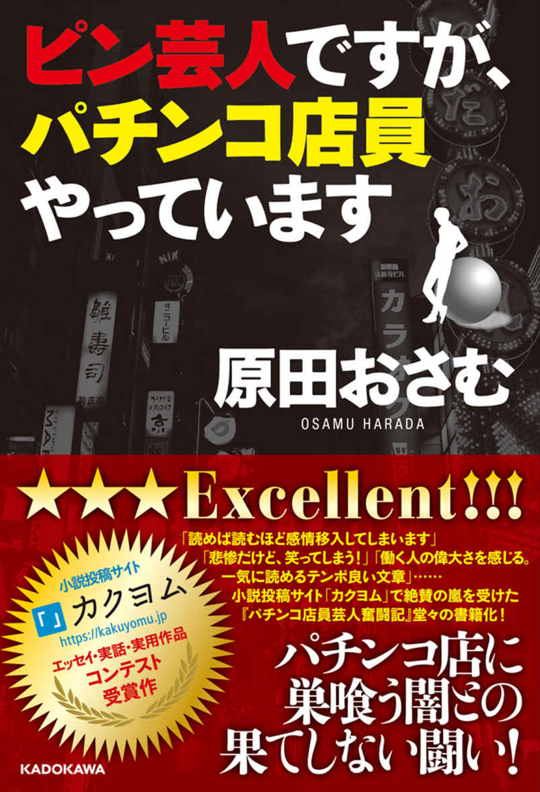

| カクヨムマガジン VOL.2 2016年の軌跡 | |
| カクヨム編集部 | |
| KADOKAWA (2017) | |
カクヨムマガジン
VOL.2
2016年の軌跡
カクヨム編集部 編
カクヨム
本作品の全部または一部を無断で複製、転載、配信、送信したり、ホームページ上に転載したりすることを禁止します。また、本作品の内容を無断で改変、改ざん等を行うことも禁止します。
本作品購入時にご承諾いただいた規約により、有償・無償にかかわらず本作品を第三者に譲渡することはできません。
本作品を示すサムネイルなどのイメージ画像は、再ダウンロード時に予告なく変更される場合があります。
本作品の内容は、底本発行時の取材・執筆内容に基づきます。
本作品は縦書きでレイアウトされています。
また、ご覧になるリーディングシステムにより、表示の差が認められることがあります。
カクヨムとは？
株式会社KADOKAWAと株式会社はてなが共同で開発するＷｅｂ小説サイトです。
「自由に物語を書ける、読める、そして多様な小説が評価される場所を作る」ことを理念とし、以下の「三つのできること」を掲げています。
①誰でも思いのまま小説が書けます。
作者がストレスを感じることなく執筆・公開ができる投稿フォームをご用意しています。
②いつでも好きな時間・場所で小説が読めます。
読みやすいインターフェイスで、ＰＣ版はもちろんスマホ等のアプリ版も公開しています。
③あなたの「面白い」を伝えられます。
読んだ小説の感想を書き、他の人にオススメできる機能に特に力を入れています。
是非ともサイトに訪れて多くの作品に出会ってください。そして「面白い」を感じたら、その思いを作者や多くの人に伝えてみてください。また創作意欲が湧いたら作品を投稿し、表現者となってください。カクヨムは読書、おすすめ、創作体験ができるサイトです。
https://kakuyomu.jp/
目次
短篇部門
《読者推薦》
《編集部推薦》
中篇部門
《読者推薦》
《編集部推薦》
長篇部門
《読者推薦》
《編集部推薦》
始動篇（二〇一五年一〇～一二月）
一〇月七日
ティザーサイト開設
一二月二五日
小説投稿機能の先行公開（α リリース）
第１回カクヨムＷｅｂ小説コンテスト応募受付開始
投稿受付開始記念に人気イラストレーター・bob氏によるオリジナル壁紙も配布しました。
一二月二八日
投稿レクチャー動画公開
覚醒篇（二〇一六年一～三月）
二月八日
「オンラインサービスと本のプロモーションを考える会」第二回 萩原編集長登壇
二月二五日
初期の二次創作許諾タイトル（計十九タイトル）が出そろう
◆小説「オーバーロード」「ココロコネクト」「冴えない彼女の育てかた」「涼宮ハルヒの憂鬱」「精霊使いの剣舞」「ゼロの使い魔」「バカとテストと召喚獣」「フルメタル・パニック！」「問題児たちが異世界から来るそうですよ？」「闇の皇太子」「幼女戦記」「ログ・ホライズン」
◆ＴＲＰＧ「アリアンロッドＲＰＧ２Ｅ」「ガーデンオーダー」「神話創世ＲＰＧ アマデウス」「ダブルクロス The 3rd Edition」「メタリックガーディアンＲＰＧ」
◆ゲームやその他コンテンツ「勇者死す。」「石膏ボーイズ」
二月二八日
第１回カクヨムＷｅｂ小説コンテスト応募締め切り
応募総数五七八八。その中から一八五作品が読者選考を通過した。
二月二九日
正式オープン＆コンテスト読者選考開始
公式レーベルとして一〇編集部が参加した。
◆エンターブレイン ホビー書籍、角川スニーカー文庫、カドカワＢＯＯＫＳ、角川ルビー文庫、ドラゴンブック、富士見Ｌ文庫、ファミ通文庫、ＭＦ文庫Ｊ、ファンタジア文庫
オープン記念に人気イラストレーター・しのとうこ氏、so-bin氏による描き下ろしイラストを使用した壁紙が配布された。
三月六日
『オレオ』投稿をきっかけに短篇ブーム到来
三月八日
週間ランキング実装
三月一二日
はじめてのカクヨム〈読み方ガイド〉公開
三月一五日
スマートフォンアプリをリリース
三月三一日
はじめてのカクヨム〈読み方ガイド〉アプリ編公開
勃興篇（二〇一六年四～六月）
四月一日
ビーズログ文庫、ビーズログ文庫アリスレーベルページ追加
四月七日
ニコニコトップからの誘導開始
四月一五日
近況ノートへのコメント機能を追加
四月二五日
カクヨムのニコニコチャンネルを開設
二次創作タイトル「ドレッドノート」追加
四月二六日
少年エース×カクヨム「漫画原作小説コンテスト」告知開始
四月二七日
「創作論・評論」ジャンルを追加
「カクヨム放送局」プレ版を放送
四月二八日
月間ランキングを追加
五月一一日
カクヨム「エッセイ・実話・実用作品コンテスト」開催告知
五月二九日
「カクヨムユーザーミーティング Vol.1」開催
六月一日
「エッセイ・実話・実用作品コンテスト」応募受付開始（～七月一四日）
六月二三日
「第１回 カクヨムＷｅｂ小説コンテスト」最終選考結果を発表
大賞 ファンタジー部門：『誰にでもできる影から助ける魔王討伐』著者＝槻影
大賞 ＳＦ部門：『横浜駅ＳＦ』著者＝イスカリオテの湯葉
大賞 ホラー部門：『僕の妹はバケモノです』著者＝鹿角フェフ
大賞 現代ドラマ部門：『ヒーローは眠らない』著者＝伊丹央
大賞 現代アクション部門：『勇者のクズ』著者＝ロケット商会
大賞 恋愛・ラブコメ部門：『平安時代にタイムスリップしたら紫式部になってしまったようです』著者＝中臣悠月
大賞 ミステリー部門：『うさぎ強盗には死んでもらう』著者＝唐間ネロ
累計ランキングを追加
小説編集機能（字下げ、ルビの変換）を追加
メールマガジン「カクヨム通信第１号」配信
以降、隔週にて配信を行う。
六月二九日
「カクヨム放送局 Vol.1」配信
パーソナリティに声優の羽多野渉さんと高橋李依さんのお二人を迎え、以降、一月に一回のペースでカクヨムにまつわるあれこれを放送中。
躍動篇（二〇一六年七～九月）
七月七日
「カクヨムユーザーミーティング」に関するアンケートを実施
七月一三日
スマートフォン版のナビゲーション変更
七月一四日
Ｗｅｂ版にエピソード本文の背景色、フォントのカスタマイズ機能を追加
「カクヨムユーザーミーティング」に関するアンケートの結果を公開
七月一九日
少年エース×カクヨム「漫画原作小説コンテスト」応募受付開始（～八月三一日）
八月一〇日
『幼馴染の自動販売機にプロポーズした経緯について。』（著者＝二宮酒匂）発売
ユーザー投稿作品初の書籍化。オーディオドラマも配信された。
トップページに「人気長編ピックアップ」枠を追加
八月二一日
「カクヨムユーザーミーティング Vol.2」開催
八月二三日
二次創作許諾タイトル追加「グリムノーツ」
八月二四日
グリムノーツ×カクヨム「ゲームシナリオ用小説コンテスト」応募受付開始（～一〇月二日）
九月一日
「秋の夜長におすすめ 恋愛＆ファンタジー小説」特集を公開
シン・ゴジラの影響か「シン・○○」作品が流行る
九月七日
トップページに「注目小説ピックアップ」枠を追加
九月一〇日
書籍発売『青熊将と恋する若妻 なんか変なのが嫁に来た。』著者＝筧千里
九月一二日
エピソード応援機能の追加
九月一五日
『君の名は。Another Side:Earthbound』公式連載開始
『聖剣の刀鍛冶〈ブラックスミス〉』公式連載開始
九月一六日
SmartNewsにコンテンツ提供『君の名は。Another Side:Earthbound』他
九月二八日
『ストライクウィッチーズ』関連８作品公式連載開始
九月三〇日
「エッセイ・実話・実用作品コンテスト」最終選考結果を発表
受賞作『モノクローム・サイダー』著者＝鯨武長之介
受賞作『東大生が１日を50 円で売ってみたら』著者＝高野りょーすけ
受賞作『パチンコ屋店員芸人奮闘記「それでも僕は、やめていない」』著者＝原田おさむ
（二〇一六年一〇～一二月）
一〇月三日
ビーズログ文庫×カクヨム「恋愛小説コンテスト」応募受付開始（～一一月三〇日）
一〇月八日
『妹、分裂する』（著者＝竜田スペア）発売
一〇月一一日
「あなたの街の物語」コンテスト開催告知！
二〇二〇年に向けて日本の魅力を再発見する短編小説・エッセイを大募集した。
一〇月一四日
「あなたの街の物語」コンテスト 応募受付開始（～一一月三〇日）
一〇月一八日
「カクヨム」編集長が語る、これからの「出版」「編集」の姿（日本出版学会出版デジタル部会にて講演）
一〇月二六日
少年エース×カクヨム「漫画原作小説コンテスト」最終選考結果を発表
大賞『父さんな、デスゲーム運営で食っているんだ』著者＝みかみてれん
小説検索に「新作順」「更新順」「人気順」での並び替え機能を追加
一一月一〇日
Novel 0 レーベルページ追加
水野良『アカシックリコード』公式連載開始
二次創作許諾作品リストに『アカシックリコード』が追加
一一月一五日
『いちいち癇に障るんですけどっ！』（著者＝如月芳美）発売
一一月二一日
エピソード応援コメント機能を追加
小説検索のデフォルトの並び順を「更新順」に変更
一一月二二日
山本弘さんの「落語・掛け算」がバズる
一一月二四日
「ニコニコ自作ゲームフェスＭＶ」カクヨム大賞 応募受付開始（～一二月二二日）
一一月二五日
角川文庫 レーベルページ追加
坊木椎哉『きみといたい、朽ち果てるまで ～絶望の街イタギリにて』『この世で最後のデートをきみと』試し読み連載開始
「第１回 カクヨムＷｅｂ小説コンテスト」大賞７作品刊行記念プロモーション映像を公開
一一月下旬
ユーザーの自主企画が盛り上がる
一二月一日
ジャンルを新編成に移行
一二月七日
グリムノーツ×カクヨム「ゲームシナリオ用小説コンテスト」最終選考結果を発表
大賞『灰の少女とガラスの騎士』著者＝さちはら
一二月八日
ＰＣ版トップページをリニューアル
コンテストの応募作品一覧から小説検索のコンテスト応募作品の絞り込みを追加
一二月一二日
無料の電子書籍「カクヨムマガジン VOL.1」配信開始
一二月一四日
ユーザー企画用コンテストを追加
一二月一六日～二一日
編集者がオススメするカクヨム作品集！ 公開（第１～３回＋番外編）
一二月二〇日
角川文庫×カクヨム「この仕事がおもしろい！「働くヒト」小説コンテスト」開催告知
一二月二一日
「エッセイ・実話・実用コンテスト」受賞者高野りょーすけさんのインタビューがバズる
一二月二二日
「第２回 カクヨムＷｅｂ小説コンテスト」応募受付開始（～二月九日）
一二月二四日
第１回カクヨムＷｅｂ小説コンテスト大賞７作品同時刊行
書籍発売『ヒーローは眠らない』著者＝伊丹央
書籍発売『誰にでもできる影から助ける魔王討伐』著者＝槻影
書籍発売『横浜駅ＳＦ』著者＝柞刈湯葉
書籍発売『僕の妹はバケモノです』著者＝鹿角フェフ
書籍発売『勇者のクズ』著者＝ロケット商会
書籍発売『平安時代にタイムスリップしたら紫式部になってしまったようです』著者＝中臣悠月
書籍発売『うさぎ強盗には死んでもらう』著者＝橘ユマ
カクヨム大賞作品の感想を書いてプレゼント貰おうキャンペーン！実施
一二月二七日
近況ノートへのコメントのメール通知機能を追加
ヤングエースＵＰにて『横浜駅ＳＦ』コミカライズ連載開始
一二月二八日
『おにぎりスタッバー』（著者＝大澤めぐみ）発売
『横浜駅ＳＦ』緊急重版決定！
一二月二九日～三一日
「横浜ビール×KADOKAWA有明フェスト２０１６冬」
「ホテルサンルート有明」内のレストラン「創菜Ｐａｔｉｏ」にて、第１回カクヨムＷｅｂ小説コンテスト大賞作品とのコラボレーションメニューが実現！
飛躍篇（二〇一七年一月～）
一月六日
雑誌「ダ・ヴィンチ」17 年２月号にＷｅｂ小説の特集記事が掲載
カクヨムＴＶＣＭ放映開始（ＴＯＫＹＯ ＭＸ、サンテレビ）
一月一〇日
『異空菓子処「ノン・シュガー」』（著者＝神田未亜）発売
エピソードの公開時に公開完了画面を表示
一月一四日
『御伽噺を翔ける魔女』（著者＝山本 風碧）発売
『憧れの魔法少女の正体が男でした。』（著者＝山田絢）発売
一月一八日
ＳＰ版トップページをリニューアル
応援コメントのメール通知機能を追加
一月一九日
カクヨム登録ユーザー10 万人突破!!
一月二〇日
「第１回 カクヨムＷｅｂ小説コンテスト」大賞授賞式
一月二三日
カクヨム〝Ｗレビュー〟キャンペーン開催！
「はじめての★をあなたに......」キャンペーン
「これは読みたくなる！ カクヨム名レビュー発掘会」キャンペーン
おすすめレビューコメントのメール通知機能を追加
一月二五日
「あなたの街の物語」コンテスト 最終選考結果を発表
金賞『黒い町、色づいて今。』著者＝山田けい
銀賞『タコバヤシ』著者＝新樫 樹
銅賞『帯結び』著者＝肩パット・Ｓ・譲吉
一月二六日
カクヨム放送局 presents「スシがスキ！ キング・オブ・寿司小説 決定戦」開催
一月三一日
『常夜ノ国ノ天照』（著者＝諸口正巳）発売
二月一日
今週のｇｏｏｄレビュワー（期間：一月二四日～一月三〇日）の表彰
二月二日
『現役東大生が１日を50 円で売ってみたら』（著者＝高野りょーすけ）発売
『ピン芸人ですが、パチンコ店員やっています』（著者＝原田おさむ）発売

二月一〇日
『おめでとう、俺は美少女に進化した。』（著者＝和久井透夏）発売
『この勇者が俺ＴＵＥＥＥくせに慎重すぎる』（著者＝土日月）発売
短篇部門
《読者推薦》
フォルカスの倫理的な死 著＝枕目
おやすみ、おちんぽ 著＝太刀川るい
《編集部推薦》
百合だと思ったらノーマルだった。 著＝秋保千代子
《短篇部門総括》
カクヨムの二〇一六年は短篇から始まったといっても過言ではない。特にＳＦジャンルにおける隆盛は著しく、アンケートの結果からも見て取れる。読者推薦は二作とも同ジャンルであり、そのほかに『∝ ⊆ ⌘ ﹆ ∵⊿ ∠ 』（著＝鳥辺野九）、『イーガン病』（著＝roncele）、『【短編】女の子と一緒に過ごすだけの簡単な刑』（著＝レーネ准将）などもＳＦ短篇の代表作である。
教育現場で計算の順序問題がしばしば話題となるが、『落語・掛け算』（著＝山本弘）は問題提起となる作品。ツイッターを通じて広く読まれた。同じく現代的なテーマを扱った作品として『僕たちのキラキラネーム』（著＝花咲紫音）がある。
初期には業界裏話が話題となることが多かった。『あるアニメ製作スタジオの終焉について』（著＝高栖匡躬）はアニメ製作スタジオについて書かれた良作である。現在は作品が取り下げられ、カクヨム上で読むことができないのが残念だ。
その他に良質のミステリーである『貴方はこの本、読めますか？』（著＝毛賀不可思議）、リアルで実施されたユーザーミーティングについて書いた『カクヨムユーザーミーティングレポート』（著＝沢田和早）、創作者の苦悩をメタフィクションの形で描き、ユーザーの共感を得た『走らされるメロス』（著＝水尾）、『オリキャラ裁判』（著＝宗谷 圭）など、印象に残る短篇が多かった。
ユーザー作品は、二〇一七年二月一四日時点にカクヨム上に掲載されていたものを収録いたしました。
ごきげんよう、新人類。
あなたは当社の商品で偉大なる一歩を踏み出すことができます。
これまでの人類がけしてできなかったことです。
何も殺さずに肉を食べることができるのです！
当社のラインナップをぜひごらんになってください。
ポーク、ビーフ、チキンにラパン、そしてジビエ......すべて一切の殺生なく生産されたお肉です。当社の「無限に増殖する自然細胞」を使ったテクノロジーにより、ついにみなさまは食べるために動物を殺すという運命から解放されたのです。
これほど倫理的なことがあるでしょうか？
わたしは動物愛護団体の皆様の前でも、堂々とネクタイをしめてステーキを頰張ることができます。間接的にすら、何も殺していませんから。
ノンカルマ・フードサプライはみなさんのあらゆるニーズに対応します。われわれには、より倫理的な肉を世界じゅうに届けるだけの潜在的生産力があります。
わたしの手もとにあるパンフレットは傷んでボロボロだった。折り目が破れかけていた。五年前のものだから無理もない。今どき、紙製のパンフレットを作る企業も珍しい。
顧客に向けたメッセージの背景には、工場の写真が印刷されている。ノンカルマ・フードサプライの工場内は真っ白で、人間は一人もいない。当社の工場はとても清潔です。微生物汚染の原因となる人間の作業員は一人もいません。とある。
次のページに移ると、球状の肉の写真がある。となりにはワイン色のソースがかかったステーキの写真、その下には色々な肌の色の子供が手をつないで微笑んでいる写真があった。
向かいのページには、広い草原で草を食んでいる牛たちの写真がある。その草原の上には雲ひとつない空が広がっていて、その青空に白抜きの文字でこうある。牛たちはついに、人間のために肉を生産するという過酷な運命から解放されました。と。その結果牛たちがどうなったか、わたしは知っている。
「嫌なものをお読みになってますね」
しわがれた声がした。となりの席に初老の男が座る。古くさい型のジャケットを着た男だった。彼はわたしのパンフレットを忌々しそうに睨み、煙を天井に向けて吐いた。彼は喫煙者だった。
「これからご案内する先では、そのようなものを決してお出しにならないようにお願いいたします」
「わかっていますよ」
「お願いしましたよ」
彼はそういって紙巻きタバコを口にくわえ、また煙を吐いた。紙巻きタバコで喫煙する人間なんてすごく珍しい。ニコチンを摂取する人は今ではごく少数派で、喫煙という旧来の方法を好むものはその中でもさらに少ない。ようするに彼は、年齢のことを計算に入れても、ひどく古いタイプの種族だった。
しかし彼の姿はここによく似合っていた。ここはとあるオフィス街の地下にある会員制のクラブだ。看板も出していないし表向きからは店だとわからない。中に入ると、２０００年代初頭のバーを模した空間が出迎えてくれる。
彼は周囲をちらと見回したあと、カウンターの上の灰皿に灰を落とした。灰皿。わたしはここに初めて来たとき、それが何に使うものなのかまったくわからなかった。
彼はコーヒーを注文した。
メニューを手に取る。表紙は革張りだ。動物の皮膚を加工したもの。表面に毛穴の痕跡がある。中にはハードリカーや多量のカフェインを含んだ飲料の名前が並んでいる。品名のとなりに書かれているのは値段だけで、カフェインやアルコールの摂取リスクに関する同意を求められることもない。
わたしは部屋の片隅に目をやる。木製の本棚があって、紙の本がたくさんある。紙の本の生産はとても非倫理的なことだと小学校で習った。その二十一世紀の風習は、情報伝達の手段としてはあまりにも効率が悪く、大量の森林伐採に支えられていた、と。
本棚の中には、今では非常に暴力的でエロティックな内容とされている日本のコミックもある。その隣では、壁に固定された古い液晶テレビが、今ではとても許されない内容だらけのハリウッド映画を映している。
ようするに、ここでは時間が止まっている。今では悪とされている過去の生活習慣が、まだ生きている。表の世界で排除されてしまったものが息をしている。だからわたしはここが好きだったし、彼がここを待ち合わせ場所に指定してきたときは嬉しかった。
「わたし、この店にはよく来るのです」
「そうですか」
彼はそっけない返事をしたが、いくぶん親近感をもってくれたように見えた。彼はわたしを値踏みするように見た。といっても、あくまで品を失わない範囲でだが。
「ニトベさまのご紹介なんですね」
「ええ」
「......結構です」
彼は後ろを振り向いて、うなずいた。
片隅の席から小柄な女性が歩みよってきた。足音はしなかった。彼女はわたしのとなりに座り、にっこりと笑った。東欧風の顔だちで、年齢の分かりにくいタイプだった。少女のようにすら見えた。
「ごめんなさいね。試すみたいな風で」
初めから彼女はとてもフレンドリーだった。でも馴れ馴れしい感じは少しもしなかった。そういう近づき方ができる才能があるのだろう。反対側に座っている男はいわば門番のような役割で、彼女がわたしの世話をしてくれる人間だということはすぐに理解できた。
「あなたはそうバカじゃないタイプだとすぐわかったけど」
わたしは何も言わなかった。
「だれとでも取引するわけにはいかないから」
彼女は端末をとりだし、わたしのほうを見たまま片手だけで操作した。わたしは黙っていた。
「こういうのは人間が一番のリスクだから。なんというか、大人じゃないといけないのよ。自分のやっていることに自覚的な人間である必要があるわけ。あなたはオーケーだけど、もちろん、違法行為だって自覚はあるのよね？」
わたしは頷いた。
「これは重犯罪ではないから、仮に捕まったとしても実刑にはまず至らない。でもこういう行為というのは、ようするに、わかるでしょ？ なんというか、社会的な制裁とかいうものをとても強く受けるわけ」
わたしはふたたび頷いた。
「世の中には、善いことなんかなにもしないくせに、自分が善人だと思いたがる人間がたくさんいるの。そういう人たちは、自分の外側に悪いものを探して、それを叩くことで自分が倫理的な人間だと思おうとするの。そういう人たちの餌食になるってこと」
三度目にわたしが頷くと、彼女はわたしの目をじいっと見た。それでテストは終了だった。
わたしが顧客になることが決まると、門番役の男は何も言わずにタバコをもみ消し、黙って三人ぶんの代金を払った。
「あらかじめお話しさしあげたとおり、この店を出たときから、端末はすべて使えなくなります。位置情報が残るとまずい」
店を出るときの彼の口調は少し丁寧になっていた。彼は建物の入り口に止めてある車にわたしを案内し、自分は運転席に座った。車の自動運転システムは何らかの改変をされているようだった。わたしは自分の端末を取りだしてみたが、まったくつながらなかった。
「わたしたちから離れないように」
となりに座った彼女が、わたしに紙切れを数枚渡した。
「あなたはこれから、ちょっとの間トラブルに巻きこまれるの。オフィスビルで乗ったエレベーターが故障して、数時間のあいだ閉じこめられる。警備員に助け出されたけど気分が悪くなって、夜まで休む。そのあとエレベーター管理会社の担当者に車で送ってもらう。細かいことは覚えていない、記憶がはっきりしない、それどころじゃなかったから」
「わかりました」
「これがビルの名前、これはそのときの警備責任者の名刺、こっちが管理会社の担当社員の名刺、全部ばっちりだからよけいなことは言わないでね。あとでお詫びのメールが届く。返信はしなくていいわ」
わたしは外を見た。古いビルに設置された巨大モニタが、ノンカルマ・フードサプライの広告を映しだしている。非常に洗練された、空気のような、広告だと思えないような広告。だれもが知るようになり、もう自分の名前を売る必要がなくなった企業に特有の広告。
ノンカルマ・フードサプライの商品は、はじめのうちはまったく歓迎されなかったという。彼らは食べ物と言うより、どちらかというと医療機器を売るようなやりかたで肉を売ろうとしたし、多くの人々はそれに拒絶反応を示したという。人間というのは食べ物に関わることには保守的なのだろう。
彼らのコマーシャルは少しばかり挑発的だったし、いささか宗教的な響きがあったため物議をかもした。しかしむしろ、そのおかげで知名度は一気に上がった。とはいえ、初期の彼らの商品をよろこんで買い支えたのは熱心な動物保護運動家ぐらいだった。
彼らが言うところの「無限に増殖する自然細胞」は、一般的にはガン細胞と呼ばれているものだ。
品種改良されたガン細胞を培養して作られる肉、それが彼らの製品だ。肉を生産するという点については従来の家畜と同じだが、骨や歯などが生産されないことや、運動に使うエネルギーがない点などから動物よりもエネルギー・ロスが少ない。と、少なくともパンフレットには書かれている。
彼らの製品には、経済学者がいうところの規模の経済性というものが強くあった。つまり、規模が大きくなればなるほど効率的になり、生産量あたりのコストを下げることができた。一匹の豚を育てることと、研究所で一匹の豚ぶんの細胞を培養することであれば、前者のほうがかかる金が少ないかもしれないが、百万匹の豚を育てることと、工場で百万匹の豚ぶんの細胞を培養することであれば、どちらが安くあがるだろうか、ということだ。
じっさい、顧客が増えれば増えるほど、彼らの工場は増え、彼らの売る「肉」は安くなっていった。彼らは効率がよく、大規模で、特許に守られていた。
そして、培養された肉が旧来の方法で育てられた肉より安くなった時点で、彼らは賭けに勝った。ファストフードの店で彼らの肉が使われるようになったとき、それを食べて育った子供が自由に消費できる年代に達したとき、彼らは多数派になった。
そして多数派になったとき、彼らはもうひとつ武器を手に入れた。倫理だ。
進歩する科学技術の後ろには、ビジネスがいる。ビジネスはどこまでも科学のあとを追いかけていくし、資金を提供してそれを加速させる。科学が加速すればビジネスも加速する。そしてその後ろには、倫理がある。
タバコの話に戻ろう。先住民たちがもともと利用していたタバコを、コロンブスが「発見」してから、それはしばらく薬として扱われていた。どちらかというと「善きもの」として。やがてそれは普及し、量産され、ビジネスに変わっていった。その後嫌煙の風潮が強まり、それは徐々に「悪しきもの」として扱われるようになり、２０００年代初頭にはすでにその価値観が多数派になっていた。この変化にはおよそ５００年かかっている。
善きものとして見いだされ、悪しきものとして取り除かれていく。同じような変化があらゆる技術で起こってきた。かつてギロチンは人道的な死刑として見いだされ、それはやがて野蛮な行為と見なされて退場した。あるいは電気椅子も。
技術がひとつ見いだされるたびに、倫理は変わっていく。倫理の変化のスピードが人間の一生より長かったうちは、きっとまだよかったのだろうと思う。でも今では人生の長さの期待値はずっとずっと伸びたし、科学技術の進歩は等比級数的に加速していく。
ノンカルマ・フードサプライは、動物を殺さずに肉を食べることができるようにした。いわば彼らは選択肢をひとつ追加した。これによって、従来はあたりまえに行われていた家畜の飼育による肉の生産は、つまり家畜を育てて殺すことは、積極的な意味を帯びることになった。それも急速に。
動物の肉を食べるシーンが「残酷」という理由でテレビで放映できなくなるまで、半世紀もかからなかったという。若い世代が、筋膜や脂肪組織のあるステーキを気味悪がりはじめたとき、それは特殊な反応として認識されたが、すぐに当たり前の反応だと思われるようになった。
伝統的な方法で生産される肉は、日常のものではなく非日常に属するものとなった。美食家や伝統的な料理を守ろうとする人たちのために存在する、特殊な、ホビーに近いものになった。そして世間の人は彼らを非倫理的なものと見なした。
先進的と呼ばれる地域で肉食が違法となるまでの時間は、さらに短かった。培養された肉しか食べたことのない若者たちがたくさんいて、彼らの多くは、肉を食べるために動物を殺すことがどういうことなのかうまく想像することすらできなかった。それは彼らにとってただ理解不能な行為で、ただ悪だった。
わたしの乗った車は、たぶん意図的にだろうが非効率なルートを通り、都市のはずれにある古びた住宅街にたどり着いた。かつて大規模な新興住宅地として造成された地域だ。同じ時期に同じような様式の建物がいっせいに建てられ、同じぐらいの年代と社会階層の人たちが一斉に移り住んだ。そして一斉に年をとっていった。
均一なその風景の中に、ひとつだけ大きく新しい建物があった。それは白くのっぺりした三階建てで、ひどく印象に残りにくいような、とらえどころのない外見をしていた。車はそこに入っていった。
「来れたんだな。こっちだよ」
会場は個人経営の店ぐらいの規模で、想像していたよりもいくぶん小さかった。丸いテーブルが四つ並んでいて、そのうちのひとつから友人のニトベが手招きしている。わたしの席は彼のとなりに用意されていた。
「女性の会員は珍しいし、若いとなるともっと珍しい」
ニトベは笑った。彼は無邪気なまでに嬉しそうだった。ふだんの何もかもに飽きたような表情がうそのようだった。違法な本物の肉を食べるということはそれほど嬉しいことだろうか。
「嬉しいさ。というより満たされるんだな。今のわれわれにはなにか欠けたものがあって、それを埋めてくれるような気がするんだ」
「動物が死ぬことが？」
「いや。もっと、なんていうか、納得みたいなものだ」
ニトベは成功した骨董商で、前世紀末に大量生産された石油樹脂製の人形をけっこうな値段で好事家に売りさばいている。四十代だが完璧にアンチエイジングしているのでほぼ青年に見える。
まわりを見まわすと、客はみな裕福そうだった。このクラブの安くない会費を払えるのだから当たり前だろう。彼らの多くは中年から初老ぐらいで、有名な俳優もいた。みな一様に上機嫌だった。発覚したら社会的地位を失いかねないのに。違法な家畜肉の料理にそれだけの価値があるのだろうか。
「本能の補完みたいなものかな。まあ、言葉にはしにくいよ。食べればわかる。いや、わからないかも知れない。わからない人間のほうが多いだろう。だからこうなったんだからな。でも、多くの人にわからないからといって、そこに何もないわけじゃないんだ」
ニトベはだいたいそのようなことを言った。
「それがわかることを願ってる。そのために来たんだから」
わたしは言った。
わたしは殺して作られた肉を食べたことがない。
その最初の世代。
「ほら、来たぞ」
本物の牛のステーキが運ばれてきた。
フォルカスの話をしたい。
だれでもいいから聞いてほしい。
フォルカスは黒猫だ。ネコを精巧に模したサイボーグ・ペットだ。化学繊維の毛皮はふんわりとしていて、柔らかくて暖かい。本物のネコを抱いているのとほとんど変わらない感覚だ。その柔らかさはシリコン樹脂の柔らかさで、その暖かみは電気調理器と同じ原理だとしても。
フォルカスはかつて本物の黒猫だった。本物の血と肉と毛皮をもった本物の雑種の黒猫だった。機械のフォルカスはその代わりだ。
本物のフォルカスは、わたしが殺した。
市の処理施設に連れて行って、安楽死させた。
はじめ爬虫類や両生類の飼育が違法になったとき、わたしは何も関心を抱かなかった。そのことに興味がなかったから。
なぜ禁止されるのか？ なぜなら彼らは虫や小動物を食べるからで、それらを飼うことはそのエサを殺すことと同義だから。それは非倫理的な行為だという論調は、どちらかというと筋の通ったものに思えた。もちろん愛好家たちは抗議の声をあげたけど、彼らはもともと少数派だったから、時代の流れに逆らえなかった。彼らが飼っていた生物はどこにいったのだろう。
一方で、犬は時代の流れに従った。
古代、犬は人間と狩りの獲物を分けあっていた。前世紀の犬はカンガルーや牛から作られた配合飼料を食べていた。今の犬は培養された肉で作られたドッグフードを食べている。彼らはそろって時代の変化に合わせることができた。
問題は猫だった。猫は犬ほど素直ではなかった。正確に言えば、猫たちの一部は新しい肉に問題なく適応したが、少なからぬ猫たちはいっさい受け付けなかった。理由はわからない。今でもわからない。
フォルカスはノンカルマ・フードサプライの製品を受け付けなかった。だからわたしは、フォルカスには魚の缶詰や家畜による肉の缶詰を与えていた。それらは少し高価だったが、手に入った。家畜を規制する国が増えるにつれてどんどん高価になっていったけど、まだ手に入った。
しかしある日、とうとう手に入らなくなった。違法品になったのだ。きっかけはペットフードという名目を抜け道にして、禁止されている食肉を流通させていたグループだった。彼らはこっそり鶏を飼っていて、その肉を高い価格で売っていた。彼らは捕まり、鶏たちはすべて安楽死させられた。
ペットフードにも人間向けと同じ基準が適用され、動物を殺して作った肉は何であれ利用できなくなることになった。猫を飼っている人たちは反対したけれど、結果的には何もできなかった。爬虫類を飼っていた人たちの一部は、むしろ熱心に規制を支持した。
わたしはフォルカスにえさを与えることができなくなった。高いお金を払ったり怪しげなつてをたどったりして、何度かペットフードを手に入れたけど、焼け石に水だった。フォルカスはどんどんやせ細っていった。
パートナーと相談した。結論はすでに出ていたけど。
わたしたちはフォルカスを殺すことにした。
フォルカスはわたしの当時のパートナーが拾ってきた猫だった。フォルカスは捨てられていた。それなりに弱っていた。彼は猫なんか触るのも初めてだと言いながら、どうにか二人でがんばってフォルカスを回復させた。フォルカスはまだ子猫だったし、わたしたちはまだ学生だった。
フォルカスを殺すことはわたしたちの人生のフェイズがひとつ終わることを意味していた。それは苦痛ではあったけど、受け入れられることのように思えた。
保険所にフォルカスを連れていくと、見知らぬ男が近づいてきて自己紹介をした。彼はペットを処分する人向けに葬儀サービスを提供する会社の社員だった。ネコのためのささやかな葬儀を、専門の業者に依頼できるという。
ある会社は、七種類の宗教に応じた葬儀オプションを用意してくれるという、別の会社は、ネコの遺灰を、特別に用意された無人島の静かな砂浜に撒いてくれるという。また別の会社は、ペットの遺伝コードをすべて解析して書きだしてくれるという。どれも悪い冗談のように思えた。
わたしがフォルカスの死を見届けることを希望したとき、職員はとても嫌がり、何度もわたしの気を変えさせようとした。
「どうしても見たいんですね」
仮面みたいなマスクをつけた保健所の係員が言った。
「でも大丈夫です。安楽死です。苦痛はありません。眠るようなものです」
「苦痛がないってどうしてわかるんですか」
「はじめに苦痛を感じる機能を麻痺させるからです」
「苦痛を感じる機能がマヒしたってどうやってわかるんです」
係員は数秒間黙った。
「実証されてます。実験によって」
ガラスの向こうで、フォルカスは眠るように動かなくなって、バッテリーが切れるみたいにふっと目を閉じた。あっという間、あっけない。たしかに苦痛は感じていないように見えた。
半月ほど経って、フォルカスの遺体は方解石になって手もとに届いた。透明な結晶がおさまった小さなケースだ。遺骨からとりだした炭酸カルシウムの結晶だ。同封された業者のメッセージには、希望に応じてペンダントやキーホルダーに加工できると書いてあった。わたしはそれらを引きだしの一番奥にしまった。
フォルカスを飼い始め、彼に缶詰のエサを与えたとき、自分が悪いことをしている自覚なんてこれっぽっちもなかった。じっさい悪いことなんかしていなかった。ただネコを飼っていただけなのだ。ネコを飼うのは悪いことじゃなかった。ちょっと前までは。
一ヶ月後、フォルカスがわたしの目の前にいた。
パートナーが機械のフォルカスを買ってきたのだ。
「本物そっくりなんだ。フォルカスのフォト・データや動画から骨格を分析して、完全にコピーした。性格も可能なかぎりトレースしたって」
たしかにそれはフォルカスだった。本物そっくりそのままだった。ガリガリにやせ細っていないことを除いて。
彼の気持ちは本当にありがたかったし、オーダーメイドの動物ロボットが安い買い物ではないこともよくわかっていた。
「何が不満なの？」彼は言う。
わたしは何が不満なのか自分でも分からなかった。
「フォルカスと同じ形をしていて、同じようにあったかくて、同じように動くんだ。違いは肉を食べないというだけ。代わりに充電が必要なだけ。それだけだろう？」
機械のフォルカスはテーブルの上に飛び乗り、わたしのひざに飛び移った。その動作は完全にフォルカスだった。
「ね。同じだろ？」
それでわたしたちの関係は終わった。
「お召し上がりにならないのですか」
給仕がわたしの顔をのぞきこむ。
ふいに現在に引き戻された。
目の前にステーキの載った皿がある。周囲の会員たちは不審そうな目でこちらをみている。ニトベがひじでわたしを小突く。ここで食べないことは許されないのだと気付いた。
「ちょっと、ぼんやりしていたんです。いろいろあったから」
目の前のステーキは、たしかにわたしが知っている肉とは違っていた。それは均一ではなかった。均一な細胞組織に均一に注入された脂肪が入りこんでいるような、わたしの知っている肉ではなかった。
脂肪は切り身のふちにかたよっていて、赤身の部分はいくつかにわかれ、その間に膜のようなものがあった。血管のようなものがあり、少し赤みがかった汁がにじんでいた。
わたしが肉を口に含むと、周囲の雰囲気は一気にやわらいだ。わたしは彼らに受け入れられたのがわかった。拍手をする人すらいた。
でもわたしには何もわからなかった。ニトベの言っていることも、フォルカスがなぜかたくなに培養肉を拒んだかも、どうしてもわからなかった。
ようするにここはわたしの居場所ではなかったのだ。そう思った。わたしは「それ」を理解できない側の人間なのだ。でも、わたしに理解できなくても、そこにはきっと何かあるのだろう。
周囲の人々はなごやかに笑い合っていた。
警察が突入してくるまでは。
そしてわたしはここにいて、取り調べを受けている。
警察の態度は、想像していたよりは紳士的だった。わたしが大人しく従っているせいかもしれないが。
どのみち何も隠そうとは思っていなかった。肉が食べたかったわけではないのだ。もっと別の何か。それはわからなかったけど。
一通りのことが終わった時には、刑事たちの態度はずいぶん柔らかいものになっていた。けっきょく、追求されるわたしの罪は微罪だけで、肉食については、証拠品が胃で溶けてしまっている。
「君はちゃんと反省しているからね」
刑事に言わせると、わたしはちゃんと反省しているらしかった。
「家に帰れるんですか」
「それはまだ少し先だ」
「家にいるフォルカスを充電してやらないと」
「フォルカス？」
「猫です」
「生きた？」
「いえ機械の。その。充電してやらないと」
「動かなくなる」
「そうです」
「その猫は機械なんでしょう？」
「そうです」
「電池で動くんでしょう？」
その初老の刑事は、バッテリーのことを電池と呼んだ。
「だったら大丈夫ですよ。放っておけばいいんですよ。電池が切れても、あとで充電すればそっくり動き出すじゃありませんか。機械なんだから。痛みもなにも感じないんだから。機械なんだから」
わたしは目を閉じて、誰もいない自分の部屋を想像した。そこでフォルカスはゆっくりと動かなくなる。
〔枕目さんの他作品はカクヨムでお楽しみください。〕
微妙に歪んだドアを開けて帰宅して、明かりをつけるとまずおちんぽに挨拶した。
「やあ、元気かい？」
培養液の中に無言でたたずむそいつは、今日も元気そうだった。こちらの苦労も知らないで。
冷蔵庫から宅配ピザの残りを出して温める。
ＰＣをスタンバイから回復させたあたりで、軽快な音を立てて加熱が終わり、湯気を立てるそれを指先でつまんで咀嚼する。
溜まっていた更新プログラムが動いている間、ぼくはおちんぽについて考えた。
おちんぽを手術で切り離す技術がなかった時代の人間はどうやって生きていたのだろう。こんな環形動物の出来損ないのようなものを股間にぶら下げて歩いていたなんて到底信じられない。睾丸を損傷するリスクは高かっただろうし、何よりも見た目が悪い。
繁殖することが生命の目的なら、ぼくの本体はおちんぽだ。
ぼくの本体は今目の前の培養液に浮かんでいる、おちんぽで。こうして考えるぼくはそれに奉仕するだけの存在にすぎない。ぼくはおちんぽのために働き、おちんぽのために生きる。
毎日必死で働き、賃金を得る。それはおちんぽを生かしておくために使われる。余ったお金は貯金する。稼ぎがよければ、やがて結婚することだってできるだろう。
そろそろ周りでも結婚する奴が増えてきた。焦りを感じないといえば噓になる。ブラウザを立ち上げてサイトにアクセス。にこやかに微笑んだ顔写真が家電のカタログの様に一覧で並ぶ。これができるのは外見を形作る遺伝子に恵まれたやつだ。どうせ結婚するなら可愛い子がいいけれど、今の時代は見た目は簡単に変えられる。それよりかは運動能力とか、知的能力とか写真には写らないもので決定したい。といってもぼくに選ぶ権利はない。希望を出すだけだ。双方が希望を出し合ってそれがマッチングすればめでたくゴールイン。ぼくは宅急便でおちんぽを彼女に送り、彼女はそれを使って子供を生む。おちんぽは役目を果たし、彼女の家で大切に保管される。きっとおちんぽは幸せな家庭を築くことだろう。養育費を後で見積もっておこうか。ぼくの口座から引き落とされるはずだ。
写真とプロフィールの一覧は暴力的な量をもって続いている。ぼくは一向に進まないスクロールバーを見て、憂鬱になる。いくらなんでも選択肢が多すぎる。もう諦めて自動マッチング機能を使おうか。クリックひとつで無難な選択肢をシステムが選んでくれる。でもぼくはそれに少しばかりの反発心を覚えていた。機械に対するせめてもの人類の抵抗だ。ぼくは自分に自由意志があると信じたい。
結局今日も相手は決まらなかった。ブックマークからニュースサイトに飛ぶ。ホットな見出しにはおちんぽチェンジで逮捕された男のニュースが踊っていた。クリック。自分のおちんぽを他人のおちんぽと交換するという犯罪は、これだけ手口が明らかになっているのに、一向に止まる気配を見せない。自分より収入がある奴の家に忍び込んで、そのおちんぽと自分のおちんぽを交換する。自分のおちんぽは結婚相手の家に送られて幸せな家庭を築く。生物としての勝利だ。
こんなもの、すぐにバレるというのになぜみんな同じことを繰り返すのか。一度捕まれば罪は重い。最低でもおちんぽ没収を数年か、おちんぽ抹消だってありえる。おちんぽを培養液から取り出して焼却。本体を失ったそいつは、働き続けることで社会そのものに対して貢献していかなければならない。種のために働き続ける、それが罰だ。
ぼくはあくびを嚙み殺すと、ＰＣをスタンバイにして、布団に入った。
部屋の明かりを消す前にぼくはおちんぽを眺めた。ぼくの苦労なんて全く意に介さず、ぼくの本体は液体の中で鷹揚に構えていた。さあ、明日もおちんぽのために働かなければならない。
ぼくは小さくつぶやくと、まぶたを閉じた。
「おやすみ、おちんぽ」
〔太刀川るいさんの他作品はカクヨムでお楽しみください。〕
数少ない必修科目、英語の講義が同じクラスだった。
たまたま前後に座っていて、前の席にいた千 尋 が私にプリントを回してくれた。
座る前から、黄色のニットにブルーのフレアスカートというおしゃれが素敵だなって思って。腕も肩もすっきりして見えて、スタイルもいいんだなーと思って。
止めに、プリントを渡してくれる瞬間の「にこっ」が素敵で、うわー美人さんだ、どうしたらこんなになれるんだろうって思った。
一世一代の勇気を出して、お昼休みは一緒にご飯を食べようと誘ってみたら、気持ちよくＯＫしてくれた。
「学食！ 学食行こう！」
千尋は笑って言った。
「桃 子 はどうする？ ラーメン派？ 中華丼派？」
「えっと...... 気分は麻婆丼」
「おっけー！」
新しい生活に慣れない一年生のおかげで混乱を極める食堂の券売機の前で、千尋は手早く二人分の食券を買ってきた。
カウンターに並んで待つ間も、空き席に滑り込んで食べる間も、セルフで食器を片付ける時まで、千尋はてきぱき元気いっぱい。
「すごいね......」
感嘆しか言葉にならない。
「何が？」
「どうすればそんなになれるの、羨ましいよ」
「褒めても何も出ないよー」
「だって、おしゃれだし。優しいし。どうすればそうなれる？」
「優しいはともかく、おしゃれはね。努力すればなれるよ。俺 も相当、試行錯誤したし」
──俺 ？
違和感のある単語に瞬くと、千尋はさわやかな笑顔で言い切った。
「俺、男だから！」
「スカートはいてるじゃん」
「大丈夫。その下にちゃんとついてるから」
全然大丈夫じゃありません。
ありませんが、そうか千尋は女装してるんだ、と素直に納得した。
多分、新しい生活の中で、驚くことに疲れていたんだと思う。
語学は週に４コマあって、その全てが一緒。それ以外の大部屋の講義でも、私たちは一緒になることが多かった。
そんなだから、自然、隣に座って喋っている。
千尋とはいろんなことを喋った。
自宅から片道一時間半かかるという共通点があるとか。
ピアノを小中高習っていたというのも共通点だとか。
私はドビュッシーで、千尋はショパンで、レパートリーは違うとか。
「そういえばさ、千尋。体育は大丈夫なの？」
「大丈夫って何が？」
「更衣室。その格好で男子の所に入っていくと驚かれない？」
「初回は騒がれたよ！」
「デスヨネー」
「ショックだったぜ......」
「いや、ショックをうけたのは周りの人だと思います」
「俺、脱いだら普通なんです」
「噓ばっか」
あはは、とわたしは笑った。
つやつやの長い髪も、形よく磨かれた爪も、誰よりも女らしい。お肌だってすべすべで、一体どこにヒゲが生えているのかと問いたい。
唯一、喉ぼとけだけが、千尋の男らしいところだと思っていた。
六月までは。
六月。すっかり慣れて、計画的欠席が目立つようになってきた頃。
語学のクラスで懇親会が開かれた。
一応、未成年だらけですからね。お酒はなかったはずなんですが。
「それ、サワーだったんだって」
「さわー？ 山の中の沢」
「桃子、自分で何言ってるか分かってる？」
「千尋ー。歩けなーい」
「はいはい。おぶってあげるから」
わたしを背中に軽々と乗せて、千尋はひょうひょうと歩く。
「おまえの家までの路線、聞いてて良かったよ」
「え？ 送ってくれるの？」
「ここで野放しにしたら男がすたる」
「すたるほど男気ないくせにー」
「......おとなしくおぶさってろ」
くったりと頭を乗せた肩は、思っていたよりずっと広かった。
「ねえ、千尋」
「なに？」
「スカートはいてて歩きにくいのに、ありがと」
「おまえがジーンズでよかったと俺は思っている」
「なんでー？」
「中が見えるとか気にせずにおぶえるだろ？」
「そっかー。そういえばねー。わたし、今、千尋が力持ちで驚いている」
「俺はずっと驚きっぱなしなんだが」
「そうなの？」
「俺の女装姿見て引かなかった女子って、桃子が初めてだよ」
「そうなの」
「一応、傷つくんだぜ。好きで女装してるとはいえ、ドン引きされるとさ」
「ドン引きなんかしないもん。千尋の女装は美人さんだからゆるせるもん」
「おまえ、そういうの、他の奴に言うなよ」
最後は苦笑いと一緒に言われて。自宅最寄り駅で別れる時に。
「あーあ。明日からはちゃんとした格好しようかなー」
そう言って、キスされた。
これが俗にいう送りオオカミってやつですね。
と思ったのに、翌週も千尋はピンクのふわふわワンピースで現れた。
ピンヒールのミュールとかはいちゃってさ、どうして転ばないの？ ついでにすね毛は家出中でしょうか。
「やっぱり千尋は美人」
「桃子もおしゃれしようぜ。俺が選んであげるから」
「......そのピンクはちょっと」
「ピンクとは言わん！ もっとこう...... とりあえずスカートはこうぜ！ デカＴにストレートジーンズは卒業だ！」
ぎゅっと手を握られて思わず頷いた。笑いあって、そのまま駅ビルに突撃した。
その様を、同じ語学の別の子に見られていた。
いわく。
「百合だと思ったらノーマルだった」
のだそうだ。
それ以来、大学で会うだけでなくて、いろんなところに一緒に行くようになった。
私がコアラを見たいと言ったから、動物園に行った。千尋は昆虫博物館で白目を剝きそうになっていた。
千尋が好きだというから、絵画展を見に行った。私は欠伸をかみ殺すのに忙しかった。
一番多いのは、講義の行き帰りに待ち合わせて駅の周りのお店をのぞいて歩くことだろうか。
少ないお小遣いの中から着回しできるくらいに似合う服を買おう、と千尋が一緒になって考えてくれるのが嬉しかった。
そうやって、前期の講義が終わり。
長い長い夏休み。
「桃子、雰囲気変わったね」
久しぶりに、小中高の幼馴染たちで集まってみた。
「そういう夢 唯 だって、雰囲気変わったじゃん」
「桃子だけじゃなくて、萌 もね」
「三人とも、服装が制服じゃないからそう思うのよ」
確かに。紺色にエンジのリボンタイというお揃いスタイルだったのが、三人が三人とも違う格好をしている。
萌は、鮮やかなグリーンのタンクトップに紺色のミニスカート。すらりとした足の先にはシンプルなストラップ付のミュール。
対する夢唯は、エスニック柄のワンピースで、カゴバッグを持ち、ビジューのついたサンダルを履いている。
そして私は。
「一番、予想外かな」
萌に笑われ。
「すごい似合っているよ！」
夢唯に手を叩かれた。
何を隠そう、今日のファッションは、休み前に千尋と選んだ最強コーデだ。
スカートは恥ずかしいとショートパンツを試したら、似合ったんだよね。脚は隠すより見せたほうがすっきり見えると、意外な発見でした。
上は、ドルマンスリーブブラウス。二の腕は隠さないとやばかったんだ。
最後に、おそろいで蝶々モチーフのチョーカーを買ったから、それをつけてきた。
「桃子一人で考えたんじゃないでしょ」
ふっと萌が鼻で笑う。私はそっと視線を反らした。
「あ、そうなんだ。誰と誰と？ 彼氏さん？」
夢唯が顔に大きく「ｗｋｔｋ」と書いて聞いてくる。
私はさらに視線をそらした。
「彼氏...... なのかなぁ？」
だってほら。見た目は百合ですから。
長い長い夏休み。
メールだけじゃつまんない。既読スルーじゃないだけマシかもしれないけど、あんなにお喋りな千尋なのに、送ってくるのはスタンプばかりなのだ。
だから待ち合わせしてみた。おデートですよ！
何を着ていこうか悩んで、またしても最強コーデにしてみた。
唯一、アクセは足してみたんだよ。三人娘でそれぞれが似合うのを選びあいっこしてみたから。二人が選んでくれたのは、お花モチーフのブレスレット。
約束は十時、スマホの画面を睨みながら改札前で待つ。
「まだ遅刻じゃないよな？」
千尋の声が聞こえたから顔を上げて、そのまま目を丸くした。
「ドチラ様デショウ？」
「......分かってて言ってるな、桃子」
だってほら。見慣れたふわふわロングヘアにパステルカラーじゃないんだもん。白いシャツにインディゴのジーンズなんて見たことないもん。
髪だけは切れなかったみたいで、ポニーテールにしてる。
控えめなプリントのシャツの上におそろいのチョーカーをつけて、細身のジーンズをはいて、モデルさんみたいだ。
驚きが通り過ぎて、笑いがこみ上げてくる。
「くっそ...... 笑われるとは思ったけどさ」
「だって、似合ってるけどさ、違和感ありすぎで」
「止めたほうがいい？」
聞いてきた声が低くて、わたしは肩を揺らした。
「そんなことない」
ドキドキしてる。
美人さんじゃなくて、イケメンな千尋に。
かあっと頰が熱くなって、口をパクパクさせていると、千尋はいつもの笑顔を浮かべた。
「じゃあ、どっか遊びに行きますか」
「うん！」
どん、と飛びつく。ぽんぽんと肩を叩かれ、手を繫いでくれた。
その腕にすがりつく。
男らしくて、筋張った腕。
太陽の光が朱色に変わって、帰ろうかという時に。
「どうして、今日は男装なの？」
夕陽に照らされた公園のベンチでぴったりくっついて座って、やっときけた。
「おしゃれは嫌いじゃないけどさ。やっぱり、俺は男なわけでして」
「ついてるんでしょ？」
「......ついてるよ！」
「男だから、男の格好をしたいの？」
「まあ、そういうこと」
「じゃあ、なんで女装してたの？」
顔をのぞき込むと、千尋は首の後ろをガリガリやっている。
「......聞いても、引かない？」
「うん」
「ぜったい、ドン引きするなよ」
「しない」
今度はジト目で見てきてる。よっぽど言いたくないんだな。
でも、聞かないと駄目な気がした。
本当に、わたしが、千尋の彼女を名乗りたいなら。
「母子家庭でさ」
最初、ぽつんと言って、千尋は笑った。
「親父が浮気して、おふくろと俺と妹を置いていったんだ。おふくろは愚痴一つ言わずに...... むしろ、それで火が着いちゃったってくらいバリバリ仕事してさ。食うに困ることはなかったんだけど。唯一困ったのが、俺の顔」
「顔？」
「親父そっくりなんだよ。おふくろ曰く、泣くとなお似てる」
そう言った今の千尋の顔が、きっと泣き出す直前の顔なんだろう。初めて見た表情に、じっと見入ってしまった。
「だもんで、恨みはないけど俺の顔を見てるのが辛いって言っててさ。俺としては、一人で頑張ってくれてるおふくろを妙なところで困らせたくないし。じゃあ、親父を見ている気分にならないためには、どうしたらいいかなーと思って」
「女装したの!? 」
びっくりだ。なにその発想。
「妹も親父似なんだけどさ。妹の顔は辛くないって言うんだよ。だから......」
「だから、女装」
「大ウケしたぜ」
「お母さん、笑うしかなかったと思う」
「その次には喜んでくれたぜ。親父に似ていないって」
ああ、そうか、と思った。
お母さんを悲しませたくなかったんだね...... ってびっくりだよ。ただひたすらにびっくりだよ。
黙ってしまった私に、千尋がまた泣き笑いの顔を向けてきた。
「ドン引き──」
「──してないもん。びっくりしてるだけだもん」
むっと唇を尖らせて、千尋の腕にすがりついた。
そして、もう聞かないことにした。今日が男装の理由は。
その変わり。
「家から男装してきたの？」
「あー。玄関出るときは女装。駅のトイレで着替えて、コインロッカーに服は入れてきた」
「またトイレで着替えて帰るの？」
「どうしようっかなー」
ぐるぐると首を回して、千尋は言う。
「正直、家から男装してきたいんですよねー」
「ですよねー」
「おふくろがビビらなきゃ、だな」
「一応聞くけど、パジャマはフリル？」
「ご明察」
「じゃあ、そこで妥協してもらえば？」
すると千尋は、はははっと笑った。
後期が始まりました。
千尋はモデルさんファッションでキャンパスに現れました。
──クラスのみんなの視線が痛いよう。
「見るな」
ミーハーな女子共をきっと睨んだら、ため息を返された。
「百合だと思ったらノーマルでした」
また、そんな言ってる。
千尋はどこか嬉しそうだ。
私は面白くない。イケメン千尋は私だけのものなのに。
「桃子。今日のお昼はどうする？」
「激辛麻婆丼でお願いします」
〔秋保千代子さんの他作品はカクヨムでお楽しみください。〕
中篇部門
《読者推薦》
店長！エルフちゃんがまたクレーム出してます！ 著＝@nana777
桜子さんの殺人レシピ 著＝神島大和
《編集部推薦》
初めてでもよく分かるクトゥルフ講座 著＝seal
細かすぎるけど多分伝わるＷＥＢ小説モノマネ大会 著＝momoyama
《中篇部門総括》
中篇部門は短篇でもなく、長篇でもないということで普段埋もれがちな部門ではあるが、カクヨムらしい作品の宝庫でもある。
アンケートではカクヨム放送局で初期に取り上げられたＳＦ作品『ボーイ・ミーツ・ＡＩ【短編・完結済】』（著＝吾 奏 伸 ）を押す声も多かった。『女子小学生二人が携帯ゲームをする話』（著＝理桜さん）も実はＳＦジャンルの良作。ほのぼのした小学生二人のやり取りに腹筋崩壊する人が続出した。
また業界裏話ものの流れで『とあるエロゲシナリオライターの日常』（著＝ひょうろくだま）、変化球ではあるが同じくお仕事ものである『魔法使い のお仕事』（著＝精力善用国民体育の型）も二〇一六年に良く読まれた作品である。
第１話 エルフと履歴書
ぼくは山崎トシオ。
都心から少し離れた地元のコンビニでバイトする普通の大学生だ。
あー、ひまだ。
そりゃ日曜日の午後三時。
なかなか盛況とは言えない時間帯である。
思わず大きな欠伸が出てしまった。
あー、商品の補充しなきゃ。
でもお客さんいないんだし、減りようがないんだけど。
「あの」
か細い声に振り返った。
するとそこにはいつの間にか、小柄で可愛らしいお嬢さんが立っていた。
肌が真っ白で、金細工のようにキラキラ輝く長い髪。
テレビでしか見られないような美少女である。
そんな彼女の、最も気になる部分。
ぴょこぴょこ。
耳がピンととんがっている。
......エルフだ。
初めて見た。
「は、はあ。どうかいたしましたか」
エルフの少女はじっとぼくを睨みつけている。
どうしたんだろう。
しまった。耳をじろじろ見ていたのがバレただろうか。
エルフは非常に気難しいことで有名なのだ。
下手にクレームにでもなったら大変だ。
すると彼女は一通の封筒を差し出してきた。
どうやらクレームではないらしい。
「あ、郵便ですか。それでしたら、こちらで切手を買っていただいて外のポストに......」
ふるふる。
エルフのお嬢さんは首を振った。
どうやら違うらしい。
確かに見れば、その封筒、あて名もなにも書いていなかった。
「え、じゃあ、どうしたんですか？」
ずいっ。
そのお嬢さん、封筒をぼくに押しつけてきた。
なんだろうか。
まさか強盗？
この封筒の中にエルフの秘薬が詰まっていて、開けたら一瞬で眠らされるとか......。
ぼくは恐る恐る、その中身を見た。
......なにこれ。履歴書？
写真欄には口をへの字に結んだ彼女の写真が貼ってある。
そしてお嬢さんは、店内に貼ってあるポスターを指さした。
『スタッフ急募。日程応相談。土日でられるひと歓迎』
目が合うと、彼女はがばっと頭を下げた。
「よ、よろしくお願いひましゅ！」
嚙んだ。
第２話 エルフと店内あいさつ
エルフのお嬢さんは、無事に面接を合格しました。
チリンチリン。
「いらっしゃいませー」
お客さんに挨拶したが、続くはずのもうひとりのスタッフの声が聞こえない。
通路で商品の整理をしているはずのエルフのお嬢さんを見つける。
彼女は一心不乱にカップラーメンの賞味期限を確認していた。
「エルフちゃん」
声をかけると、ぎろりと睨みつけられた。
うっ。
このお嬢さん、なぜかぼくを目の敵にしているようだった。
シフトが一緒ということでいろいろ教えなければいけないのだが、どうも恐くて声をかけづらい。
前にもエルフが魔法を使って銀行強盗を働いたという話も聞く。
それでなくともエルフは異世界の山奥で、いまだに狩猟生活を送っているという。
つまり、狩りとか獲物の解体が得意な種族なのだ。
しかし、郷に入らずんば郷に従え。
ここではエルフだろうと人間だろうと、店長に雇われるスタッフであることは変わらないのだ。
「エルフちゃん。お客さんが来たら、ちゃんと大きな声であいさつしなきゃダメだよ」
「............ 」
じろり。
「......そんなに睨まないでよ。ぼくのことが嫌いなのはわかるけど、店長に叱られるのはいやでしょ？」
「......べ、べ」
べ？
「べつに、嫌いでは......」
「そうなの？」
こくり。
「じゃあ、どうして睨むの？」
「に、睨んでないもん！」
もん？
あっとエルフちゃんは自分の口をふさいだ。
真っ白な顔が、耳まで真っ赤になっていく。
「お、お父ちゃんが、エルフは田舎もんと思われとっから、舐められんようにせんといかんって......」
しーんと、沈黙が降りた。
「............ 」
「............ 」
ぼくがなんと言おうか考えていると、ふとレジから声がした。
「あのう、いいですかあ」
「あ、はーい」
ピッ、ピッ。
「六百七十三円になります」
お釣りを渡して横を見ると、エルフちゃんがせっせと袋詰めしている。
それを無言でお客さんに渡すと、ちょこんと頭を下げた。
チリンチリン。
「ありがとうございましたー」
「......あ、ありがとうござまひた」
ふう。
「......とりあえず、嚙まずに言える練習しようか」
「は、はい」
第３話 エルフとポイントカード
「あのねえ」
「ご、ごめんなさい、ごめんなさい......」
あれ？
裏の整理から戻ってきたら、レジでトラブルが起こっていた。
エルフちゃんがお客さんに、必死に頭を下げている。
「どうしたの？」
「あ、トシオ」
まだ出会って一週間だけど、さっそく呼び捨てである。
うーん。この子はちょっと人見知りの気があるけど、それでも異世界人ってフレンドリーなひとが多いんだよなあ。
さて。それはそうと、この状況を把握しないと。
カウンターの上を見るけど、大して変わったことはない。
商品はきちんと袋詰めされているし、お釣りもちゃんと渡した形跡がある。
「あのう、いかがしましたか？」
「どうしたもこうしたもないわよ」
小太りなおばさまは、ぷんすか怒りながら言った。
「この子、わたしが出したカード通さなかったのよ！」
おや。
見れば確かに、小銭トレーにポイントカードが置きっぱなしだ。
エルフちゃんは顔を真っ赤にして耐えている。
「あぁ、申し訳ございません」
ぼくは新しくレジを打ちなおすと、カードを通して会計を済ませた。
「まったくエルフかなんだか知らなけど、ちゃんと教育はしておいてよね！」
おばさんはぷりぷりお尻を揺らしながら行ってしまった。
「......エルフちゃん。次に困ったら、すぐぼくを呼んでね」
「............ 」
黙ってるけど、わかってるのかなあ。
「なぜ」
「うん？」
「なぜこっちの世界の店には、こんな面倒なシステムがあるですか」
「面倒なシステムって、ポイントカードのこと？」
こくり。
「エルフの里にはないの？」
「ありません。食料は天がもたらした恵み。狩りの獲物はみなで分け合います」
「へ、へえ。じゃあ、商売はしないんだね」
「ありますけど、あんなものはありません」
うーん。
どうやって説明したものか。
「ほら。日本ってたくさんお店があるでしょ？ みんなポイントつくお店に行きたいよね」
「ならどうしてわざと千円の下に隠すように置くん!? 」
あー。確かにそんなお客さん、けっこういるなあ。
「こっちを試すような意地の悪さ......。許せん、絶対に許せん」
「まあまあ。少しずつ慣れていけばいいから。ね？」
そして次の日。
「あなた！ またカードを通してないでしょ！」
「エルフちゃ～ん!? 」
なんだかほくそ笑んでるぞ。
まさか、わざとやってないよね？
第４話 エルフとお弁当温めますか
「それ温めて」
隣のレジのお客さんが言った。
その手元にはから揚げ弁当がある。
横目で様子をうかがうと、エルフちゃんがちらちらとこちらを見ている。
どうしたのかな。
でも、こっちも混んでてヘルプには入れそうにないな。
「わ、わかりました......」
やがてエルフちゃんはなにかを決心したように頷いた。
「我が一族を導きし四大精霊の一柱、炎のサラマンダーよ。いまこそ我の呼び声に......」
「待って！」
うっかり店ごと爆破しそうなお嬢さんを慌てて止めに入る。
「エルフちゃん。もしかしなくても魔法で燃やそうとした？」
悪びれずに、こくり。
むしろなぜ止めたのかと不思議そうである。
「あのね。研修のときにレンジの使い方、説明されなかった？」
「レンジ、ですか」
彼女の視線は店内をふわふわ漂って、一点で止まった。
「よし」
そしてホットスナックを調理する揚げ油へするりと──。
「それも違うよ！」
「じゃ、じゃあ、なんなん!? 」
なぜか涙目で逆ギレされた。
これ、ぼくが悪いのかなあ。
うしろにあるレンジのドアを開けた。
「これで温めるんだよ」
「こ、この冷たい箱で？」
「う、うん。まあね」
バタン。ポチ。ゴウンゴウン。
──ピーッ。ピーッ。
弁当を取り出して、エルフちゃんに持たせる。
「あ、温かい......。これは魔法？」
「違うよ。まあ、科学も魔法も似たようなものだけど」
やっぱり山奥育ちなだけあって、こういうものにはとんと疎いらしい。
「じゃあ、今度からちゃんとお弁当は温めるか聞いてね」
「は、はい！ わかりました！」
新しい知識を得て嬉しいらしく、隣のレジからは頻繁にその言葉が聞こえてきた。
よしよし、順調に業務内容を覚えていっているな。
あ、でも待てよ。
こういうとき、一点だけ注意しておかないことが。
──ポンッ。
「きゃ！」
「やばい。エルフちゃん、醬油のパックは外して......」
それを見て、ぼくは固まった。
いや、確かに醬油は外さないといけないんだけど！
「お寿司はチンしちゃダメ！」
第５話 オークと姫騎士①
うちのコンビニには、エルフちゃんの他にも異世界人が働いている。
ひとりはオークくんだ。
ここでのバイト歴に関しては、ぼくに次ぐ二番目になるかな。
ご想像の通り、とても大きな身体の男の子だ。顔もちょっと年齢にはそぐわない凄みを持っていて、その筋のひとに間違われることも多い。大概のひとは彼を「すごく恐そう」って言うけど、ぼくは本当はそんなひとじゃないって知っている。
あれはまだ、彼が入って間もないころのことだった。
ある女の子向けアニメとのコラボフェアをやっていて、対象のお菓子を買うごとにくじが引けるというものだった。景品はいろいろあったんだけど、目玉はやはりヒロインが使っていたっていう魔法のステッキの玩具だった。
そしてある女の子が、それを当てたんだ。
よほど嬉しかったんだろう。女の子は誰かれ構わずステッキを振り回して魔法の呪文を唱えていた。お客さんたちは迷惑そうにしていて、少女のお母さんも慌てて頭を下げていた。
そのとき、ちょうどバックルームからオークくんが出てきたんだ。
女の子は反射的に、ステッキを彼に向けて魔法の呪文を唱えた。とっさのことだったのに、オークくんは胸を押さえ、その場にうずくまった。
「ぐ、ぐわああああ。やられたあああああああ」
彼は迫真の演技で、やられ役を演じて見せたんだ。
それはまさに名俳優も舌を巻く、圧巻の演技だった。さすがオークくん。なんでも全力で取り組む粋な男だ。
結果、女の子がマジ泣きした上に粗相をしてしまうという未曽有のパニックに陥った。噂によればその子はステッキがトラウマになり、アニメすら観れなくなったということだ。あの事件に関しては、いまでも『オークくん幼女恐喝事件』として古参の中で語られている。
でも、ぼくだけは知っている。
シフトが終わったあと、事務所の椅子に腰かけて寂しそうに監視カメラの映像を見ている彼のことを。何度もあの場面を再生しては、
「......自分、恐えっすね」
と、つぶやいていた彼の背中を。
ぼくはそれまで、彼のことは近寄りがたいひとだと思っていた。でも、その事件をきっかけに、ぼくは彼が本当はこころ優しい男だってわかったんだ。
まあ、あのときはぼくもうっかりちびりかけたんだけど、それは誰も知らなくていいことだ。
《つづく》
第６話 オークと姫騎士②
で、もうひとりが姫騎士ちゃんだ。
異世界の姫騎士族というなんやわけのわからん種族の女の子だ。
まるで女神のような美貌。そして眩い太陽のような瞳を持つ彼女のバイト入りは、ぼくらモテない系男子にとってセンセーショナルな事件だった。
まあ、彼女の祖先はこちらから移住した人間たちなので、異世界人というのは語弊があるかもしれない。でも法律的にはその呼び方が受け入れられているので、ここではそう呼ぶことにする。
彼女はエルフちゃんが入る二か月ほど前に入ってきた。
姫騎士族はプライドが高いことで有名だ。なぜそんな彼女が客商売を？ というみんなの当然の疑問に、白銀の甲冑姿で履歴書を持ってきた彼女は胸を張って答えた。
「わたしが働くと決めた。それ以外に理由はいるまい？」
さすがは姫騎士さまだ。あまりの堂々とした態度に、ぼくらはそれ以上、なにも言えなくなってしまった。
で、もちろんその研修期間は、ただでは済まなかった。
姫騎士族は基本、メイド族というこれまた謎な種族にお世話されるのが普通なのだという。ゆえに彼女にとって、お客さんの意思を優先するというスタンスはとんと理解できないものだった。
あれはある日のことだった。姫騎士ちゃんは揚げたてほくほくのフライドポテトをホットショーケースに入れようとしていた。
そこへお客さんがやってきた。
「あのう、タバコください」
「うむ。いっしょにポテトはどうだ？ 揚げたてだぞ」
「えーっと。......じゃあアメリカンドッグで」
その瞬間、姫騎士ちゃんは膝を落としてしまった。
「ば、馬鹿者！ わたしがポテトを勧めているというのに、おまえは......！」
「え、え、なにこのひと......」
ぼくは慌ててふたりに割って入った。
「はい。アメリカンドッグですね。少々、お待ちください！」
お客さんが面倒臭そうな目で姫騎士ちゃんを見ながら去っていたあと、彼女は涙ながらにぼくに訴えた。
「なぜだ、なぜやつらはこちらが勧めたものと別のものを平然と要求できるのだ......！」
うん、気持ちはわかるよ。でもお客さんが食べたかったのはアメリカンドッグだからね。そこは強引に押しつけちゃダメだよ。
「くっ。わたしはなんと無力......」
ポテトにここまで真剣になれるなんて、もしかして姫騎士って暇なのかな。
とまあ、これが姫騎士ちゃんなんだけど......。
《つづく》
第７話 オークと姫騎士③
「おい、オーク」
「............ 」
きた。
ある日の午後、オークくんと姫騎士ちゃんはレジカウンターの前で対峙していた。それをぼくはレジのこっち側から眺めている。ふたりの間には、なにか見えない火花が散っているように思えた。
オークと姫騎士というのは、こっちではすごく仲が悪いイメージがある。それはまあ、向こうでも同じような認識らしく、どうしても種族的に相容れない存在らしい。
そんなふたりが同じコンビニでバイトをしているというのだから、そりゃあ日常的にトラブルが起こっても仕方がない。今日も例外ではなく、些細なことから衝突を繰り返していた。
「連絡ノートを見たか？ 貴様のせいで、またクレームが来たらしい」
「............ 」
オークくんは黙っている。
「貴様、また客の弁当に箸をつけ忘れていたそうだな。客はとんでもなくご立腹だったらしい。フッ。これだから知性の低いオークなどとは......」
「うっす。すんませんっす」
そう言ったきり、商品の補充に行ってしまった。
「おい、なんだ、そのこころのこもっていない返事は！ こら、聞いているのか！」
ぼくは見ていられなくなって、慌てて彼女を止めた。
「姫騎士ちゃん。その箸の入れ忘れ、誤解なんだよ」
「え？」
「それ本当は、姫騎士ちゃんがやってしまったものなんだ」
姫騎士ちゃんは、信じられないという様子でつぶやいた。
「馬鹿な。だって、あのレシートには確かにオークの名前が......」
「それはオークくんがレジを使ったあと、姫騎士ちゃんが名前の変更を忘れたままレジを打ってしまったからなんだ。ちゃんと監視カメラでも確認している」
「......くっ！」
姫騎士ちゃんは膝をついた。姫騎士族の女の子は都合が悪くなると、すぐこうやって煙に巻こうとするくせがあるらしい。
「なぜだ。オークよ、なぜわたしを庇うというのだ。許せん。そうやってわたしに借しをつくっているつもりか！」
そう言って、オークくんのあとに続いてバックルームに入っていってしまった。
「お、お疲れさまです......」
と、そこへエルフちゃんがやって来た。
「あれ。今日シフトだっけ？」
「ちょ、ちょっとお菓子を買いに。......あれ、オークさんたち、バックですか？」
「うん」
こっちにも聞こえるような大声で、姫騎士ちゃんがオークくんに「卑怯者！」とか「決闘だ！」とか言っている。それを聞きながら、エルフちゃんはしれっと言った。
「ていうか、姫騎士さんってオークさんのこと好きですよね」
「あ、やっぱりわかる？」
「わかりますよ。いつも見てるし、なんやかんや理由つけてオークさんと同じシフトばかり入れるし」
「オークくん、優しいからねえ」
「まあオークさん、まったく眼中にないみたいですけど」
「あー、そうだねえ」
バックルームでは、姫騎士ちゃんが「次こそは負けんぞ！」とよくわからない敗北宣言をしているところだった。
第８話 エルフとてりやきバーガー
「ぎゃあ！」
隣のレジから、エルフちゃんの乙女らしからぬ悲鳴が聞こえた。
商品を詰めたビニール袋に茶色いソースがべったりとくっついている。中の商品もぐちゃぐちゃだ。
よく見ると、チルドのてりやきハンバーガーが散乱していた。
「あー......」
「どどど、どうしようトシオ！」
「エルフちゃん、落ち着いて。お客さんへのごめんなさいが先だよ」
「あ、ご、ごめんなさい」
慌てて同じ商品をかき集めてきて、その場は事なきを得た。
そして、てりやきソースにまみれた商品を拭いていると、エルフちゃんがおずおずと言った。
「こ、これ、どうなるんですか？」
「うーん。一応、店長には言っておくけど......。もしかしたら買い取りになっちゃうかもねえ」
うちはスタッフのミスで商品をダメにしてしまった場合、それはお給料から天引きされてしまうのだ。
「で、でもうち悪くないもん！」
エルフちゃんは必死に言い訳を始めた。
「そうなの？」
「だって、レンジでチンしたら勝手に破れてたん！」
あー。確かにパンとか温めると、よく弾けるよねえ。
「ハッハッハ。情けないな、エルフよ！」
やけに鼻につく声が聞こえたと思ったら、商品の整理をしていたはずの姫騎士ちゃんがいつの間にか寄ってきていた。
この子は本当に野次馬根性がすごくて、なにかトラブルがあるとすぐ嬉しそうにやってくるんだ。
「その程度もこなせんとは、まったく何か月やっているのだ」
「ま、まだ二週間やもん！」
「フッ。二週間でマスターできぬとはな。どれ、手本を見せてやろう！」
そう言うと、姫騎士ちゃんはチルドハンバーガーを持ってきて、レンジで温め始めた。
「......ふむ。十五秒か」
ゴウンゴウン。
──パンッ！
レンジを開けると、それは見事に破れていた。
「な、なんだと!? 」
姫騎士ちゃんが悔しそうに膝をついた。
「うち、次うちやる！」
次にエルフちゃんが持ってきて、同じようにチャレンジするも失敗。もともと負けず嫌いなふたりのせいで、レジカウンターの上はしぼんだハンバーガーだらけになった。
「これが最後の一個だな......」
じー。
エルフちゃんたちがじっとぼくを見つめる。ぼくはため息をつくと、それを受け取った。それをレンジに入れる前に両手で持つと──。
──バリッ。
「「いいの!? 」」
エルフちゃんたちの声がハモった。
まあ、破れるもんはしょうがないからね。先に破っとけば、さっきみたいにこぼれ落ちる心配もないし。
さて、このふたりに熟練の技を伝授したところで......。
この山になったチルドバーガー、どうするつもりだろう。
まさか、ぼくにも買えなんて言わないよね？
第９話 エルフと激辛肉まん
エルフちゃんは偏食家だ。
いや、言うほどではないのだが、とにかく辛いものが大好きなのだ。
曰く、エルフの里は基本的に質素な食事ばかりなので、こっちのほうのひたすら味の濃いものは初めて食べたのだそうだ。
で、世間知らずなお嬢さんは、それらを大層お気に召したらしい。
初めのころは自分の働くコンビニで買い物をするのを恥ずかしそうにしていたものだが、いまでは仕事上がりに必ずお菓子かパンかの辛いものを買っていく。
で、最近の彼女がご執心なのが『激辛ハバネロ肉まん』だ。
名前に恥じぬ激辛肉まんで、ぼくも一口食べてからもう触れないようにしている。
しかしエルフちゃんはそれを額に汗しながら、まあ美味しそうに食べるのだ。
そして今日もまた、バイト上りの二時間ほど前にエルフちゃんが意気込んで言ってきた。
「トシオ！」
「なに？」
「ハバネロ肉まんがありませんよ。補充したほうがいいのではありませんか！」
「そうだねえ......」
このハバネロ肉まん。色物肉まんの宿命として、まったく売れないのだ。
この補充もお客さんのためではない。
エルフちゃんの「わたしが買っていくからつくっていいですか」というサインである。
ちなみにマニュアルではスチーマーで一時間ほど蒸すんだけど、個人的には二時間くらい蒸したのが熱々で最高だと思っている。
彼女もその辺はよくわかっているらしい。
「一個、いえ、二個入れておきましょう」
「いや、一個でいいよ」
「で、でも誰か買っていったら......」
「買わない、買わない。大丈夫だから」
こんなもの買うひと、エルフちゃんしかいないよ。
そしてエルフちゃんの仕事上がりの時間になった。
ハバネロ肉まんも、いい感じに温まってきている。
ぼくが最後のお客さんを会計していると、彼が肉まんのスチーマーを見た。
「あとタバコとー、ハバネロ肉まん」
「かしこまりま......え？」
エルフちゃんがじっとぼくを見つめている。
じーっと見つめている。
ぼくは目を合わせないようにしながら、そっとハバネロ肉まんをお客さんのビニール袋に入れた。
......その後、エルフちゃんはしばらく口をきいてくれなかった。
第10 話 エルフと本棚のいちばん隅っこ
エルフちゃんがうちのコンビニで働きだしてから、変なお客さんが目立つようになった。
なんというか、可愛い店員を困らせることに生きがいを感じているおっさんたちだ。
まあ、ぶっちゃけるとわざと成年向け雑誌をエルフちゃんにお会計させようとする困ったひとたちである。
余裕があればぼくがヘルプに入ったりしてエルフちゃんの目に触れないようにしているんだけど、そうそう毎回うまくいくものではない。
で、今日も運悪く、ぼくの手の空いていないときにエルフちゃんのもとにそういうお客さんがやって来た。
「いやあ、きみ、女の子がこういうの見ちゃいかんよ。うん、見ちゃいかん」
自分でお会計させているくせに、なにを言っているんだろうね。
「え、えーっと......」
エルフちゃんも困ったような顔で、やや顔をうつむけてレジを手早く済ませてしまった。
その様子におっさんはとても満足したらしく、にやにや顔で店を出ていってしまった。
「ねえ、エルフちゃん。大丈夫？」
「なにがですか？」
「さっきのお客さん、面倒だったでしょ？」
「確かによくわからないことを言っていました」
よくわからない？
するとエルフちゃんが真面目な顔で聞いてきた。
「トシオ。あの本はいったいなんですか？」
「え？ あれって、成年雑誌のこと？」
「はい。なぜこっちの男性は、女性の裸がのった雑誌をわざわざ買っていくのですか？」
......え、ええっと？
これはボケなのかな。
それともおっさんの腹いせにぼくを困らせて遊んでいるのかな。
「トシオさん、なんか誤解してるっす」
すると休憩から戻ってきたオークくんが言った。
「どういうこと？」
「エルフ族って、基本、裸を見られることに抵抗がないんす」
「え、なんで!? 」
「エルフはみんな何百年も生きるんで、羞恥心とか薄れちゃうらしいっす。水浴びとか見られても、あんまり慌てないって聞くっすね」
うわー。なにそれ、聞きたくなかった！
もっとこう、神秘的で知的なひとたちっていうイメージを返してよ！
じゃ、じゃあ、もしかしてエルフちゃんも......？
「ち、違うもん！ それは出産が終わって歳がいったひとたちだけやもん！」
エルフちゃんが慌てて言い訳した。
でも見慣れているのは否定しないんだなあ。
「じゃあ、さっきはどうしてあんなに恥ずかしそうな顔してたの？」
「えっと。......髪の毛が、ずれてたから」
ぼくは慌てて店を飛び出した。
おっさん、ちょっと待ってー！
〔続きは「カクヨム」でお楽しみください。〕

Prologue
私は彼が好き。
とっても大好き。
彼のためなら、
何でもする。
何でもあげる。
何でも捨てる。
好き好き好き好き好き好き好き好き好き好き好き好き好き好き好き好き好き好き好き好き好き好き好き好き好き好き好き好き好き好き好き好き好き好き好き好き好き好き好き好き好き好き好き好き好き好き好き好き好き好き好き好き好き好き好き好き好き好き好き好き好き好き好き好き好き好き好き好き好き好き好き──
こんなに好きなの。わかってくれるかな？
私の全部をあげるから。
体も、心も。あなただけのものだよ。
だから。
どうか。
私のお願いを聞いてほしいの。
「ねぇ、春 哉 くん......」
私の一生のお願い。
だってあなたが狂おしいほどに大好きだから。
「殺してもいい ？」
第１話 朝は一日の始まり、下手をすれば終了
・１・
窓から降り注ぐ光と優しい鳥の鳴き声で式 美 春 哉 は目が覚める。
「朝か......」
欠伸が出ることもなく、目もしっかりと開く。とても爽やかな気分だ。
しっかり寝て、しっかり起きる。それは春哉にとっては何よりも優先すべきことだ。
ふと、手のひらに柔らかな感触が伝わる。
それは確かな体温。人の温もりと言うやつだ。
春哉は「やれやれ」といった感じで愛しい女性の肩を優しく揺する。
「桜子さん、朝ですよ」
その女性は当然のように生まれたままの姿で春哉の横で眠っている。
日本人らしい真っ黒な長髪。それとは対照的に陶器のように白く美しい肌。整った顔立ちはきっと見る者を捉えて離さないだろう。
彼女は静かな寝息を立てて春哉の腕を摑んでいる。どうやら寝ている間ずっとそうしていたようだ。わずかに汗の感触がした。
白いシーツを纏った彼女は窓から差し込む朝日に照らされる。その光景はさながら天女のようで、心臓を鷲摑みされるようなゾッとする美しさを放っている。まるでこの世のものとは思えないほどに。
しかし、そんなことでは春哉の心は微塵も揺らがない。そしてこれから彼のやることも変わらないのだ。
「ほら、起きてください！」
とはいえ当然最初からこの菩薩メンタルを持っていたわけではない。春哉も年頃の男である。今でこそ平静を保っていられるが、最初はドキドキで夜も眠れない 日が続いたものだ。
（僕も成長したなぁ......）
「桜子さん」
もう一度彼女の肩を揺する。
「......ん、ん～」
最後の防衛ラインであるシーツもはだけ、春哉の目の前に桜子のあられもない姿が晒される。
ふと、昨夜の情景が頭をよぎるが、すぐに頭の中からそれを追い出した。
「ん......」
桜子の大きな目がゆっくりと開いた。その瞳が春哉を見つけると、桜子は嬉しそうに愛しい人の名を呼んだ。
「おはよう、春哉くん」
・２・
式 美 春 哉 と祭 礼 桜 子 は恋人同士だ。
春哉は今年で大学四年生になる。桜子は卒業し、今年から新社会人だ。
二人はアパートの一室を借りて一緒に住んでいる。
毎朝、春哉が二人分の朝食を作る。
別に桜子が料理ができないというわけではない。むしろ彼女はめちゃくちゃ料理が上手い。それこそお店が開けるレベルだ。
そんな彼女に極力料理をさせないのは、問題が別にあるからだ。
「春～哉くん♪」
「何ですか桜子さん？」
ヒュン！
風を切る音がした 。
春哉は何事もないように首を左に傾ける。
「あら？」
さらに数度、桜子は少年の後頭部めがけ──。
だがそれ は掠りもしない。
だんだん桜子の顔が不機嫌になっていく。
「むー！」
「むー、じゃありませんよ。卵焼き、できましたよ。さっさとその物騒な物 をしまって、席についてください」
「はーい」
桜子はクルリと百八十度回ってテーブルへと向かう。
今 、桜子は 。
何の躊躇もなく 。笑顔で 。
春哉の後頭部に万年筆を突き刺そうとした 。
春哉はそのことはわかっている上で特に何も言わない。もう言うつもりもない。
だってこれが二人の日常だから。
「おいしいわ。春哉くん。また腕を上げたかしら？」
「それは良かったです。今日は少し味付けを変えてみました。ところで桜子さん......」
「なぁに？」
桜子は右手にナイフ。左手にフォークを持っている。彼女はナイフとフォークを好んで使う。卵焼きも、ご飯も、焼き鮭さえも箸ではなくナイフとフォークで綺麗に切り分けて食べる。
「一応言っておきますけどそのナイフとフォーク、絶対に持ちだしたらダメですよ？」
我が家のキッチンの引き出しには鍵が付いている。それは彼女に凶器となるようなものを極力持たせないためだ。ナイフやフォーク、箸からスプーンまで。食事の時以外は決して外には出さない。
他にもいろんなものを取り締まっているが、悲しいことに今日はそのリストについに文房具も追加しないといけなくなってしまった。万年筆、わざわざ買ってきたのだろうか？
春哉は念のために桜子に釘を刺す。
「......残念だわ」
桜子は肩を落とす。しかし春哉は一切容赦しない。自分の為にも。何より彼女の本質を知らない他所の人の為にも。
「今日から社会人でしょ？ 社会に出て一日目で警察沙汰とか、どんだけ世の中舐めてるんですか......」
「失礼ね。私がそんなことするように見える？」
桜子は胸に手を当てて、春哉に問う。
「見えますね」
「あう......でもでも、私は春哉くんにしかあんなこと しないもん！」
桜子は頰を膨らませて可愛らしく言った。
言ってる事はかなり物騒だが。
同居を始めて一年近く経つ。はじめは毎日のように自前のナイフ片手に向かってくる桜子に対して、戸惑う気持ちもあった。
実家とはわけが違う。誰かにこの異常な光景を見られでもしたら大変だ。
でも今はもうこの暮らしにも慣れてきた。もとより彼女にナイフを突き立てられようと、部屋に推理作家もびっくりの殺人トリックが施されていようと、春哉はまったく動じない。人間とは恐ろしいもので、毎日同じような問題に出くわすと自然と解決策が出てくるものなのだ。最近では上手く彼女の凶行を隠し、逆に彼女に言い寄ってくる輩を遠ざけるためにラブラブ具合を見せるテクニックさえマスターするまでになっていた。
それよりもまず、どうして毎日そこまで襲われているのに平気なのかというと、それは彼の体に嫌というほど染みついたある経験のおかげだ。
式美流柔術。
ささやかで小さな古い道場だが、春哉は小さい頃からそこで祖父の稽古を受けてきた。
相手の攻撃をいなし、こちらからは決して攻撃しない。守るためだけの技。
毎日本当に厳しい修行に耐え、その思想と技術は春哉にしっかりと根付いている。さっきも桜子の背後からの強襲を軽々と避けれたのもその賜物だ。周囲の微妙な空気の流れの変化を読み、空間を把握する式美流の基本技だ。
残念ながら投げ技などのメジャーな攻撃の手段すら一切持っていないため、正式な柔道の大会では負けはしないが勝つことができない。元よりその基本形から既存のものとは全く違うため、柔道界においては異端みたいな扱いをされている。
別に体術が好きなわけではない。ただそういう家に生まれたからやらされていただけだ。それでもその経験がなかったらと思うと春哉はゾッとする。もしそうだったらたぶん......いや間違いなく今こうして生きてはいなかっただろう。
桜子は同居を始めてからというもの一度たりとも春哉を傷つけることはできていない。唯一春哉の体力を削れる時があるとすれば、それは夜、ベッドの上での戦いだけだろう。
「じゃあ僕は大学行きますよ。卒論の準備がありますので」
洗い物を終わらせ、春哉は部屋から出て行った。
忘れずに危険物はすべてしまい、鍵をかける。現在鍵の種類は三十種類。ジャラジャラ音を鳴らしてカバンの中にそれを放り込む。
「うん。早く帰って来てね」
春哉が出て行ったのを確認して、桜子はベッドルームまで軽快にスキップをする。そのままベッドに飛びつきクンクンと犬のように春哉の残り香を嗅ぐ。
「んーーー。春哉くんの匂いだぁ」
幸せそうなその顔だけ見ると、まさに恋する乙女だ。
桜子はサイドテーブルの引き出しにしまってある手帳を取り出す。
『四月七日。失敗。今日は今まで何も言われてこなかった文房具で殺害を試みた』
桜子は唯一許されている先の尖っていない鉛筆で今日の戦果を書き記す。
もうすぐこの手帳もいっぱいになりそうだ。現在三冊目。
桜子さんの殺人レシピ。
一ページ一ページに春哉への詳細な 殺害方法 が綴られている。
「どうやったら春哉くんを殺せるのかしら？」
桜子は手帳を手放し、うつ伏せでベッドに倒れる。
愛しい人の匂いに包まれながら、桜子はそんなことを考えていた。
まるで初めて恋を知った女の子のように。純粋に。そして一途に。
第２話 それは嫉妬、それとも憎悪？
・１・
とある大手の総合商社。
桜子はそこでＯＬとして働くことになっている。今日が記念すべきその一日目だ。
（昨日の夜、春哉くんは頑張れって言ってくれた。春哉くんのために頑張る！ それでまた褒めてもらうんだ♪）
だがすでに午前中の業務が終了した時点で、桜子のやる気はどん底まで落ちていた。
オリエンテーションは一週間前に済んでいた。今日からは本格的に先輩社員に付いて業務に取り掛かる。
業務内容は頭に入ってるし、目立った失敗もない。問題はそこではないのだ。
受付では先輩の横でいろんな企業から来た若手の営業マンのキラキラスマイルを何度も浴びせられ、そのうちの数人には後で連絡先を半ば強引に押し付けられた。
事務処理では主に会議資料の整理を担当したが、ことあるごとに「祭礼くん」と知らない男性社員から必要以上にお声がかかる。しかもその内容は薄っぺらいことこの上ない。
正直言って、大大大大大大大大大大大大大大大大迷惑だった。
やっとの思いで昼休憩に入り、食堂の席に座ると桜子は深いため息をついた。
（仕事ってこんなに大変なものなのね......知らなかったわ）
彼女の場合、大変の種類が違う。桜子は新入社員の中でもすでに頭一つ抜けるほどの優秀さで、与えられた仕事は完璧にこなしている。
春哉を殺すために特化した手先の器用さと、春哉を殺すために特化した思考速度。春哉を殺すために特化した集中力などなど。彼氏のために磨き上げてきたスキルその全てが何やかんやでかっちり嚙み合い、プラスに働いてしまった結果である。
極力目立たない仕事を志望したのは彼女自身だが、そのあまりにできすぎる手腕と端麗すぎる容姿から、ＯＬ業務に留まらせるのはもったいないとすでに人事部が動き始めているほどだ。普通に考えれば喜ばしいことばかりだ。女性の出世は今や夢物語ではない。
問題は案の定、対人関係だった。
今まで春哉以外の人間とまともに口を聞いたことすらほとんどない。会話をしたとしても記憶にすら残っていない。そんな彼女が人前で堂々と言葉をかわすことができるだろうか？
（......無理......絶対......生理的に）
ただ受付で座って笑顔を振り撒いていればいいと思っていた。ただ言われたことをミスなくやればいいと思っていた。
しかし、その考えは甘かった。甘すぎた。
数多の男が桜子の美貌にハエのように引き寄せられてくる。春哉にしか興味のない桜子にとって、それはこれ以上ない苦痛だった。
「あ、いた。祭礼さん」
三人の女性社員が桜子を囲むように座った。
彼女らは桜子と同期入社のＯＬだ。右のおっとりした女性が中井加奈子。左の快活そうなのは瀧蘭子。そして正面の眼鏡をかけているのが成井凛だ。三人ともとてもいい人で、初対面の頃から桜子にも優しく接してくれている。
「祭礼さんいっぱい男の人に言い寄られてたね。羨ましいなぁ」
凛は尊敬の眼差しで桜子を見つめる。
「......そう？ 私は辟易したわ」
「うわっ......でたよ、モテる女だけが言える台詞。私も言ってみたいな～」
「あらあら」
蘭子は冗談交じりにそう言い、加奈子はにっこりとほほ笑む。
「ずばり、モテる秘訣は？」
凛は右手をマイクの代わりして、桜子の口元へ持っていく。
桜子は少しうっとうしそうにしながらも、何を思ったのかフフと笑ってこう言った。
「......一途であり続けることかしらね」
その答えに三人の表情が固まった。
たった数週間の付き合いだが彼女の今までの行動を見て、三人とも桜子は恋愛にまったく興味がないものだと思い込んでいたのだ。その彼女からそんな言葉が出てきたらびっくりもする。
「ちょちょちょ！ 祭礼さん彼氏いるの!? 」
「え!? 誰々？ 社内の人？」
「あらあら」
「へぇ、年下くんかぁ」
「何か意外......でもいいなぁ。私も彼氏欲しい」
蘭子と凛は口々にそう言った。
「その春哉さんとはいつから？」
「そうね......もう二年になるかしらね。付き合い自体はもっと長いけど」
春哉のことを話す桜子は実に綺麗だ。その笑みに三人は思わず息を吞む。
「あ、でもそれくらいになるとそろそろさすがに倦怠期に入るんじゃないの？」
蘭子はおもむろにそんなことを言った。
「......けん、たいき？」
桜子は首を傾げる。まるで初めてその言葉を聞いたかのような反応だ。
「私さ、大学入った頃すぐに先輩と付き合ってたんだけど、ちょうど二年くらいしてお互いなんかつまんないなって思い始めてさ。そのままズルズル引きずってたら向こうに浮気されちゃっててさぁ。だから一発ぶん殴ってこっちから振ってやったんだぁ。ハハハ」
蘭子はそう言って笑い飛ばす。
「あー、なんか目に浮かぶわ」
「あらあら」
蘭子は続ける。
「だからさ、祭礼さんの方が年上なんだからちゃんとリードしてあげないと。大学生はたくさん誘惑があるんだから！ もし同じ部に女の子でもいたらそれはもう......って祭礼さん？」
桜子は何だかそわそわし始めた。手に持つコップが明らかに震えている。
「......春哉くんはそんなことしない春哉くんはそんなことしない春哉くんはそんなことしない」
「ねぇ......」
「確かめなきゃ......」
そう呟くと、桜子はまだ少し残った昼食のプレートを持ってどこかへ行ってしまった。
「ねぇ、私マズい事言っちゃった？」
「あれは地雷踏んだね」
蘭子の言葉に凛がそう答えた。
「あらあら」
・２・
「おはようございます。式美先輩！」
パッと周りが一気に明るくなったと錯覚するような元気な挨拶が聞こえた。
「あぁ、おはよう朝子くん」
春哉が所属する部室の扉の前で一人の少女が立っていた。
小 日 向 朝 子 。
その名前の通り、朝に煌く太陽のようにとても元気で、清々しいほどに誠実な女の子だ。好きな言葉は正義。嫌いな言葉は悪。実にわかりやすい。
赤いジャージを颯爽と着こなした彼女は、一見どこの運動部だと思ってしまうが、れっきとしたうちの部員で可愛い後輩だ。
「わざわざ僕を待ってたのか？ ......って、昨日部室の鍵返し忘れたんだった」
「もう先輩、ダメですよ」
そう言って朝子は笑った。
彼らの所属する部の名は、『犯罪心理学研究会』。通称、犯研。
文字通り犯罪者の心理について議論し、研究することを目的としている。が、残念なことに現在部員は二名。というより元々先輩方の溜まり場だったのを春哉が引き継ぐ形で今に至る。部という体を残しつつ、一人ゆっくりできる場所を手に入るのだ。春哉にとってはなかなかにいい話だった。
そこにある日、朝子が入部届を提出してきた。
まるで汚れを知らないかのような朝子の目が最初は苦手で再三断ったが、認めるまで続くエンドレスアプローチについにはさすがの春哉も首を縦に振ってしまった。
「先輩、レポートのチェックお願いします！」
朝子は両手で春哉にレポートの束を差し出す。
卒論に追われている春哉は、片手間で朝子のレポートに目を通す。
朝子の家系は代々警察官らしく、彼女も将来はそうなるのだろう。この部に入ったのはそのための特訓らしい。
正直、犯罪者の考えなんて知りたくもない。犯罪心理という学問にも興味はない。ここは春哉にとって隠れ蓑みたいなものでしかないのだ。
（まぁでも、一番近くに一番ヤバい人がいるから嫌でも詳しくなっちゃうんだよなぁ......）
今では春哉は毎日のように犯罪心理の研究を独学でしている。それはひとえに桜子のためだ。彼女の殺人衝動の源泉が何なのか、彼氏として知る必要があった。というより常日頃予防線を張らないと、次に目を覚ました時には彼女に天国にご案内されかねない。
「電車内における痴漢の心理について......か」
「はい！ 今朝書きました！」
「......一応聞くけど、何があった？」
「今朝、一人の女性を狙っていた痴漢グループをまとめて成敗しました」
「......」
春哉は頭を抱えた。
彼女がいつもジャージ姿なのは、朝ランニングするとか、運動部を掛け持ちしているとかそういう理由ではない。いつどんな状況でも迅速に動けるようにするためだ。
事件の際は彼女は弾丸のようにどこへでも飛んでいく。朝子曰く、犯罪者の心理を理解するには、本人に聞くのが一番手っ取り早いらしい。
大衆が注目する中で、ひっ捕らえた痴漢グループを正座させ、「どうして痴漢なんてしたんですか!! 百文字で答えなさい!! 」と問う彼女の姿が目に浮かぶ。
「まず読む前に一つ。これは前にも言ったことだけど、危ないから自分で犯罪者に近づこうとするのはやめるんだ。君だって女の子なんだから、何かあったらどうするんだ」
「......女の子」
「？」
朝子は頰を染めてそのワードを反芻する。熱くなった頰を冷たい両手で冷やす。
「朝子くん？」
「ひゃ、ヒャイ!? 」
素っ頓狂な声を上げた彼女は、その場から一歩飛びのく。なぜか戦闘態勢の構えだ。
「とにかく。あんまり危険なことはしないでくれ。相手がナイフを持ってたらどうするつもりだったんだ？」
毎日のようにナイフで襲われている青年が問う。
「......うっ......わかりました」
朝子は深く反省する。すると何かを思い出したようにカバンを探り始めた。
「あ、先輩。そういえばお渡しするものが......」
彼女の反省も見られたところで、春哉はパソコンを一旦閉じて、再度レポートに目を通す。
すると、ピロロロロと春哉の携帯が音を鳴らした。
画面には「桜子さん」と出ている。春哉は朝子に一言断りを入れて通話ボタンを押した。
「何ですか桜子さん？ 今仕事中でしょ？」
『えへへ。今社内のトイレなんだけど、同僚と話してたら春哉くんの声が聴きたくなっちゃって♡』
なかなか可愛いことを言ってくれる。思わずドキッとしてしまった。だが、あえて春哉は鬼になる。
「じゃあもうこれで満足しましたね？ お仕事頑張ってください」
『酷ーい。私今日たくさん男の人と話をしなければならなかったのよ？ 春哉くん私が誰かに捕られてもいいの？』
「それは......」
いろんな意味でヤバい気がする。
「コホン。とにかく、夕食作っておくので今日はまっすぐ帰るんですよ？」
『うん。春哉くん、愛して──』
「式美先輩！ 見つけましたこれ、昨日の夜に頼まれていた資料です」
朝子が両手に山のような資料を持ってこっちに来る。
「ああ。そこに置いておいてくれ。すみません桜子さん。何です......ん？」
『.................. 』
電話の向こうから声が全く聞こえない。
突然、何かすごく嫌な感じがした。
「えっと......桜子、さん？」
『誰？ 今の子 』
「え、あれは......」
ブツッ。
答えるよりも先に電話が切れた。
第３話 それは最悪の出会い
・１・
「おい、祭礼くん！ どこへ行くのだ？」
新人の監督役を任された中年男性は制服のまま会社を飛び出そうとする桜子を慌てて引き留めた。彼女の肩に手をかけ止めようとする。
（......鬱陶しいオヤジだ）
キッと睨み、桜子は心の中でそう思った。
「ヤバいって。課長の逆鱗が......」
蘭子はブルブル震えていた。彼女は入社前のオリエンテーションで遅刻して散々彼に絞られたのだ。その恐怖がその身にこびり付いていた。
「......どうしたというのだ？ 今日の職務はまだ終わっていないぞ？ 勝手に帰るのはルール違反だぞ」
「はぁ......」
鬱陶しい。本当に鬱陶しい。
この男は研修の頃からずっとルールは守れだとか、常に周りを見ろとか当たり障りのない正論ばかりを吐いていた。
規律？ 協調性？
そんなものより彼の方が大切に決まっているだろう 。
だけど、ふと、桜子はその彼の言葉を思い出す。
『いいですか桜子さん。社会人に求められるのは二つです。外面と体裁です。残念なことにこれが現実です。もし気に食わないことがあっても、それを表に出してはダメですよ。逆にこっちから何かしたいときはもっともらしい理由をつけるんです。はい、復唱して』
（......外面と体裁）
桜子は心の中でその言葉を復唱する。春哉の言葉が脳内で再生されると、桜子は落ち着きを取り戻した。
「聞いているのかね？ 祭──」
「はい課長」
桜子はにっこりとほほ笑んだ。それはまさに無意識に男を殺すナイフのような切れ味。
「え......あ......」
課長は突然笑みを向けられ思わずたじろぐ。
本来なら春哉以外の男に笑みを向けるのだって嫌なのだ。だが、春哉の言葉は守らなければならない。
桜子は外面を整えた後、体裁をでっち上げ始めた。
「実は身内に不幸がありまして......その人は私にとってとても大事な方なので、今すぐに向かわなければなりません」
「......だが、それでは職務が......」
課長は事情を理解しつつも、答えを渋っている。
「本日の職務内容は確認しましたが、残りは少しの接客演習とレポートのみ」
「へ？」
桜子はカバンの中にしまった書類一式を課長に渡す。
「本日の事務処理と先輩方との実習レポート、ついでに数日分の書類整理も全部まとめてあります。どうぞ」
「あぁ......」
課長は呆気にとられながらも確認するが、指摘すべきところが一つも見当たらない。完璧だ。正確には何とでも言えるのだが、桜子の無言の圧力に押され、その選択肢が見えなくなっていた。
「では私はこれで。あぁ、それと一身上の都合によりしばらくお休みさせていただきます。よろしいですよね？」
「え？ ......あ、はい」
そう言って桜子はその場を後にした。
「......えぇ」
「......無茶苦茶だ」
凛は開いた口がふさがらなかった。言ってることもやってることも破天荒すぎる。だが、なんというか勢いですべて納得させてしまった。
「あらあら。愛の力ねぇ」
加奈子は頰に手を当ててうっとりとした表情をしていた。
三人は口を揃えてこう言った。
「「「......かっこいい」」」
・２・
「......マズい」
さっきまでのやり取りを見直して、ようやく春哉は事態の深刻さを理解した。
（......桜子さん、絶対ここに来るよな）
何せ彼女はここのＯＢだ。迷うことなく一直線にここへ来るだろう。そもそも会社の場所だって、春哉と離れたくないとのことで近くの企業を選んだくらいだ。すぐに来る。
「朝子くん」
「はい、何でしょう？」
朝子は春哉に呼ばれて首を傾げる。
「今日の活動はこれで終わりにしよう。いやー僕もレポートに詰まっててね。受け取ったレポートは明日添削して渡すから」
「まだ始めてから一時間も経ってませんよ？」
「うっ......とにかく早くここから──」
トントン。
扉をノックする音。
「......」
春哉は額に手を当てる。
「先輩、お客ですよ？ はっ！ もしや新入部員では!? イヤッホー！」
「あ、いや......」
朝子はスキップで扉まで の道のり を歩み始めた。
「はいはーい。私と先輩の犯研へウェルカムです！」
「ちょっ!! 」
春哉の声もむなしく、朝子は扉を開けてしまった。
開いた扉の向こうには案の定桜子が立っていた。彼女は春哉を視界にとらえると幸せそうな笑みを向ける。
「春哉くん。見ーつけた」
「......どちら様でしょう？」
朝子は怪訝そうな顔で桜子を見た。桜子は可愛く首を傾げる。
「私は春哉くんの彼女よ？」
「えっ......」
その言葉で朝子は固まった。
「えーっと」
朝子は春哉の正面。桜子は春哉の横で腕にしがみついている。
「桜子さん。一旦離れましょう」
「イヤ」
桜子はその申し出を流れるように拒絶する。
「ぐぬぬ」
朝子は朝子で何やら異様な雰囲気を醸し出していた。
「とりあえず紹介するよ。この人は祭礼桜子。僕の彼女だ」
ドン！
「えっ!? 」
突然朝子が顔面をテーブルにぶつけた。彼女の中ではきっと今試合終了のゴングが鳴っていることだろう。
「朝子くん......大丈夫？」
「ム」
桜子は春哉の言葉に頰を膨らませる。どうやら春哉が目の前の少女を下の名前で呼んだことが気に食わないようだ。
「改めて、初めまして。私、春哉くんの彼女の 祭礼桜子です。よろしくね。小日向朝子さん」
ドンドン！
朝子はさらに二度テーブルに頭部をぶつける。もはや頭突きだ。
「桜子さん。どうして来たんですか？」
「だって......春哉くんが浮気してるかと思って」
桜子は唇に手を当てて、そう言った。
「しませんよ。一応言っておきますけど僕と彼女はそんなんじゃないですよ？」
ドンドンドン！
「フフ」
何やら桜子の思惑にはまってしまったらしい。彼女は暗い笑みでしてやったりといわんばかりにテーブルに突っ伏した朝子のアホ毛をツンツンしている。もうやりたい放題だ。
「とにかくもう帰りましょう。これ以上は......いろいろと不毛だ」
「うん♪」
春哉がそう言うと、桜子は再び春哉の腕に手を通し立ち上がる。
「それじゃあ朝子くん。戸締りをよろしくね」
「......Yes,Sir」
彼女の左手が持ち上がり親指を上に立てる。
「さぁ早く行きましょう？ 今夜は寝かせてあげないんだから♡」
チーン。
朝子の心は完全に撃沈した。
第４話 心と体と
・１・
あたりはすっかり暗くなっていた。
あのまま家には帰らず、夕方まで桜子とデートをして過ごした。彼女のご立腹を鎮めるにはそれしかなかったのだ。
その帰り道、春哉は桜子に半ば引っ張られる形で歩いていた。
「ちょっと、桜子さん引っ張らないで」
（朝子くんには悪いことしたな......明日、謝らないと）
正直に言うと、彼女の好意には気付いていた。自分はそこまで鈍感ではない。
ただ春哉は彼女に上手く向かい合えなかった。あの純粋な瞳は、春哉には眩しすぎる。いや、正確には憧れに近い。
（もっと早く言っておくべきだったな）
「ムー」
気付くと視界の端で桜子が可愛く頰を膨らませている。
「どうしたんですか？」
「私以外の女の子のこと考えてるでしょ？」
「......」
目線が下を向いた。その好機を桜子は見逃さなかった。
ほぼ反射的に体が動き、ポケットから折り畳み式のペーパーナイフを春哉に突き立てる。
ガシッ！
「ッ!! 」
「桜子さん。ふざけるのは止めましょう」
春哉は桜子の右腕を両手でガッシリ握っていた。摑まれたその腕は、彼女の意思に反して全く動かない。強い力で握られているせいか、痛いくらいの強さが、彼の愛だと思えて桜子はつい嬉しくなる。
「アハハ。春哉くん、だーい好き」
「......」
彼女のその光のない瞳を見るのは何回目だろう。
彼女の心は光の中にない。だとするならば、春哉は深い深い闇の道を進まなくてはならない。
そこまで堕ちなければ本当の意味で彼女に触れられない。そんな気がした。
春哉は左手をゆっくり離して、取って付けたような彼女の笑みに触れてみる。
笑顔の仮面。
その奥にあるものを見る覚悟を自分は持っているだろうか？
「ガハハ！ 相変わらず仲良くやっとるようじゃのう。我が孫よ」
「お爺様。あなたほどの豪傑でもついに歳が来たようですね」
春哉はどこからか聞こえてきた声にそう答えた。声の主を探す必要はない。春哉にはすぐに誰だかわかった。
「ふむ。儂には仲睦ましいカップルにしか見えんが？」
闇の奥から、一人の大柄な老人が現れる。
「げッ......」
桜子は思わず春哉の後ろに隠れる。小動物のようにプルプルと震えている。
相変わらず苦手なようだ。桜子は本能的にこの老人を危険視している。まぁそれは正しいのだが。
その体は老体ながらに未だ瑞々しく、鍛え抜かれた体からは若者すら軽く凌駕する圧倒的な覇気が漂っている。
式 美 竜 厳 。
式美流の創始者にして、今年で齢百歳になる化け物だ。
彼の伝説はそれこそ星の数ほど存在し、その全てが信じられないものばかりだ。子供の頃聞かされた話の一つには、戦地で飛んでくるミサイルを鷲摑みにしたとか......。
冗談みたいな話だが、この老人に限って言えば本当にやりかねない。彼のことをよく知っているからこそ、春哉はそう断言できる。
知る人ぞ知る生ける伝説だ。
竜厳は二人を交互に見て言う。
「ふむ。春哉も桜子も元気そうで何より。儂は安心したぞ」
「......で、なんでここに？」
「ん？ おかしなことを聞くのぉ。かわいい孫とその彼女を見に来て何が悪い？」
竜厳は盛大に笑う。公園のベンチに座り二人は話をしている。桜子は竜厳に近寄りたくないのか向かい側のブランコで一人で遊んでいた。
「して春哉、調子はどうだ？」
「お爺様が彼女を僕に引き合わせてから、僕は毎日殺されかけてますよ」
「ハハハ！ これも修行よ。毎日が刺激的でよいではないか！ 儂なんて婆さんに何度半殺しにされたことか」
（この超人をどうやったら半殺しにできるんだ......）
お婆様は春哉が生まれる前にはもう亡くなっていた。だから写真でしかその顔を見たことがない。しかし優しそうな顔はよく覚えている。
春哉が初めて桜子を見たのは竜厳の屋敷でだった。
あの日、二人は庭にそびえ立つ大きな桜の木の下で出会った。
その姿が小さな蠟燭の炎のように、風が吹けば消し飛びそうなほど弱弱しかったのを今でも覚えている。当時桜子は両親を亡くし、道場を開いていた竜厳の元に一時的に預けられていた。
「親を亡くしたあやつの心と体は傷つき、完全にズレてしまった。お前と一緒にいさせればあるいは徐々にその傷を癒してくれると思っていたが......」
「むしろ変な感じに拗れてる気が......」
竜厳は遠くの桜子を眺める。視線に気づいた桜子がベーっと下瞼を引き下げ舌を出す。
「あやつの両親は子供に毎日のように暴力を振るっていた。あやつに非があったのか......理由は知らぬが、結局は両親の自殺もその延長上じゃ。それをずっと見てきたあやつにとって、暴力こそが愛情と等価なのかもしれん」
骨を折られれば愛を感じ、殴られれば心配されている実感を持てる。つまり死を与えるという行為は彼女にとって最上の愛と言える行為なのだ。
「......そんなのは」
「間違っておるか？ 今の若い世代は個性を尊重すると豪語しておるではないか？ ちょっと周りの流れと違うからと言って、果たして全てを否定していいものかのう」
人を殺すことは悪だ。春哉ももちろんそう思う。
だがそうじゃない。
そんな上っ面な言葉で春哉は桜子を糾弾しない。できない。
胸にあるのはもっと根源的な理由。
「そんなのは悲しすぎる」
そうすることでしか自己を表せないのなら。
そうすることでしか愛を感じれないのなら。
桜子はもう『人間』ではないのだろう。
「だったら僕のやるべきことは決まってる」
彼女をこっち側へ引きずり込む。人間の世界へ。
たとえ彼女の価値観を、世界を破壊してでも。
彼女に嫌われることになったとしても。
そうしてやることが春哉にとって唯一できることだから。
これはもう春哉のエゴでしかない。
竜厳は孫の言葉からでたその言葉を満足そうに聞き、言った。
「さて、熊に育てられた人は熊に化けるかのう？ それとも──」
・２・
翌日。
小日向朝子は川辺で体育座りして、朝日が反射して煌く小川を見つめていた。
「......私の初めての恋は儚く散りました。フ、フフフ......」
不意に笑いが込み上げてくる。
「アーハッハッハッハッ!! 」
突然の笑い声に周囲がギョッとする。
「こんなことで挫ける朝子ちゃんではないのです!! 私は小日向朝子！ いずれは警視総監になる女！ そう、いわば犯罪者は私の恋人!! ボールは友達の精神ですよ!! 」
何だかわけのわからない理論を口走り始めた彼女を見て危険に思ったのか、皆そそくさとその場を去ろうとする。
そんな中、一人だけその場に残った者がいた。
「......先輩」
「やぁ、朝子くん」
春哉は朝子の隣に座った。朝子は額から滝のような汗を流している。
「......あの......見てました？」
「ん？ あぁ特等席でしっかりと。さすがに犯罪者を恋人にするのはどうかと......」
「はう......」
朝子は恥ずかしくて小さくなる。
しばらく二人は何も話さなかった。二人して小川を見つめている。その沈黙を一番に破ったのはやはり朝子だった。
「先輩、桜子さんとは、その......仲がよろしいんですか？」
「うーん。どうかな。毎日大変だけどね」
春哉は楽しそうに彼女を語る。
「朝起きれば確実に全裸で目のやり場に困るし、隙があれば抱き着いてくるし、料理はさせられないし。あぁ。何より自分よりも僕のことを優先するのもたまに困るな」
朝子はその言葉を聞いて、一瞬言葉に詰まる。だけど意を決して言った。
「私が初めてあの人に会ったとき、あの人は私が今まで見てきた犯罪者と同じ目をしていました。いや、そのどれよりももっと、純粋で......黒い......」
春哉はびっくりした顔で朝子を見ていた。
「......驚いた。さすがは警察一家の娘、というべきなのかな？」
「いえ、そんな......」
でも春哉は朝子の言葉に怒ることもなく、
「確かに摑んだ手を離したら、そのままどこまでも落ちていきそうだよね。でも......それでもあの人と一緒にいたいと思えるんだ。そういう意味ではやっぱり僕は桜子さんのことが好きなんだと思うよ」
それは決定的な言葉だった。春哉にとっても、朝子にとっても。
もうこれ以上言葉は必要ない。これ以上はお互いの心を摩耗するだけだ。
「......」
春哉は表情を見せない朝子の頭を軽く撫で、一度だけ彼女の心を優しく傷つける。
「また明日」
その日、恋敗れた少女は日が落ちるまで泣いた。
第５話 最後の調 味 料
・１・
「おや、アンタはよく店の前で見かける綺麗なねぇちゃんじゃないか」
刃物屋の店長が店内を物色していた桜子を見て声をかけた。いつも外のショーケースを見るばかりだった彼女が、今日はなぜか店内にまで入ってきている。
今まで春哉に止められ入れなかったが、今彼はここにいない。
桜子は一つ一つナイフを手にとってはうっとりした顔でそれを見ている。
「基本的には一般の客にはこの辺りにある調理用のナイフしか売れねぇが、どうだい、欲しいものはあるかい？」
「えぇ、どれがいいかしら」
刃物を眺めるその姿は実に楽しそうだ。
「彼氏に手料理でも振舞って上げるのかい？」
冗談交じりに店長はそう言った。
「えぇ......最高のプレゼント をあげるの」
「そうかいそうかい。じゃあ包丁もとっておきのを選ばないとな」
店長は上機嫌でそう言うと、奥からさらにたくさんの種類の包丁を持ってきた。
「さぁ、存分に選びな。どれも最高の品だぜ？」
桜子はそれから春哉のことを思いながら二時間かけて最高の一本を選んだ。
・２・
「ただいま」
春哉は部屋の扉を開けた。
「あれ......まだ帰ってないのか」
アパートの狭い部屋だ。桜子がいないことはすぐにわかった。
買い物袋をテーブルに置く。
「いつもならもう帰ってるはずだけど......ん？」
ふと、春哉はテーブルの上に置かれた一冊の手帳を見つけた。
黒塗りで、真ん中には春哉の顔写真が張り付けてある。
（......見ようによっては遺影に見える......桜子さんのだな）
めくったページで目に入った言葉は、
『春哉くん殺害レシピ♡』
「......」
（これは今後の対策のために読んでおくとしよう。一切の罪悪感はない）
ページをめくるとそこには過去、そして今後予定されている春哉を殺すための方法がびっしりと書き綴られていた。
×印が書かれたものは失敗したものだろうか？
「絞殺、刺殺......これは先週のか。......なんだ、腹上死って......？」
無駄に頭がいいせいか、失敗したものに関してもちゃんと考察を付け加え、次の計画にしっかり改善して組み込まれている。今日刃が十センチ届かなくても次は九センチ、八センチという具合に。最近どんどん精度が上がってきてるのはどうやらこの手帳のせいみたいだ。
さらに読み進めていくと最後のページに行き着く。
「......」
それを読んで春哉は手帳を胸ポケットにしまった。
「もうそろそろ桜子さん帰って来るだろう。夕食の準備するか」
・３・
「春哉くん。今日のご飯はなぁに？」
「今日はトマトソースのスパゲティです」
桜子はその言葉に満足そうにうなずく。
「へぇ......きっと血のように赤いんでしょうねぇ」
いつものように桜子が背後から春哉の心臓に向けて包丁を突き刺そうとする。いつもよりコンマ何秒か踏み込みが早い。
だが春哉もいつものように華麗に避け、桜子の腰に手を回して隣へと強引に連れてくる。傍目だけ見ると恋人同士が身を寄せ合い、仲良く料理を作っているようにしか見えない。
「また新しい包丁を買ったんですか？ うちの金庫に何本あると思ってるんですか？」
「ムー」
桜子から没収した凶器のナイフは自分で料理に使うこともあるが、大半は使わないので金庫の中にしまってある。もはや武器庫と化すほどにストックは十分だ。もし警察が来たら怪しまれること間違いなしである。
春哉は桜子の前にキャベツを一つ置く。
「ほら、サラダも作りますから暇なら切ってください」
「はーい」
真横で確認していれば大丈夫だろう。彼女の料理の腕がすごいことは春哉も知っている。この程度のことは朝飯前だろう。
桜子はさっきまで彼氏の心臓を狙っていた包丁でキャベツを切り始めた。
「美味しかったわ」
「それはどうも」
二人食べ終わった後、春哉はテーブルを片づけ始める。
桜子は食事中に見ていた映画をソファーに座って見ていた。
その時、バチンという音がして室内の照明が切れる。
「停電か？」
何よりも先に春哉は桜子を警戒する。
（桜子さん、配電盤に何か細工したな？）
暗くて何も見えないが、台所の方でパリンと皿が割れる音がした。
背後から気配を感じる。
「そこか！」
雲に隠れていた月が顔を出す。それによって生じた彼女の影を見つけ、春哉は背後から襲い掛かって来る桜子を見つけた。
月明りに反射する綺麗な髪。元から白い肌はより白く、手に持つ鋭利に割れた皿ですら彼女を飾るアクセサリに見えた。
綺麗だった。
美しいと思った。
（あーあ。見つかるのが少し早いわ。今日も防がれちゃう）
桜子はそんなことを思いながら、彼の心臓目がけて破片を思いっきり振り下ろす。どうせ防がれるのだ。あとはどれだけ速く突き刺せるかどうかしかない。
「......えっ」
桜子の手に確かな感触 が伝わる。
さっきキャベツを切っていた時にあった小気味いい感じではない。
もっと柔らかくて、そして身の毛がよだつほど気持ち悪い感触だ。
桜子の思考が麻痺した。
「どう、して......」
桜子は震える手で赤くなった春哉の胸元を見つめる。そこには凶器が深々と突き刺さっていた。
「......さ、くら......子さん。......さすがに、ブレーカー落としたら、皆さんに迷惑でしょう？」
痛みで今にも意識をもっていかれそうだった。それでも春哉は桜子の頭に優しく手を置く。
「なんで......どうして避けなかったの？ ......春哉くんなら躱せたでしょ？ いつもみたいに......」
「......ハハハ。僕ばっかり......勝ってたら、桜子さん拗ねちゃうから......」
鈍い感触が桜子の手を犯す。手が震えて。けど凶器から手が離せない。
「なんで......」
「......え」
「なんで......なんで......なんで......なんで......」
桜子は呪詛のごとくその言葉を繰り返す。その声は震えている。
様子がおかしい。これは確かに彼女が望んでいたことだ。長い間、毎日欠かさず。これこそが彼女の全てだったはずだ。
それが彼女の最大の愛情表現だから。
それが彼女の生きてきた道だから。
なのに、その顔はちっとも笑っていない。いつも殺しに来るときのあの喜々とした笑顔はどこにもない。影も形も。
「なんで、なの......？」
「だから──」
「......どうしてちっとも嬉しくないの？ 」
薄れゆく意識の中で、春哉は確かに見た。
月明りに反射する彼女の涙を。
「なんだ......」
それで確信する。それだけでもう十分だ。
欲していた答えを得たような気がした。
「......あなたもやっぱり人間じゃないですか」
春哉は手帳に書いてあった最後の言葉を思い浮かべた。
Epilogue
後日談。
というか結果だけ言うと、春哉は死んでいない。
傷は深くしばらくは入院だが、刃は心臓まで達していなかったのだ。
「まさか僕を殺すために作った手帳に助けられるなんてなぁ」
あの時たまたま見つけた手帳を胸ポケットに入れたままにしていたおかげで、心臓までは刃が届かなかったのだ。手帳には大穴が開いてしまったが......。
「あの......その......」
あの日以来、桜子はすっかりしおらしくなってしまった。
それは自分が今までしてきたことがどういうことだったのかようやく理解したからだろう。
それは罪の意識とは少し違う。どちらかというと捨てられるのではないかという恐怖に近い。
小さな子犬のように終始震えていた。
「桜子さん」
「ヒゥッ!! 」
ポンっといつものように頭に手を置く。ビクンと彼女は震える。ここまでがワンセット。
まずは安心させよう。目の前にいる女性は野生動物と変わらない。
「......ふぇ？」
「僕は絶対にあなたを許さない。だからずっとあなたの傍にいますから」
桜子の目から涙が自然と溢れてくる。
結局彼女が求めていたのは死ではなかったのだ。誰かに自分を拒絶してほしかった。両親の愛を勘違いした自分を「お前は間違っている」と強く否定してほしかったのだ。
あの時、春哉が桜子の一撃を避けなかったことが、桜子にそれを気付かせてくれた。湧き上がって来たのは嬉しさや高揚感ではなかった。
絶望。
死ねばなくなってしまう。そんな当たり前の、どうしようもない恐怖。
人間としてのまっとうな感情を桜子はあの時、少しだけ取り戻した。
「大丈夫ですよ。心臓は綺麗って先生にも言われましたし」
春哉は冗談を言って笑顔を見せる。
「......春哉くん」
「まぁ胸はパックリいきましたけど」
「ふぇぇ......」
（あれ？ これなんか面白いぞ......）
最近珍しい桜子の態度を見続けたせいか、春哉の中でＳの心が芽生え始めた。
「おじゃまします！！！！！！！ 」
大声をあげ、小日向朝子が病室に入って来た。
「こらー！ 病室では静かに!! 」
「はぅ......」
ナースステーションのおばちゃんに怒られ、朝子は小さくなってしまった。
「朝子くん。お見舞いに来てくれたのかい？」
「はい。先輩大丈夫ですか？ 刺されたって......」
朝子は普段の彼女には珍しい心配そうな沈んだ顔で聞いた。
「あぁ、ちょっと通り魔に襲われちゃってね。心臓には達してないから傷口が塞がれば退院できるよ」
桜子は今回の件に関わっていない。春哉の証言で、そういうことになっている。
「......ところで先輩。隣の綺麗な方は誰ですか？」
「ん？ この前紹介しただろ？ 桜子さんだよ」
「え!? 」
朝子は驚いた。前に見た時はもっと暗い感じの印象だったはずだ。
「記憶を失ったりとか？」
「いいや」
「催眠術？」
「いや」
「......調きょ──」
「そんなわけないだろ......」
春哉は後輩の言葉に頭を抱える。
「だって前より綺麗な目をしていますよ？」
それは確かに彼女の言うとおりだ。
あの日を境に、桜子の暗くまどろんだ瞳はもう見なくなった。春哉に依存しているところは未だ変わっていないが、それでも彼女にとって春哉がどういう存在なのか。そこに大きな変化が生じたのだろう。
「小日向さんよね。わざわざ春哉くんのお見舞いに来てくれてありがとね」
にっこりと桜子は朝子に笑みを見せる。そこには以前の暗い狂気的な笑みは全く見えなかった。
「......眩しい」
朝子は持ってきた花を花瓶にさした。
「今日はもう一つ用事があって来ました」
「ん？」
コホンと朝子は咳払いをして宣言した。
「式美春哉。私はあなたが好きです!! 」
「「......」」
突然の告白に二人は茫然としている。
「えへへ。一方的に私がダウンしていましたが、考えてみれば私、まだ告白していませんでした」
チロっと朝子は下を出す。
「なっなっなっ......」
桜子はプルプルと震え始めた。
「ダメ......」
「桜子さん？」
「ダメーーーーーー!! 」
「ヘブッ!? 」
桜子は勢いよく春哉に抱き着いた。
「ダメよ。春哉くんは私のだもん。絶対誰にも渡さないもん!! 」
「見苦しいですよ。確かに私ではあなたの美貌には勝てないかもしれません。ですが断言しましょう。先輩を一番愛しているのはこの私です!! 」
「あなたなんてまだお子様じゃない!! そんな貧相な体で春哉くんを満足させれると思っているの？ 大人の恋愛に口を出さないで!! 」
「はぁ!? 言いましたね？ 私だって脱げばナイスバディだということを思い知らせてやりますよ!! 」
春哉は左右からガッチリとホールドされる。
プチッ。
「「あ......」」
「あう......」
胸の傷を縫っていた糸が切れる音がした。春哉はがっくしと項垂れる。
「春哉くん!! 」
「先輩!! 」
消えゆく意識の中、ナースコールが何度も響き渡る。
二人で何度もボタンを押したため、うるさいと怒鳴るナースのおばちゃん。その場で正座させられ二人は怒られている。春哉は再び縫合するために体を持ち上げられ、担架に乗せられる。
正直めちゃくちゃ痛い。
だけど。
何故だか心は幸せでいっぱいだった。
あの時もしも手帳がなければ。
あの時もしも別の急所を狙われていたら。
一歩間違えれば確実に死んでいた。
この傷だって死ぬほどではないもののかなり深い。重傷だ。
それでも。
後悔はない。むしろ──
今この瞬間がとてもいいなと思えた。
桜子さんの殺人レシピ 完
〔番外編も読んでみたい方はカクヨムでお楽しみください。〕
一学期
第１回 クトゥルフ神話ってなぁに？ 改
はじめに
はじめまして皆様、私sealと申します。このエッセイではクトゥルフ神話についておおまかに説明していきたいと思います。
さて、突然ですが「クトゥルフ神話とは何だ？」という問は答えの出せない問題です。
それは「ロックとはなんだ？」だとか「ＳＦとはなんだ？」だとか「ガンダムとはなんだ？」のように個々人の心の中に答えが存在してしまう類の問題なのです。
別に煙に巻いている訳じゃありません。
その証明として、ここで今言った個々人の心の中の答え の例を挙げてみましょう。
例えば遥か宇宙から飛来する異形の神々（邪神、旧支配者）が齎す想像の域を超える神話的厄災を描く物語
例えば陰鬱で退廃的な恐怖の物語
例えば幻想的で儚くも尊い夢の如き物語
例えばスーパーロボットが邪神をぶった切る物語
例えば邪神と戦った光の戦士の物語
例えば非力な人間が知恵と機転と勇気で淫祠邪教の徒の陰謀を打ち砕く物語
例えば古代文明の戦士が邪神とプロレス技で殴り合う物語
そして邪神と純愛する話や邪神とラブコメする話、更に西部劇や料理小説まで有ります。
なんということでしょう。これらのすべてがクトゥルフです。ジャンルはバラバラ、テイストも文体も、方向性も全部バラバラ。
これだからとっつきにくいと感じる方が多いのかもしれませんね。
でも大丈夫です。
だって全部知る必要は無いんですから 。
作者だって好きなところや自分が書いている斬魔機皇ケイオスハウルに関わる部分以外はたいして深く知っている訳じゃないんですよ。
なのでクトゥルフに興味を持った方はまず興味を持った部分が何処か をはっきりさせ、それについて周辺の知識を集めていくのがオススメだと思われます。クトゥルフ神話においては多くの知識が有機的に連結しており、それが切っ掛けでまた新たな興味が湧いてくる筈です。このエッセイはそういった未来の探索者となるかもしれない皆様の、果てしなき探求の旅の一助になることを願い、書かせていただきます。
クトゥルフ神話の概略
さて、それはそれとしてクトゥルフ神話についての概略だけは説明させてもらいます。
クトゥルフ神話というのは外宇宙から訪れた神々やそれに関わる生命体の設定を共有した一連の物語群のことです。ちなみに主神はクトゥルフじゃないですよ。
クトゥルフ神話において重要なのはこの設定の共有 という奴で、これがあるからこそクトゥルフ愛好家達はみんな楽しそうにいあいあくとぅるーふたぐんしている訳ですね。
個人的にクトゥルフ神話の肝はこの設定の共有に有ると思います。設定を知っている者同士で
「こいつをここで使ってきたか！」
「この話の中心に居たこいつって実はアレだったの!? 」
「あ、この話の怪物......アレがモチーフかな？」
「この描写......もしかしてあの場所での話なのか？」
とニヤニヤするのは実に楽しいものですから。
だからクトゥルフ書きたかったら気に入った邪神の設定だけ勉強すれば良いんです。わからないクトゥルフ作品が有る時は作品に出てくる邪神の設定だけ勉強すれば良いんです。面倒だったらtwitterなり近況ノートへの返信なりなんなりでsealまでご一報下さい。簡単に纏めてこのエッセイのネタにさせていただくので。
さて、クトゥルフの話に戻りましょう。ともかくそうやって楽しむだけだったらクトゥルフ神話はここまで流行らなかった筈です。皆が創作へと盛んにクトゥルフの設定を取り入れたのは、其処で息づく邪神達の設定そのものが魅力的だったからだと私は考えています。
あえて個別の邪神の設定についてはここで細かく言及しません。ここで話すのはあくまで総論。いかにしてクトゥルフ神話がその魅力的な世界観を練り上げられたのか。その理由について今は語ります。
まずクトゥルフ神話の生みの親であるＨ．Ｐ．ラブクラフト御大の精力的な活動です。まだネットも発達していない時代に、文通などで多くの作家仲間のクトゥルフ作品を読み込んで細かに訂正したことが挙げられます。ネットの無い時代にこれだけの事をしたからこそ、創作仲間の中でクトゥルフ神話が根付いたのでしょう。
続いて、彼の盟友であり弟子でもあったオーガスト・ダーレスがこのクトゥルフ作品を出す為の出版社を自ら作り上げ、更には多くの優れた後進を世に送り出したことが挙げられます。クトゥルフの世界観を固め、なおかつ有力な後継者を生み出したことにより、仲間内の遊びだったクトゥルフが市民権を得ていくのです。
ざっくり簡単に纏めると「初期の段階で強固かつ魅力的な設定の核とそれを利用して独自の作品を創り上げることができる執筆者の育成ができていた」ということですね。
これにより魅力的な世界観に少しずつ優れた作家たちが自分の設定を継ぎ足し継ぎ足しする構造が完璧に確立され、傍から見ると複雑怪奇なクトゥルフ神話の世界が出来上がったのです。
カクヨムロボ勢にちょっと似てますね。
さて、クトゥルフ神話自体がどのようなものかはご理解いただけたでしょうか？
理解いただけた方、ありがとうございます。
やっぱり良く分からないという方、おまかせ下さい。
ざっくりまとめると、クトゥルフ神話とは、創作意欲を搔き立てる素敵な設定が用意された最高の創作の舞台ってことなのですよ。しかもこの舞台、誰にでも好きに使えて、なおかつ好きな所だけ使えます。
もし興味をお持ちになっていただけたのならば、この忌まわしき旧支配者達の笛の音と共に私達と一つ踊ってくれませんか？
宇宙の深淵と私は何時でも貴方の、いいえ貴方だけのクトゥルフ神話をお待ちしております。
最後に
貴方の好きなクトゥルフ神話が貴方のクトゥルフ神話です。ただし他人から同意を得られるとは限りません。
ただしコアとなる設定は有るので創作にあたってはそれを踏まえた方が読んでいる方も楽しめることでしょう。
クトゥルフの個別の知識や設定に関しては今後各論で触れるので今のうちにリクエストをしておいてください。リクエストくれると作者が喜びます。
作者が喜ぶと続きを書き始めます。お得ですね。
あと身の回りのクトゥルフについて知りたがっている人にこのエッセイを勧めてあげて下さい。グーグル検索したら上の方に出るくらいには使える エッセイの筈ですから。
以上です、今回の講座を終わります。
次回まで闇からの囁きにご注意下さい。
第６回 クトゥルフってなぁに？ 改
始めに
唐突ですが豆知識。よくクトゥルフ界隈で「いあいあ」言っている人が居るでしょう？ あの「いあいあ」というのはどういう意味が有るかご存知でしょうか。かつてクトゥルフ世界内で繁栄を極めたとされるヘビ人間のというのが居りまして、そのヘビ人間が使った言葉であるアクロ語が語源だとされているんですよ。
アクロ語において「いあ」とは「我は飢えたり」という意味です。そこから転じて恵みを求める言葉として祭祀において使われるようになった訳ですね。よって「いあ・いあ、くとぅるー・ふたぐん」だと
我は 飢えたり 、神の与 え給う 恵みに ！
と、なるわけです。さてそんな豆知識を枕にしてしまった以上、今回はついにクトゥルフ神話の顔とも言うべき神格クトゥルフを取り上げます！
クトゥルフ神話って言うけど別にクトゥルフが主神って訳じゃない......とはこの前言いました。しかしクトゥルフが一体何者かについては話していませんでしたね。なので今日はしっかり説明させて貰いますよ！
このクトゥルフはしばしば海の神だの水を司る旧支配者だの言われますが、こいつ自身は特に水属性というわけではありません。
単に大昔の地殻変動と星辰（星の配置みたいなものだと思ってください）の変化で力を失い水底へと封印されただけです。長い封印生活の中で水中に適応しただけで、元々はむしろ苦手なくらいなんですよ。
さて、それだけ言われるとクトゥルフというのがどんな力を持つ神なのかわからなくなってきますね。私も最初は分かりませんでした。
でもご安心下さい。頭の中にクエスチョンが沢山出てきた貴方にこそ、説明の甲斐があるというものです。それでは神話の世界まで少し心を飛ばしてみましょう。
概要～名前について～
クトゥルフ、クトゥルー、ク・リトル・リトル、トゥートゥー、トゥールー、様々な発音で呼ばれるこの神ですが、どれが正しいということは有りません。
もう第六回ともなると皆様ご存知かと思われますが、我々矮小な人間風情が偉大なる神々の名を正確に呼びかけることなど不可能です。好きに呼びましょう。
ちなみにクトゥルフという呼び方はクトゥルフ神話ＴＲＰＧ（元々外国生まれのゲームです、念のため）を輸入した際の訳によって広まったものです。本来の発音はクトゥルーあるいはクルルーに近い雰囲気で、咳き込むように発音するのだそうな。なのでクトゥルー神話って普段から言うとちょっと違いをつけられるかもしれませんよ？
ただしsealの作品では話している人間がクトゥルフの眷属あるいは関係者・知識人であるということを示したい時にはクトゥルー、特にクトゥルフと直接的な関係が無い人間が話す時はクトゥルフで分けていくことにしています。
だってそっちの方がキャラが立つでしょう？
概要～外見は？ 化身は？～
さてこちらのクトゥルフ、外見は非常に有名です。
タコのような頭、人に良く似た胴体、そして背中にはコウモリに似た翼が生えていて、全身が鱗で守られています。恐らく此処を覗くような皆さんでしたらネットで一度は見たことがあるでしょう。
でも皆さん、実はこの神格は自由に姿を変えられるのはご存知でしたか？ あの姿は信者から崇め奉られる為の公的なイメージとしての姿であり、その気になれば自由に姿を変えることができるのです。
そういうわけでクトゥルフの化身は結構たくさん居たりします。精神体であるコラジン、ポナペ経典や聖書に描かれた「すべてのサメの父（リヴァイアサン）」、そして聖書の獣と同じ名前を持ちながら全く異なる性質を持つベヒーモス。九頭竜なんかもクトゥルーとの関係性が示唆されていますね。星辰 に影響される九頭竜 なんて、単なる言葉遊びに終わらない関係性を妄想させてくれます。
もう少し調べればもっとマイナーな化身も出てくるかもしれません。クトゥルフの眷属の中でも最大のものであるダゴンも、実はクトゥルフの化身という説が有ります。
あとは私の短編「これから小説を書きます」に出てきたコラジンという悪魔もクトゥルフの化身ですね。コラジンについての詳しい情報はKADOKAWA／エンターブレインから発売中のクトゥルフ神話ＴＲＰＧ「マレウスモンストロルム」に載っています。アマゾンではたったの４８６０円で購入できるので積極的に買いましょう（２０１７年２月12 日時点）。
此処で触れることがあるとすれば、「これから小説を書きます」という小説でコラジンを悪魔として扱ったのは、新約聖書でイエス・キリストの教えを受け入れなかった町の名前がコラジンだから、という裏話くらいです。
ただ、それ以外に何か触れることがあるとすれば、なんと面白いことに「すべてのサメの父」以外の化身は夢を通じた精神的接触を多用する性質を持っています。数多居る化身の共通項ですね。クトゥルフは人間の精神に多大なる興味を持ち、なんとかして接点を得たいのかもしれません。
ロボットアニメ大好きの私としては、ファフナーのフェストゥムか、ガンダム00 のＥＬＳかなって思っちゃいます。
概要～世界に広がる信者の輪～
クトゥルフの信者は世界各地の港町や水辺に居ます。ある者は宝との引き換えに、ある者は冒瀆的な夢の中で、ある者は知識の探求の果てに、それぞれの理由でクトゥルフと取引を行いました。その結果としてかの神の血を受け継ぐおぞましき信奉者〝深きもの〟を人間の大地に招き入れ、少しずつですが確実に世界を蚕食しています。
先ほど触れたようにクトゥルフが多様な名前を持つのはこのような形で世界中に信者や教団が有り、いずれも長い歴史を持っている故に本来の名前から少しずつ訛っていったせいだとされています。
こうしたクトゥルフの信奉者達の中で有名なのは、やはりクトゥルフの眷属であるダゴンを崇め奉る〝ダゴン秘密教団〟でしょう。あの退廃港湾インスマスでうろこぴょんぴょんさせていた連中です。
クトゥルフと聞くとおぞましい魚人みたいなイメージが有りますが、この教団とその信奉者達がそれらのイメージ形成に一役買っております。
彼らは信仰の度合いに応じて以下の三つの誓いを立てる事が知られてます。
一つ、教団に危害を加えぬこと。
一つ、教団の計画に対して金銭や労働力の提供を行うこと。
一つ、深きものの連れ合いを作り子供をもうけること。
実は誓いはこれだけでなく、司祭などの間でだけ知られる秘密の誓いが有るという話も有りますが、明確に定められているのはこの三つだけです。
ラストの深きものの連れ合いを作り～というのがなんとも冒瀆的です。深きものって大体気持ち悪い魚人フェイスと悪臭がトレードマークなので非常にきつい。これで見目麗しいけど眼だけ魚っぽいイケメンとかお嬢さんとかだったらこちらとしてもノリノリで「いあいあだごん！ いあいあくとぅるふ！」とか言い出すんですけどね。独身男女の救世主、そして信者数倍増の切り札になるかもしれません。
ええ、俺だって青髪ロングで額が広めの母性にあふれたパッツンロリカワ深きもの（擬人化ネタ程度の人外要素、鱗は多少ならオーケー、個人的には魔術を解くと人魚になっちゃうのが一番美しいと思っている）がある日突然転がり込んできたらクトゥルフの信奉者になるんだけどなあ！ 一応姿を自在に変えられるクトゥルフの血を受け継いでいるのだからちゃんと人間ウケする姿になってくださいよ！ おねがいしますよ!! やれよ！ そんなこともできないから拠点の海底 都市 に爆弾ぶっこまれるんだよ！ バーカ！
あ、ちなみにそれっぽいヒロインが出てくるクトゥルフ異能バトル「A Big C」は２０１６年７月14 日に公開です！ 宣伝も兼ねて「A Big "C" 1st Season ～vs紫 光 帝 ニコラ・テスラ～」も公開！ 是非読んでね！ 他人にやれよって言ったら自分からやっていくスタイルで今後も頑張ります！
概要～クトゥルフの来訪～
さて、ＣＭタイム終了です。真面目な話に戻りましょう。今からクトゥルフという神格が、地球において如何に生きたのかを語ります。
世界各地に信者が居るクトゥルフ。そんな彼が地球に訪れたのはムー大陸です。其処を拠点に当時地球を支配していた先住民族〝古のもの〟との戦争を乗り越え、最終的に地球の分割統治を認めさせた過去が有ります。
古のものというのは拙作ケイオスハウルで佐助君に乱暴狼藉働かれていたあの女騎士みたいな奴です。地球の先住民族で優れた科学力を持っており、ショゴスを作ったのも彼らです。古くて偉くてでも負けてるから女騎士 属性付与 しました。完全に無辜の姫騎士なので、創作の際には真似しないで下さい。
ムーを統治していた頃のクトゥルフは積極的に統治活動を行っており、自ら恐竜に乗って領土を巡幸したと言われています。領地や領民に関心を持ち、良きにつけ悪しきにつけ強力な支配を行っていたであろうことがここから分かります。
このマメな性格、封印された今なお世界各地でカルト教団を持っているだけのことは有りますよね。
星辰の変化、すなわち星の位置の変化により力を失い、眠りについてしまうまでは、クトゥルフの支配は続いたそうです。
概要～そんな邪神のご家庭は？～
そんなクトゥルフですが結構家族に恵まれています。
兄弟ながらも犬猿の仲であるハスター、ファッキンビッチで恋愛脳で母親でハスターの妻であるシュブ＝ニグラス、やんちゃな息子ガタノトーア、娘にしておかーさんであるクティラ、落とし子の癖に人間によってオリーブオイルでアヒージョにされるクトゥルヒ。
特にクティラは非常に興味深い存在で、クトゥルフの娘でありながら彼が滅ぼされた時はその胎よりクトゥルフを生み出すとされています。あの名作デモンベインでも似たようなことをしたラスボスが居ましたね。
なお、このクティラが出る作品はあまり多くありません。有名どころだけで言うと「タイタス・クロウの帰還」と格闘ゲームの「カオス・コード」くらいでしょうか。創作の余地が大量に有って非常の素敵ですね！
概要～結局何をやっているの？～
という訳で、今まで話していた通り、クトゥルフは水を司る神などではありません。非常に人間に近い価値観を持ち、更に精神干渉を得意とするタイプの神格です。鋭敏なテレパシー能力は大量の海水で封じられてなお人々の元へ届き、彼の住まうルルイエが万一にでも浮上しようものならば世界中の人間が彼の精神と直接触れ合って発狂することでしょう。
また、強大な魔術を使うことでも知られています。現在、この地球を始めとして様々な場所で旧支配者と呼ばれる邪悪で強大な神々が封印されて眠っています。彼等が死ぬこともなく静かに眠り、力を蓄えることができるのはこのクトゥルフの用いた魔術のお陰なのです。
眠る旧支配者が、彼等に敵対的な旧神に殺されることを免れたのは、このクトゥルフによるファインプレーが有ったからとされています。
直接的な力ならばもっと強い神は沢山居ます。ですがクトゥルフの魅力や特徴はそんなところにはありません。
遥か太古から我々人類と積極的に触れ合い、神としての力を存分に見せつけ、夢という手段を通じて人間の多くに影響を及ぼした行動力。
そして魔術により同じ旧支配者達を紙一重で守ったという功績。
こういった理由から、クトゥルフはクトゥルフ神話群の顔となるに相応しい神 というわけです。
人類を知り、人類を使い、人類と生きる。クトゥルフは弱く愚かな筈の人間を上手く使う非常に危険な邪神です。単純な怪物というだけではなくこのように思慮深い邪悪さを演出するとＴＲＰＧの時には話が盛り上がることでしょう。
最後に
はい、という訳でクトゥルフ回でした。
如何でしたか？
役に立って、なおかつ面白ければ幸いです。
次回はシノン様からのレビューを参考にクトゥルフで良くある言い回し（ＳＡＮ値、いあいあ、窓に！ 窓に！、手記、魔道書、魔術師）とクトゥルフ神話ＴＲＰＧをやる際に気をつけておくことを取り上げてみたいと思います。
sealは元々卓ゲ畑の出身ですのでお役に立てれば幸いです。
それでは次回まで闇からの囁きに耳を傾けぬように。
第８回 ニャルラトホテプってなぁに？ 改
始めに
さて、最初から趣味で押してきた解説でしたが、そろそろ本当に趣味に走っても許されるよね。というわけで今回はニャルラトホテプの解説です。
そう、カクヨムロボット物の中でも大人気の「斬魔機皇ケイオスハウル」でも主役を張るあのニャルラトホテプ！ 話したいことは山程あるのです！ ロボは良いぞ。すごく良い。デモンベインと見せかけたファフナーって感じの作品なので是非読んで下さい。
それはさておき。
とこちらニャルラトホテプ、千の化身（実はもっと沢山居るとか！）を持つ芸達者な神でございます。全部説明しようと思うとキリが有りません。
なのでsealが説明したいところだけを切り取って話すことになりますが、気になるところなど有りましたらお気軽に質問ください。
概要～ここだけ読めば大丈夫、簡易版ニャル講座～
まず最初にニャルラトホテプという呼称について。
ニャルラトホテプ、ナイアーラトテップ、ニャルラトテップ、ナイアルラトホテップ、この神の呼び方は様々ですが今回はニャルラトホテプで統一します。無知蒙昧なる人間ごときの口で邪神の名前など正しく発音出来るわけがないので問題有りません。どうしても近づけたい貴方はエンサイクロペディア・クトゥルフなどの有名な資料を参考にすると良いかもしれません。
今回、この講座では基本的にニャルラトホテプという呼称で通します。
ニャルラトホテプは先日紹介したアザトースの息子であり、アザトースを始めとした数多の外なる神々のメッセンジャーとして、いつもニコニコ貴方に這いよる神様です。ちなみにイホウンデーという鹿の女神が奥さんなのだとか。ケモナー......？
彼は魔法と科学の双方の知識に優れ、人間にそれらの力を授けては、その破滅を肴に酒を呷る愉快な神様でございます。その理由は単純に趣味であったり、知りすぎた者を始末する仕事であったり、場合によりけりです。しかし性格の悪い手口と直接手をくださない立ち回りは基本的に同じ......と思うじゃないですか。一部の化身（特に力の弱い化身）は直接殴ってくることもあるので、注意して下さい。
配下としてはシャンタク鳥と呼ばれる巨大な怪鳥、そして夜 鬼 と呼ばれる黒いゴム質の肌を持ち、翼の生えた人型をした神話生物が居ます。
この夜 鬼 って、這いよれ！って感じの某萌えクトゥルフ作品にて、主人公に襲いかかることでヒロインと主人公の出会いを演出しているんですよね。作者の逢空万太様に一度は聞いてみたいのですが、これってもしかして、もしかするとマッチポン────
次に行きましょう。
ともかく基本は「事件の裏で暗躍する邪悪な黒幕」というイメージを抑えてもらえれば問題有りません。
その基本を抑えた上で、ＴＲＰＧなんかではボスにしても良し、追い詰められた主人公達に陰ながら救済を差し伸べても良し、導入部分にだけ正体を隠して現れて主人公達を事件に巻き込んでも良し、なんならヒロインにしても良し、何でもありの便利な神様なのです。
彼のこの特異な立ち位置は、彼が他の旧支配者（及び外なる神々）と違って封印を免れている所に由来します。ニャルラトホテプが自ら手を下さないタイプであることと関係しているのかもしれませんね。これが幸福だったのか不幸だったのか......そればかりは神のみぞ知るという奴でしょうか？
概要～どんな姿なの？～
ニャルラトホテプは多くの化身を持つ神です。なので当然、その化身に応じた姿になります。例えば浅黒い肌の水兵、例えば老科学者、例えば荒ぶる狂獣、例えば透き通る黄金の巨木、例えば魔術を窮めし古代エジプトの神、例えば摩天楼の最奥で静かに微笑むスーパーコンピュータ、例えば銀髪で作中描写と挿絵の間でバストサイズの一定しない美少女、例えば命をかけて相棒の少年を守る勇者ロボ、とにかく多くの姿を持っています。
本来の姿は黄色く泡立つ粘液のようなもの、らしいのですがこの姿で出てるのはあまり見たことが無いですね。バストサイズの一定しない美少女ニャルラトホテプの出る某作品のアニメでそれっぽいのを見た程度でしょうか。
その気になれば貴方の作品で好き勝手設定した化身をお出ししても良いのです。ただしそれがニャルラトホテプだと思ってもらえるかは受け手次第です。
参考ににゃる資料としては、とあるサークル様がニャルラトホテプ専門のイラスト集を出しておりますので、みなさんも某虎のお店とかメロンのお店とかで買ってみると捗るかもしれません。
人間として登場する時は黒人、ないしは浅黒い肌の男として出ることが多いです。でもＴＲＰＧで黒い肌の男が出たからってニャルだな!! !! と攻撃するのはやめてください。大体気のせいです。殴る場合は、空気読んで殴って下さい。日ノ本の高僧曰く、山 川 草 木 悉 皆 内 荒 斗 手 符 なので何がニャルでもおかしくありません。私は「俺がニャルだ！ 俺が、俺達がニャルラトホテプだ!! 」とかいうハンドアウト（ＴＲＰＧでＧＭから指定されるキャラの設定や目的）を渡されたこともあります。ともかくそこら辺はゲームなのでこう......演出とか遊び心を互いに持っていきましょう。ＴＲＰＧが殺し合いだった時代はもう終わった筈なのです。
ちなみに原始仏教においては獣や大自然の中に特に仏性とか認めてないので注意してください。教えてくれたとある教授に普通に人間が修行しなきゃ駄目よって言われました。びっくりです。とんだ動物差別ですよ。
仏教も興味はあるのですが、いかんせんまだ勉強不足なことと、ニャルの化身である黒仏の話は今回しないこともあるので、これくらいにしておきましょう。
概要～それぞれの化身について～
沢山の化身が居るニャルラトホテプ。ここではその化身について簡単に紹介していきたいと思います。
それぞれの化身は独立した意思を持ち、時として互いに対立し合いながらもニャルラトホテプという総体を形成しています。
全く違う力、知識、技術を持ちつつもそれぞれの欲望のままに動き、結果として大いなる神々の意思を世界に実現する。そんな群体こそがニャルラトホテプの本質だと私は思っています。幾ら道化を気取ったところで、大いなる神々の意思に従うことしかできない姿は、どこか神々の決めた定めから逃れられない人間にそっくりですよね。
──── というか、ニャルラトホテプと人と、どう違うんでしょうかね？
ニャルラトホテプの化身は人型のものが最も多い、なんて話を聞くとそんな冒瀆的宇宙的疑念にとらわれそうになる夜も有ります。
さて、化身の紹介にいきましょう。
▼チクタクマン
変幻遍在なる歯車神。スティーブン・キングのガンスリンガーシリーズや、ＦＧＯで有名な桜井女史のスチパンシリーズなどで出てきます。初出の作品はスコット・デヴィッド・アニオロフスキの「I Dream of Wires」です。ちなみにデモンベインでもこいつモチーフのボスが出たりします。
さてこちらの「I Dream of Wires」は公には訳されてないのですが、訳文を偶然にも読む機会が有りました。そこから得たインスピレーションが今回のケイオスハウルに繫がったという裏話が有ったり無かったり......星々の導きってあるものですね。
この作品の中でチクタクマンは人間に繫がれた人工知能として登場します。主人公と交わす会話もどこか不自然で、非人間性を強く感じさせる存在です。正体不明の機械や文明に対する恐怖感、嫌悪感を描いた名作ですので是非皆様も一度お読みください。この中ではチクタクマンは只の機械であり、神というほどの力は発揮していませんが、まあそれはそれです。後の創作では大体機械を支配する強大な神です。それで良いのです。
ちなみにケイオスハウルでのチクタクマンは、ケイオスハウルの前日譚にあたる短編「物を書くマシン」において、多少のコミュニケーション能力は得ることに成功しています。ですが自らの力の限界を知った彼は人間に頼ることで自らの目的の達成の為に暗躍するようになりましたとさ。詳しいことはケイオスハウルで！
個人的にこの化身を描く場合に大事なのは非生物性 だと思っています。命というもの、感情や感覚というもの、そういうものを無視した（あるいは歪めた）キャラクター性の表出がチクタクマンをチクタクマンたらしめるのです。理屈では納得できるが、それはそれとして受け入れられない！ という雰囲気の事を言わせるようにすると誰からもチクタクマンとして受け入れられるのではないかなと思います。
ちなみにＴＲＰＧでは優秀な装甲、比較的高い耐久力、呪文使いたい放題、毎ターン極悪な状態異常ばら撒き、など非常にいやらしい性能です。そもそも戦うものじゃないんですけどね。これを反映して拙作のケイオスハウルでも、主人公が乗るケイオスハウル（戦闘形態のチクタクマン）を超重装甲のロボットとして描写しています。
▼アトゥ
某所の傷だらけ薄幸美少女エルフになった絵とか最高ですよね。あの方と愉快なメンバーの皆様による卓動画は是非見ましょう。ニャルラトホテプ八変化、是非ともご賞味あれ。
それはそれとして世紀末美少女きらりん☆アトゥちゃんです。勿論、本来の姿は美少女だとかそういうことはありません。アトゥの姿はちょっと黄金でちょっと石英が入り交じるだけの美しい木だとされています。決してアナタハソコニイマスカ？とか問いかけてきませんヨ。
ちなみに資料によってはまたも粘液質の小山だそうですが、粘液だらけにするとキャラ立てづらいので、sealはケイオスハウルのアトゥちゃんの本体に関しては、美しい樹という設定で通したいと思います。好きな設定を、都合が良い設定を使えば良いのですよ。
彼女は虐げられたもの、蹂躙されたもの、奪われたもの、不幸の先に絶望し狂気に陥った人々に信仰される神だとされています。彼女の信者の中には自らを傷つけるものさえ居るそうです。
アトゥは詳しいことが語られている神ではありません。絶望と狂気への救い、そしてその手段を提示すると一気にそれっぽくなるのではないでしょうか。拙作ケイオスハウルにおいては人間に対する共感能力と同......なんでもありません吸収です！ 生命力及び絶望や憎悪の感情を吸収する能力です！ 同化とか決してそういうのではありません！
なんにせよ、理由付けって大切です。虐げられた絶望と狂気に至った人々に崇め奉られる理由を描くだけで、アトゥは良く分からない化身から一気に生きたキャラになると思っています。皆様もこのキャラを書く時は是非その辺りを考えてみてください。
ちなみにＴＲＰＧの方では超☆脳☆筋キャラとして設定されています。こちらでは読心も共感も同化も一切関係無し。パワー！ パワー！ 必中！ 大ダメージ！ 登場時もついでに開幕全体攻撃！ 死ね!! !! !! 力こそパゥワ!! !! !! みたいな感じです。こういうキャラなのでケイオスハウル本編ではわりとおっちょこちょいな所が有るキャラとして描いてたりして。
アトゥに限らず、はっきりとした設定が残っていないキャラ程、考 察 のし甲斐があると思います。皆様も是非ご一緒に！
ちなみに恋愛短編「幸福の邪神様」でアトゥに関する考 察 は叩き込んだので是非合わせてお楽しみください。
ぶっちゃけニトロプラスの名作「沙耶の唄」と関連あるんじゃないかと思ってます。「幸福の邪神様」で全部書いたので、此処では触れませんけど。
▼赤の女王
ＴＲＰＧの方で登場した化身です。美しい女性の姿で現れ、時の権力者を惑わし、世界に破壊と混沌を齎すとされています。基本的に自分からは何もせず、その魅力で虜にした人間たちを操って邪悪な計画を実行するのがその常です。
その姿は女性の持つ魔性の顕現。散々その存在を仄めかした後に、実は犯人は人間でしたーとかやるときっと楽しい。
ゲームの方で考えだされたオリジナルだけあってゲーム的にも非常に空気を読んだムーブをする神様で、基本的に取り巻きを排除しないかぎり自ら戦いを挑むことは有りません。なお、神としては弱いものの勿論人間から見たら勝てない相手です。へっへっへっ、取り巻きさえ排除すりゃこっちのもんよ!! とか考えないでください。
▼トート
命を司る杖を持ち、あらゆる魔術に通ずるとされたエジプトの〝強さ〟を司る神セト。その頭から生まれたとされる魔術の神がトートです。
現実世界では文字を人間に伝えたとされており、クトゥルフ世界では同名の神がアトランティスの建国に携わっていたとされるなど、ともかく人間に対して友好的な神であると思われます。
ゲーム的にはあらゆる魔術を使いこなす上に、そのＭＰ消費量を半分で済ますなど優れた魔術師としてのスキルを持っています。
人間に智慧を授け、人間を慈しみ、人間を愛する。そんな存在さえ化身として受け入れるところにニャルラトホテプという存在の奇妙さが感じられますね。
個人的にはノーデンスと何がしかの関係があったのではないかと推測していますが、この辺りはノーデンスについて解説した回を読んでいただければと思います。
▼ナイ神父
かの有名なクトゥルフ作家ロバート・ブロックが編み出した化身の一つです。ロバート・ブロックは彼の名作「アーカム計画」にてこの化身を登場させました。
彼は気さくで話しやすく、人心掌握に長けたナイスガイ。多くの人が彼に心酔し、破滅への奈落に転げ落ちていったとされています。悪役の帝王ですね。
強大な魔術の力を持ちながらも、あくまで人間として人心掌握と煽動を武器に邪神復活の計画を成し遂げた一際強力な化身です。
拙作ケイオスハウルでは戦闘面こそパッとしないものの、敵側の精神的なまとめ役として、そしてわざと情報を流すことで主人公を翻弄する策士として、頼りになるおじいちゃんキャラという立ち位置で登場させてみました。
この化身の特徴はその真面目さにあると思っています。ニャルラトホテプには様々な化身が居ますが、他の旧支配者を復活させる為にここまで真面目に働いた化身は実に稀です。その点を活かしながらキャラとして出すと面白くなると思います。
大体が自分の興味や娯楽、そして自分の気に入った人間の為に動くニャルラトホテプの中で一際異彩を放つ真面目なニャル。それがナイ神父なのです。
なにか大きな計画が動いているとさり気なくアピールしたい時には是非この化身を使いましょう。
▼アレクサンドル・デュマ
拙作「失恋童話」でsealが勝手に作った最新のニャルラトホテプの化身です。女好きの世話焼き、おしゃべりで邪悪。性格は悪いものの、気に入った人間にはこれでもかと肩入れをする。そういうキャラクターをしています。
オリジナルの化身を作る際に抑えておくと良いポイントの紹介を兼ねてとりあげさせてもらいました。
まずオリジナルの化身というのは読んでもらう側に納得してもらわなくてはいけません。そのために一番良い手段はニャルの最大公約数的イメージを多用すること、そして多くの人々にとって聞き覚えの有る名前を使うことだと考えています。
アレクサンドル・デュマは昨今だとFateシリーズでも有名な大作家で知っている人は知っているくらいの知名度が有ります。そして彼は黒人のクォーターであり黒い肌をしていたと伝えられています。
いかにもニャルラトホテプの化身的な浅黒い肌、そして能弁な性格。そこに大作家と女たらしという属性が加わると、知っている人ならば「怪しい奴め！」となるものです。
そしてそんな彼が道化の仮面を脱ぎ捨て、ポロリと宇宙的真実について触れる。ほら、如何にも人類を弄ぶ邪悪なトリックスターって感じになるでしょう？
是非ともこんな感じで皆様もオリジナルの化身を作ってみてください！
最後に
今回紹介した化身は、ケイオスハウルに登場及び登場予定となっているほんの一部に過ぎません。本当はもっともっと沢山の化身や面白い話が有ります。なので気が向けば今回の講座の続編をやるかもしれません。
ニャルラトホテプはその知名度と人気にも関わらず、あまりに広く、あまりに深く、あまりに難解な神です。勿論共通する特徴はあるものの、それすらも例外は多く、我々はかの神の化身を網羅的に追いかけることによって少しずつ神話的真実に対する理解ができたと錯覚することしかできません。
ニャルラトホテプはクトゥルフ神話の狂言回し、物語の友。そう考えるのが皆にとって一番幸せな結論だと私は思います。
もっと知ろう、もっと理解しよう。そう思ってニャルラトホテプを追いかけ続け考え続け見つめ続けようとしたところで、深みにハマっていくだけです。
馬鹿め！ それがニャルラトホテプの罠だと何故気づかん!! と言っておけばだいたいなんとかにゃるよ、実際。
貴方の目の前にばらまかれた知識はかの神の罠に相違ありません。そんな貴方を見て嘲笑うべく、彼はあなたのそばに今も這いよっていることでしょう。くれぐれもお気をつけ下さい。
今回はこれにて〆とさせていただきます。ご清聴ありがとうございました。
次回まで闇からの囁きに耳を傾けぬよう。
〔もっと詳しくクトゥルフについて知りたい人はカクヨムでお楽しみください。〕
第一回大会
オープニングトーク
ここは魔王城。人間と戦う魔族の王、魔王が住まう城である。
彼は側近を呼び、ある壮大な計画を始めようとしていた。
「側近よ。今日行う『人と魔族の行動に関する研究発表会』の参加者は集まったか？」
「はい、魔王様。今日も数多の魔物達が、自分達が人間達との戦いで見つけた様々な調査報告を伝えてくれます。人間達や我々魔物達がよく行う行動パターンや、人間達がついつい行ってしまいがちな行動などを分かりやすく再現してくれるでしょう」
「うむ。印象に残った行動を発表した者は優勝賞金百万ゴールドを与えるつもりだ」
「魔王様、魔王様はいままで人間を見た中で印象に残った行動パターンなどはございましたか？」
「我は人間と戦うとき『魔王！ お前の野望はこれまでだっ！』って必ず言われるな。あれは名言でも何でもないが、最近のゲームっぽい小説でも頻度が高すぎて印象に残る」
「そうですか。私は人間界の潜入捜査の時『貴様......魔王軍の手先かっ！』ってよく言われますね。で、その後『あ、はいそうです』とか言わずに『ククク、その通り！』みたいに怪しい雰囲気だすと人間達は結構ノッてくれるんで逃げやすくなるんですよ」
「それ、ちゃんと潜入できてないのではないか......。何回正体がばれた経験があるんだ、貴様」
「それではさっそく、第一回戦を始めましょう。ちなみに文中の描写などは最低限ですので、発表者の自己紹介や退場などは特に書きません。某モノマネ番組などのような落下オチも書かれていませんので、そこらへんは脳内補完で済ませてください」
「無視してぐいぐい進めるな、貴様は。と言うかそのセリフ、どこに向けて言ってるんだ」
「では最初の発表者さん、どうぞっ！」
一回戦
転生した直後にチート持ちが使う呪文 by ゴブリン
「ステータス！」
異世界料理店が高確率でメニューに入れてるもの by サハギン
「魚料理だと......？ 馬鹿な、こんな海から遠い場所で新鮮な魚が食えるかっ！」
『閑話：メイド視点』のラスト一行 by 大サソリ
今まで情熱を持てなかった私でも、あのお方になら誠心誠意お仕えする事が出来るでしょう......。
翌月に下剋上されちゃいそうな国王 by コボルト
「勇者は三人で十分だ！ 貴様はとっとと城から出ていけっ！」
ひどい恋愛をしてきた奴隷 by エルフ
「え？ ご奉仕しなくていいんですか!? 」
良いチート貰ったのに女神に全く感謝してない人 by ミノタウロス
「これって、天界で会ったあの女神の石像なのか......？ 美化しすぎだろーっ！」
「あ、主人公死んだな」ってなるショートショートの最終行（買い物編） by スケルトン
※注意事項を守らなかった場合、お客様の命の保証は出来ません。あらかじめご了承ください。
人生狂わそうとしている相手にあまり興味を持たない悪役令嬢 by サキュバス
やれやれ。何訳の分からない事をわめいてるんだ、このヒロインは。
Ｂ級冒険小説の爆発音 by ドラゴン
ドーーーーーーンッ！
玄関開けたらいる人 by サイクロプス兄弟
「Ｓ級冒険者●●様、国王様からの命でお迎えに上がりました」
どうでもいい情報を教えてくれる80 ＰＶ代の超能力小説の紹介文 by ゾンビ
超電磁都市日本に住まう高校生の鉢野天大はアルファテスト20 点台の落ちこぼれ高校生。だが空から降って来た謎の少女リナーカとの出会いによって、新しい能力『アルファリーディング』を取得する！ そしてその力によって浮かび上がる超能力機構の不正......。今宵、全ての感覚がひとつになるっ！
※４／11 タイトルを変更しました。
※ハッピーエンドで終わる予定です。
※作者は学生です。お手柔らかにお願いします。
※設定資料を公開しました。作者ページから見てください。
※３／27 念のため「残酷描写有り」タグを付けました。
※公式コンテストに応募してます。応援お願いします。
※第一章完結しました！ 第二章連載中です！
国家転移物での察しが良すぎる日本国首相 by トレント
「......やはり、思った通り。日本は異世界転移してしまったようだな」
「そうですね」にたった三文字付けるだけで爆笑を描写できるＷＥＢ小説特有の表現 by ゴースト
「そうですねｗｗｗ」
笑う魔王 by ミミック
「フハハハハハハッ!! 」
猫耳シーフと猫耳メイドの語尾の差 by ワーウルフ
「それは大変だにゃっ!? 」
「それは大変ですにゃんっ!? 」
なんかしらが増殖するＳＦの序盤 by スライム
だがそれは日に日に増える速度が加速していき、やがて世界のほとんどを覆いつくした......。
好きなゲームのキャラを得体の知れないオリジナル施設にぶちこんでる二次創作ＳＳ by ドッペルゲンガー
ここは●●学園。●●のキャラが皆で集まって勉強をしている学校だ。
人外萌え読者を白けさせる瞬間 by ダークウィザード
「本当にすごいな、人化の魔術はっ！ スケルトンだった体をここまで変えるなんて！」
作者が『文章量少ないからか......？』って不安になる短文感想 by ヴァンパイア
読みやすかったです！
トップページでよく見たワード by インプ
オレオ
〔続きはカクヨムでお楽しみください。〕
長篇部門
《読者推薦》
魔法大学院第三呪術研究室には研究費がない 著＝トクロンティヌス
よくある兄妹‐ふたご‐の思考実験 -thought experiment- 著＝織田崇滉
《編集部推薦》
乾坤一擲 著＝響 恭也
《長篇部門総括》
長篇部門は読者アンケートで推薦された作品は、当然のことではあるが書籍化作品が多かった。
特に異世界ファンタジージャンルからの推薦も多く、『勇者召喚が似合わない僕らのクラス』（著＝白神 怜司）、『『今のはメ○ゾーマではない...メ○だ』をリアルでやってしまう天才魔法使いが異世界で元娼婦の嫁とイチャイチャする話。』（著＝@kmsr）、『Levelmaker ─レベル上げしながら異世界生活─』（著＝Ｓｓ侍）、『純真なマチウ１［胎動篇］＋２［生誕篇］』（著＝松枝蔵人）、『異世界取材記 ～ライトノベルができるまで～』（著＝田口 仙年堂）は支持を集めた。
またＳＦ部門からも『トランスヒューマンガンマ線バースト童話集』（著＝sanpow）、『ひとりぼっちのソユーズ』（著＝七瀬夏扉＠ななせなつひ）、『The video game with no name』（著＝赤野工作）といった、奇想と読ませる力を兼ね備えた作品がランキングを席巻した。
『デーモンルーラー』（著＝１エモン）は現代ファンタジー部門の快作。『私書店員、ラノベ担当。』（著＝コミナトケイ）も書店の現状を描いたエッセイとして良く読まれた。
第一話 ある五月晴れの日、僕は研究室に研究費がないことを知る
櫻 国 第76 行政区内にある唯一の国立大学、第76 行政区魔法大学校。76 行政区内の中心地である行政区庁舎所所在地に、２つのキャンパス、そして隣接する自治体に別のキャンパスを持つ、総合大学である。
物語は、この小さな地方国立大学から始まる──
桜の花びらも散って、サークルの新人勧誘合戦で浮ついたキャンパスの雰囲気も平常に戻りつつあった、ある五月晴れの月曜日。僕は研究室恒例の月曜ミーティングのために、いつもより少し早めに登校していた。
大学院博士課程１年目の僕と修士課程の学生が二人、学部の新四年生が一人、いつもの月曜日のようにラボと居室の掃除をしている。見慣れたいつもの風景だった。
お互い、ボソボソとした感じで挨拶を交わす。
そうしているうちに、ミーティングの時間になって、セミナー室にノートと鉛筆を持って全員移動する。いつもと違い、秘書さんがまだ出勤してなかったけど、特に気に留めなかったんだ......この時は。
大学院生がデスクを並べる院生部屋の廊下を挟んで向かい側、実験室１の隣にあるセミナー室に入ると手分けしてプロジェクターの準備をして、最初にプログレス（研究の進捗報告）をする修士一年の学生が緊張した面持ちで演台の近くで待機する。薄暗いセミナー室は、よけいに緊張感が増すのは、僕も皆もよく知っている。
ハァという発表者のため息が何回か聞こえた後で、セミナー室の西側、少し建付けの悪い扉がギィーという鈍い音を立てて開く。
この魔法大学院第三呪術研究室の教授、松田先生だ。「おはよう」とだけ、僕達に声をかける。
教授がセミナー室に入ってから、軽い挨拶、プログレス、ジャーナルクラブ（最新研究論文の紹介）、連絡事項の報告と進んでいくのがこの第三呪術研究室の月曜日のミーティングの定番の流れだ。
早速、去年からラボに居る修士一年生がプログレスに取り掛かろうとしたその時──
「......ああ、すまない。今日はプログレスはいい。これから大事なことを伝えるので、よく聞いて欲しい」
ええっ、と周りがざわつく。一番びっくりしたのは、僕だ。学部から博士後期課程の今までこんなことは一度もなかった。
少しだけ間をあけて、松田先生が喋り出す。
「昨日、魔 研 費 の交付内定の発表があった」
魔研費というのは、魔術研究費補助金の略で、櫻国政府が基礎から臨床・産業応用目的の幅広い魔法の研究に対して交付する、この国で魔法の研究をするほぼすべての研究者が研究の原資とする研究費だ。
毎年９月に公募がかかり、11 月までに申請書を提出して、その申請書を審査したうえで、翌年５月、つまり今の時期に交付（支払）が内定する。
少額の若手Ｂ・基盤Ｃから、年間数千万になる基盤Ａや基盤Ｓまで、研究費の規模も様々だ。ひょっとして、基盤Ｃとかだけしか採択されなくて、今年は研究費厳しいのかな？、と不安になる。
「......うちの研究室、第三呪術研究室は、私と助教の斉藤君ともにすべて不採択だった」
僕以外の学生がポカンと呆気に取られている。特に学部の学生は何のことかわからずただオロオロとしている。
僕が何とか声を絞り出して、やっと「え、それって」と言おうとした瞬間、松田先生がいつもより重苦しい声で続ける。
「秘書の田中君には事情を話して、今年度の雇用がないことを伝えた。斉藤君は幸い別の海外研修助成金が採択されたので、二年間、海外のラボで研究できることになっている。......よく聞いて欲しい、この研究室には研究を行うための研究費がない」
あまりの展開で、僕はまだ声を出せずにいる。
「いや、無いというレベルじゃない。教育基盤研究費という名目で大学からも研究費はあるけど、それも雀の涙程度だ。具体的に言うと、一番安い魔術触媒を買うとしても、約三ヶ月分にしかならない」
「──つまり、もう、ここでは今年は研究出来ないということだ」
その一言を聞いた瞬間、僕の意識が跳ぶ。正直、その後のことはよく覚えてない。果たして、僕は無事に卒業できるのだろうか？
■僕の博士課程論文提出期限まで、あと──１年10 ヶ月
第二話 長い雨の中で、僕は今後について真剣に悩む
あれから二週間が経とうとしていた。外は細かい雨がしとしとと、もう三日も降り続いている。キャンパスの中では、「大学生」に慣れた一年生がちらほら大学をサボり始める頃だ。
この二週間で、僕の周りは大きく変わっていた。
まず、実験の相談などいつもアドバイスをもらっていた助教の斉藤先生は、海外へのサバティカル（海外での研究のための長期休職）の準備のために、有給休暇に入った。
次に、新しく配属された学部四年生については、学科長と松田先生の間で話し合いがあって、今年度は第三呪術研究室には「配属なし」ということになり、配置換えとなって大学内の別の研究室に移った。
博士前期課程（修士課程）の学生についても、松田先生の親しくしている別の教授の研究室や、違う魔法大学院の研究室に出向という形で、僕以外の全員が軌道修正を行い、新しい環境で研究を再開することになった。
───そして、僕だ。
この魔法大学院では、博士後期課程に関しては『主査（博士論文の審査責任者）となる指導教員が死亡、または長期の入院など研究指導に著しく不都合を生じる状態になった場合、あるいは他大学への異動がない限り、在籍期間途中での主査の変更を認められない』となっている。
つまり、僕は卒業するか、この大学院とは別の大学院に入りなおす以外、第三呪術研究室から出て博士論文の研究をすることはできないため、一人だけ残っていた。
そして、この研究室には研究費がない......
■
世界暦１８００年代に、魔法が偶然「発見」された当時から、まだ魔法が一部の先天的に高い魔力をもった人間だけのものだった時代までの長い間、まず最初に研究された魔法領域は、ヒトの怪我や病気を治 癒 するための白魔法と、物体移動や情報伝達手段など産業目的の魔法（厳密には魔法領域の区別ではないが、これらは便 宜 的に橙魔法と呼ばれる）──そして、呪術だった。
呪術とは、「特定」の「動物」に、あらかじめ決めておいた条件が成立した際に、これも事前に決めておいた効果である「呪い」が、〝対象者の魔力を使って〟発動するという条件発動型魔法体系のことだ。
また、呪術には三大不可侵項目というのがあって、
（１）ヒトの他にも野生動物などにも効果があるのに、なぜか等しく魔力を持っている植物には効果がない
（２）対象者を「殺す」などの殺傷能力の高い呪いを構築することも可能だが、対象者にかかるすべての効果を、魔法式で記述して正しい順番に並べることができないと、対象者の髪の毛一本抜くこともできない（なんかバーンと当たって、結果、死ぬみたいな抽象的な呪いにはまったく効果がない）
（３）ある程度の範囲特定は可能だが、たとえば「空港にいるすべての人」のような、非特定の動物群すべてを対象にすることはできない
など魔法研究が進んだ現代になっても、未だ解決していない未知な点もあり、研究対象として非常に興味深い。
「つっても、今は〝ド〟マイナーな分野だけどな」
僕は「ぐぬぬ」という顔で、喫煙室で煙草を咥えながらダラーと天井を見上げて、手をぶらぶらとさせている同期のほうを見る。
「マリスのジェネラル・アンチスペルが発見されて、１９９０年代にはすでに終わってた領域だろ。２０１５年にもなって、そんなところに行くほうが悪い」
また「ぐぬぬ」となる。
呪術は、その誕生から二度の魔法大戦に至るまで、相手を殺傷する「兵器」としての研究が主に行われてきた。そのため、ある国が新しい呪術式を開発すると、対立している国の研究チームが、その式を無効化するアンチスペルを研究・開発するというイタチごっこが二世紀もの間続いていたのだが、世界歴１９８７年に、Ｃ．マリスというそれまで無名だった呪術研究者が、『ほぼすべての呪術式を、〝発動〟の手前で無効化する』というジェネラル・アンチスペルを発表し、状況が一変することになる。
しかもマリスは、このジェネラル・アンチスペルを独占することなく、即座に全世界に無償で公開したため、１９９０年初頭までに「兵器」としての呪術の歴史は幕を閉じた。
その後、ほぼすべての国で、乳幼児の頃にこのアンチスペルを体内に埋め込まれ（注射され）ることが義務付けられ、呪術は人間に対してはすべて無効化されている。そのため、現在では呪術は家畜などや野生動物への応用が主な研究目的になっている。
「就職目的なら〝白〟か〝橙〟、研究者やるにしても、〝白〟の免許取ってからって常識だろ」
二本目の煙草に火をつけながら髭面の同期、御 神 苗 がつづける。
「ただでさえ俺たち免許なし が白魔法系の学科で研究しつづけるのは難しいのに、何で廃 れた呪術、しかも家畜・伴侶動物対象の第一、第二じゃなくて、ヒト対象の第三選ぶかねぇ。まぁさっさと一回退学して、別の研究室に入学しなおすしかないな」
御神苗の言葉はいちいち勘に触ったけど、確かにその方法しかないとずっと考えていたところだった。
喫煙室の外の雨は、さっきより勢いを増して、ザァザァと窓を打っていた。
■僕の博士課程論文提出期限まで、あと──１年９ヶ月
第三話 僕の夏は教授の奇策から始まる
長い雨はまだ続いていたけど、ところどころで晴れる日があると、その陽射が少しずつ痛く感じるようになってきた頃、僕は決心をして教授室のドアをノックする。ここ数日、第76 行政区から電車を乗り継いで４時間ほどかかる実家に戻って、両親と話し合った結果を、教授に告げるためにここに来ていた。
「どうぞ」という声がして教授室に入ると、パソコンの画面をにらみながら、時々いくつかの書類に目を落とすという動作を繰り返す松田先生の姿があった。
「ああ、君か。ちょうど良かった。こちらから連絡を取ろうと思っていたところだったんだ。秘書の田中君が居ないから、お茶はでないけど......いいかな？」
少しだけ肩をすくめておどける教授につられて、「構いませんよ」と軽い感じで返して、ローテーブルの前のソファーに腰を落とす。
松田先生も自分の机からローテーブルに移動して座ると、「君の研究についてなんだが......」と切り出してくる。
さて、一大決心を話す時が来たぞ、と僕は身構える。
「──ジェネラル・アンチスペルの解 呪 にしよう」
「は............ えっ、あ、はぁ 」
僕が大学院を辞めるつもりでいることは、松田先生もある程度予測してたに違いないと思っていた僕は、突然の提案に面食らって素 頓 狂 な返答をしてしまう。
「この研究室には確かに研究費がない。しかし、研究を続けて論文を書かない限り、研究費がある年になってポンともらえることはない。だから──」
「いやいやいや、ちょっと待って下さい、先生！ 僕は大学院を辞めに......」
僕の返事を聞いて少しの間の考え込むようなしぐさをした後で、松田先生がゆっくりと話し始める。
「......なるほど、確かにこの研究室には研究費が絶望的に なくて、君の考える『一度、退学してから別の研究室に入り直す』は、最も現実的な打開策と言えるね。──君のキャリアを考える上では」
それ以外、僕が何を考えないといけないんだよ、と少しムッとしながら口を開こうとすると、松田先生がそれを遮 る。
「しかし、君がこの研究室を辞めて、別の研究室に今から移ったところで、まともな研究開始できるのはいつになるのかな？」
突然の質問で僕がうっと言葉に詰まると、それを見逃さないように松田先生が続ける。
「学部学生や修士課程の子たちなら、まだ軌道修正も充分可能だろう。助教やポスドクのように給料をもらいながら研究をする身であれば、自分のベースとなるキャリアを活かしながら、時間をかけてその研究室のルールを覚えるのも大丈夫だろう。
しかし、博士後期、しかも医療系でもない君に博士論文を書くために与えられている時間は、わずか二年間。一年の留年を見越したとしても、それでも三年。その間には論文投稿や修正稿の作業、博士論文の執筆など実験以外の様々なこと が必要になってくる。
つまり、最短の卒業を目指して、研究者としていち早く巣立つためには、実質、実験ができる期間は───」
「たったの１年間かそこらしかない」
僕は最後の一言でぐっと心臓を鷲摑みされたようになる。教授はおだやかな口調で、さらに続ける。
「例えば君が白魔法や橙魔法、いや、あのいけ好かない黒魔法でもいいが、それらの研究をしているなら、君が考えていたプランはうまくいくだろうね。いや、うまくいくように知り合いの先生を紹介したっていい。しかし、君はずっと私の研究室で、学部から修士まで呪術の研究しかやってきていない」
「ですから、他の大学の呪術研究室に──」と、僕は思わずソファーから立ち上がる。
「......無理だね」
教授は、はっきりと一言で片付ける。
「現在、この国で『呪術学』を教えている大学は、国立私立を含めた７７５校中、たったの13 校だ。大学院の博士課程を持っているところは、11 校。そのうち、旧帝国大学の講座制でいうところの第三──つまりヒトを対象にした呪術研究室は、うちを含めてもわずかに三つしかない」
そこまで話すと、松田先生は少し間をおいて、ふぅと息を吐いてから付け加える。
「......で、あとの二研究室、飯田さんと種村くんのところだけど、彼らのところも全滅だったそうだよ、魔研費」
「なっ!! 」、僕は思わず絶句してしまう。
「文部魔法省はよっぽどヒトを対象にした呪術の研究を〝してほしくない〟んだろうねぇ。......それとも、今から産業動物か野生動物を対象にするかい？」
教授がゆったりとした口調でそういうと、僕はヘタヘタと力なくソファーに腰を下ろしたのだった。
■僕の博士課程論文提出期限まで、あと──１年８ヶ月と２週間
第四話 僕の夏は教授の奇策から始まる 中編
僕は教授室のソファーでうつむきながら、田舎に帰った時のことを思い出していた。──ただ、ひたすらぐるぐると。
「......さて、感傷に浸っているところ悪いが、そろそろいいかい？」
僕はキッと教授を睨 みつけるだけで、声にはならなかった。
「君が産業動物や野生動物を研究対象にせずに、このままヒトを対象とした呪術研究を続ける前提で、最もわれわれが解決しないといけない点はどこにあると考えるかな？ いや、研究費以外でだよ。もちろん」
他に何があるっていうんだよと思ったが、やっぱり声にはならない。
教授が立ち上がって、僕の分と自分の分のコーヒーを持って来る。「まぁ飲んで」と言われても、飲む気にはなれなかった。教授はそれを見ると、ふっと小さく息を吐いて口角を上げる。
「最も解決しないといけない点は......やはりジェネラル・アンチスペルだよな」
「例えば───」
そういうと、松田先生は呪術用の魔法触媒である万年筆を使って、呪術式を高速で紙に書き始める。と思った途端、僕の右腕が勝手にコーヒーカップを持って、勢い良く顔の前まで移動する。
「え!? ちょっと、先生!! 」
自分の意志とは関係なくコーヒーカップをひっくり返して顔にコーヒーをかけようとする、その一歩手前で、ピタッと右腕の動きが止まる。
「......さて、今、何が起こったのか説明できるかい？」
松田先生がニヤっとしながら質問する。
「え?? ......えっと、先生の呪術が僕にかけられて、右腕がコーヒーカップを摑 んで持ち上がり、そのまま顔にコーヒーをぶちまけようとした寸前で、〝ジェネラル・アンチスペル〟が発動して止まりました......でいいですか？」
「その通り。私が即興で作った『君をコーヒーまみれにする』という呪術が、その最後の段階で阻止されたわけだ」
僕は怪 訝 な顔をして「それがどうかしたんですか」と尋ねる。
「当たり前だ、という顔をしているね。そう、１９９０年代以降のわれわれにとってはどうということはない、当たり前という現象だ。
しかし、君は不思議に思ったことはないかい？ 私のこの即興の呪いは、それが即興で作った呪いであったにも関わらず、必ず 、最後の段階の一歩手前で 止まるんだよ？」
いまいちピンと来ない。
「──ふむ。少し言い方を変えよう。これまで呪術を専門に勉強してきた君なら、呪術の三大不可侵項目の一つである『シークエンスの原則』についてはわかるね？」
松田先生が僕に問いかける。
「......ある呪術式を構築する際に、最終的に発動する呪いに向けて、任意の単位に区切られている呪術コードを連続して順序よくならべる必要があるっていう原則ですよね」
僕が高校生の教科書にも書いてあるようなことを、そのまま答える。
「そう、例えば『君が突然心臓発作で倒れる』という呪いを発動させるにしても、このシークエンスの原則がある限り、単一の呪術式で呪いが発動することはないし、〝心臓発作が起こる順序〟というのを途切れなく再現する呪術コードを一つ一つ組み立てていかないといけない。......まぁ一つ一つの動作がどのくらいの呪術コードで割り当てられるかというのは、術者の腕のようなところもあるけど」
「あの、それが......？」
教授がコーヒーを呷 って話を続ける。
「このシークエンスの原則についての現在の考え方としては、
①それぞれ個別にみれば単一の動作を規定するだけの呪術コードも、〝最小単位の呪い〟とみなすことができて、
②その連続する順序というのは〝最終的に発動する呪い〟から術者の意識とは関係なく『何らかの位置情報』が個々の呪いに自動的に割り振られることで成立していて、
③それぞれの呪術コードの位置情報と発動順序に差異や欠落があると、最終的に発動する呪いが失敗する、というものだ。......もちろん知っていると思うけど」
「タグ仮説、ですよね。ジェネラル・アンチスペルはその最後の〝タグ〟情報を認識して、最終的に発動する呪いをディスペルするっていう──」
そういいかけたところで、教授はニヤリと意地悪そうに口角を上げた。
■僕の博士課程論文提出期限まで、あと──１年８ヶ月と２週間
第五話 僕の夏は教授の奇策から始まる 後編
キャンパスの近所である夏祭りも終わって、少しづつ夜が涼しくなってきた頃、僕は戦国武将の名前のついた居酒屋で「八海山」という酒を呷 っていた。
コの字に並んだカウンター席と、小上がり席、それとは別のテーブル席が二つしかない小さな行きつけの店だ。店内には客の笑い声と、有線から流れる懐メロ、そしてテレビのニュースの声がゴチャゴチャになって溢れていた。
「......で、結局戻った、と」
御神苗が酎ハイのグラスを空ける。「マスター、おかわり！」とカウンター奥の髭面のオヤジにつげる。
「あんまり賢い選択とは言えないけどな。まぁ、お前がいいなら、それでいいんじゃねーの？」
やってきた代わりの杯に口をつけながら、いつもの気だるそうな口調で「ほら、アレ」とカウンター席の上に設置してあるテレビを指をさす。
『政府は、南大陸の原因不明の奇病に対して、人道的支援として物資や魔法薬の支援、また白魔道士の派遣を決め......』
９時からのニュースが最近話題になっている病気について取り上げている。
「南大陸で流行しているあの奇病の支援で、うちの大学の附属魔法治療院も白魔道士派遣だってよ。保健魔法省も文部魔法省も大規模な研究プログラムをあの病気の研究で組むっていう噂らしいしな。おかげでうちの教授も、毎日、『誰々と誰々を派遣する』とか『感染魔獣モデルが──』って鼻息荒いわ」
「......まぁそれで研究費とれて、俺の研究も不都合なければそれでいいけど」
御 神 苗 自身は白魔道士ではないが、臨床系の白魔法研究室で研究しているため、所属する研究員や学生のほとんどは白魔道士あるいはそのタマゴである。研究費には苦労しないんだろうけど、それ以外の気苦労も多いんだろうと勝手に思っている。
八海山がゆらゆらと揺れている杯をもう一度ぐいっと呷り、「ま、なるようにしかならないさ」と自分にいい聞かせるように言うと、それを御神苗が横目でみながらニヤっと笑った。
■
「さて、君は今、ジェネラル・アンチスペルにおけるタグ仮説をもっともらしく 話したわけだが」
いちいちカチンとくる。
「そもそも、君はジェネラル・アンチスペルの呪術コードを何も知らないのに、何故、そんなことがいえるんだい？」
「ですから、ジェネラル・アンチスペルのことについては、小学校の『魔法』の授業から習ってますし、タグ仮説だって大学の教養の講義で──」
言いかけてハッとなる。松田教授はニヤニヤとしている。
「〝原典にあたれ〟、は研究の基本中の基本だよ。君は──いやたぶん、１９９０年代以降のすべての人はジェネラル・アンチスペルの『原典』を目にしたことがないはずだ」
「でも、先生、おかしいですよ。マリスはすぐに公開したって......」
僕は慌ててそう返す。
「そう、マリスがジェネラル・アンチスペルを開発・公開したのは事実だ。そして、彼はその功績が認められて、クロウリー賞も受賞している。これも事実」
「しかし、１９９０年代に公開したコードを使って、現在の注射魔法薬が作られて以降、その原典の価値は、商業ベースにあったかもしれないけど、学術としての価値がなくなったとして、ほとんど顧みられなくなってしまった」
「でもいくらPub Magic が開始される前の１９８７年の論文だって、古いのだと世界歴１９４６年の論文から記録されているんじゃないですか？」
PubMagicというのは、西大陸の連邦国政府が資金を出して、魔法に関するあらゆる論文情報を収集し、無料のデータベースとして公開しているサービスのことで、ほとんどすべての魔法関連論文の情報がここに収録され、全世界に公開される。
「マリス論文を載せた魔法誌は、今は廃刊しているし、そのアーカイブも〝なぜかPubMagicには残っていない〟んだよ。君のような熱心な学生が原典を見たことがないのが、何よりの証拠......ともいえるね」
後で調べてわかったことだが、PubMagicに残っているマリス論文、あるいはマリスの論文に関する論文は、（信じられないことだけど）２００数件しかなくて、そのうちの大半が１９８０年代の終わりから１９９０年代の始めの、ジェネラル・アンチスペルの再現性についてで、「再現性あり」と「再現性なし」の論文が半々であった。
そのうち、いくつかの論文の考察（discussion）のところで、今のタグ仮説と同じ論旨の『マリスのジェネラル・アンチスペルは、対象となる呪術の位置情報に作用するのではないか』という仮説が述べられていて、世界歴２０００年の総 説 でこれらの論文を引用しながら、『タグ仮説』という名前がつけられていた。
僕は、この自分の研究領域で当たり前 とされていたことについて、びっくりするぐらい無知であることを思い知らされたのだった。
「............ でも、先生。原典がないなら、僕らだってこれ以上は何も出来ないんじゃないですか？」
「ああ、それなら大丈夫。実は──」
松田先生が何かを言おうとした瞬間、バタンというにはちょっと......というかだいぶ大きな音を立てて、タイミングよく教授室のドアが開く。
「ああ、ちょうどよかった」
教授の言葉と目線の先には、黒のタイトスカートに白いブラウス姿で、スーツの上着を肩からかけた黒縁メガネの女性が大量の魔法書を抱えて立っている。
「──なんだ、アンタ、まだ居たの？ ったく、クソしぶといわね」
そこには、辞めたはずの秘書さんが、相変わらずの毒舌で僕を見下ろしていた。
■僕の博士課程論文提出期限まで、あと──１年８ヶ月
第六話 「君なら、そう言うと思ってたよ」
バサバサバサバサーっという音を立てて、魔道書の束が教授室のローテーブルに放り投げられていく。
「あぁぁぁ、重かった── 」
」
肩をグルグル回しながら、元・第三呪術研究室秘書の田中さんが言う。
「な、なななんで居るんですか？」
今度は首をグルグル回し始めた田中さんの動きがピタッと止まり、「あァ？」と一言だけ凄まれる。
長い黒髪を真ん中で分けて、無造作に垂らし、黒縁メガネという地味というよりも、本人が外見を気にしなさすぎの格好なのに、その端正な顔と、一部の圧倒的な存在感というかボリューム感のせいでどうしても目立ってしまう系 の人だ。
「黙っていれば絶世の美女」とか「美女の皮を着た悪魔」とかアダ名をつけられていたり、神経領域白魔法教室の教授の顔面をグーパンチで殴ったことがある──とか噂されていて、この白魔法系研究棟の中でもトップクラスの有名人である。
そして、僕はこの人が大の苦手だったりする。
「愚図に説明するの、超めんどくさい」
フンッ、という感じで、そっぽを向く。......やっぱり苦手だ。
「ああ、田中君にはね、ジェネラル・アンチスペル原典の写し を取りに海外に行ってもらっていたんだよ」
田中さんは興味なさそうにそっぽを向いたまま、さすがに長くて邪魔なのか、髪を後ろでまとめはじめる。
「でも、ジェネラル・アンチスペルの原典なんて、どうやって手に入れたんですか？ ......いや、そもそも合法的なんですか!? 」
「ハァ？ ちゃんと入国検査も受けて、持ってきてるわよ！」
ギロッという目で睨まれる。
「ジェネラル・アンチスペルの注射剤としての製造が開始されてからというもの、異物混入テロからの保護──という国際法のもとで、注射剤用の魔道書の管理が厳重になって世に出回らなくなったという事情はあるんだけど、元となっている『原典』の移動〝そのもの〟が禁止されてるわけではないんだよ」
松田教授がフォローするように説明する。
「ただ、実際問題として、さっき説明したように原典そのものはすぐにはアクセスできない状態であることは確かだったからね。国際法の縛りが少し緩いような、知り合いの居る国に行ってもらった......ってわけだ。いやはや、『研究は人脈』、だねぇ」
ニヤニヤしながら、松田先生が続ける。
「......今、君は少し呆れているようだけど、こういう人と人とのつながりってのが、時には役に立つもんなんだよ。特に研究の世界ではね。」
そんなもんですか、と返すと、松田先生は意地悪そうな顔で「そんなもんだよ」と笑う。
「うん？ あれ？ でも、何で田中さんだったんですか？ 国際法の縛りが緩いってことは、治安悪そうなところなんですよね？」
僕の質問を受けて、「ああ、それはね──」と松田先生が言いかけたところで、「教授、余計なこというとコロしますよ」と、ドスの聞いた田中さんの声が響く。
松田教授は慌てて、「ところで、〝彼〟、元気だった？」と話題を変える。
「......ええ、相変わらずのドスケベ野郎でしたわ」
ハッハッハと満足そうに笑うと、「さて、横道にそれてしまったね。続けよう」と松田先生が話を切り返した。
■
「──ちょっとその魔道書に、目を通してごらん」
松田先生に促されて、僕は大量の魔道書の最初の１枚に目を落とす。
「............ えっ......何ですか、これ......」
僕は困惑しながら、そう呟く。
「そう、見たこともない呪術コードだろ？ これが、発表当初から、書いた本人にしかわからないと言われている、通称〝マリスコード〟というわけだ」
目眩がしそうな乱雑な配列で魔法文字 が並んでいる。実際頭が痛くなってきて、両手で額を押さえていると、呆れた口調で田中さんが声をかけてくる。
「ハァ、アンタってホントに愚図ね。そういうわけがわからない文字列を見る時は、意味のわからないところなんて読み飛ばして、どこでもいいから『理解できるポイント』を最初に探すのよ」
田中さんに言われて、ハッとして、魔道書を読み飛ばしていく。１枚目の魔道書が終わる少し前に、見慣れた呪術コードが目に入る。
「あれ、こんなところで『コール』だ。何なんですか、これ......」
呪術には『シークエンスの原則』の他にも、呪術の対象となる動物が〝ある程度の範囲で特定されていなければならない〟という『ターゲットの原則』という不可侵項目がある。
そのため、ほとんどすべての呪術式は、呪術対象者の特定〈コール〉と呼ばれる呪術コードから始まる。しかし、目の前の魔道書はそうはなっていない。
「コールの後は、凄く細かい条件分岐がずらっと並んでる......ホントに細かい動作で分岐するんですね、これ。初めて見るくらいの......」
同じような構文が続くページをパラパラとめくっていく。
「最後に............ なんだ、これ？ 解 呪 コードの一種？」
魔道書の最後の文を見ながら、講義やこれまでに読んだ論文の記憶を必死でたどる。
「............ えっ、えぇ これって、まさか〝インターカレーター〟!? 」
松田先生がパンッと手を叩き、さすがと声をかける。
「そんな!! ジェネラル・アンチスペルって『インターカレーター』なんですか!? 」
僕は驚きを隠せずにいる。教授はそんな僕を見てにやにやと笑っている。
相手がかけてきた（主に攻性の）呪術を解呪するためのアンチスペルには、大きくわけて二種類の方法がある。
一つは、かけられた呪術が、対象者の魔力を使って発動する前に、呪術式そのものを対象者の体内から排除する、あるいは呪術式そのものの体内への侵入を妨害するタイプのもので、こちらを『インターセプター〈捕縛型解呪式〉』とよぶ。
現存しているほとんどのアンチスペルは、このインターセプターと呼ばれるタイプのものである。
そしてもう一つが、対象者の体内に侵入してきた呪術式〝そのもの〟に、アンチスペルが入り込み、呪術式を混乱させることで呪いの発動を抑えるというタイプで、こちらを『インターカレーター〈機能欠損型解呪式〉』とよぶ。
しかし、インターカレーター自体は、インターセプタータイプよりも、解呪の成功率やその効果が低いとされ、今日ではすっかり廃れてしまっていて、ほとんど見ることがなくなっている。
僕は、ジェネラル・アンチスペルの効果の高さから、勝手にインターセプタータイプだと思い込んでいた。でも、確かに呪術がかかってから解呪させるまでのタイムラグを考えると、納得できる気もする。
謎の呪術コードに、とっくに廃れたはずのインターカレーター............
僕の顔が好奇心で溢れているのを見逃さず、松田先生と、そして田中さんまでがにやにやとしている。
「さて、君はさっき、私にこの大学院を辞めて、別の大学院に入りなおしたいと言ってきたわけだが──さぁ、どうしようか？」
さっきよりもさらに意地悪そうな顔で松田先生が続ける。
「......そんなの、こんな〝変なの見せられて〟......やるしかないじゃないですか！」
僕はそう興奮気味に伝える。
満足そうな松田先生は、こう僕に言葉をかけた。
「君なら、そう言うと思ってたよ」
■僕の博士課程論文提出期限まで、あと──１年８ヶ月と２週間
第七話 黒い髪の悪魔と赤い目の魔獣
僕がジェネラル・アンチスペルの解析と解 呪 のための実験を始めてから、一ヶ月が経とうとしていた。
「......おっし！ 全部の個体で赤くなってるな。これで、準備はＯＫっと」
ようやく前段階の実験が完了して、僕は誰もいない魔獣飼育室でガッツポーズをする。
■
「さて、君がジェネラル・アンチスペルの解 呪 研究をするにあたって、必ず守ってもらいたいことがある」
『絶対にヒトに向けて、解呪実験を行わないこと』
僕が「でも、それって」と反論しようとすると、松田先生が間髪入れずに続ける。
「確かに、ヒトへの呪術研究を専門とするわれわれ〝第三〟にとっては、おかしな話ではあるけどね。しかし、ジェネラル・アンチスペルの解呪が成功したとき、何が起こるかわからない以上、絶対に守って欲しい。......いいね？」
「それはわかりますけど、でも、じゃぁどうやって......」
困ったように返す。
「ヒト 化 魔獣 を使って、そこにジェネラル・アンチスペルを導入、そしてその解呪を行う。白魔法研究でよくやられているモデル魔獣を使った実験──ということだね」
ヒト化魔獣というのは、擬人化猫耳ケモナーな魔獣のことではなくて、先天的に魔力をまったく持たない変異体の魔獣（一般的には〝魔力 不全 魔獣 〟と呼ばれる）の体内に、移植手術によりヒトと同じ魔力発生構造体（魔力中枢）を組み込むことで、擬似的にヒトと同じような魔力を持つようになった魔獣のことである。
このヒト化魔獣に、新たな白魔法や魔法薬を作用させ、その反応をみることで、ヒトへの効果を予想することが可能となる。
「い、いや、でもヒト化魔獣なんて、今のこの研究室に買えるわけないじゃないですか！」
ヒト化魔獣は、その移植手術の難しさから、誰でも作製することができるわけではなく、手術後の魔獣は非常に高価で、一頭で僕の数ヶ月分の生活費くらいになる。
そして、この第三呪術研究室は一番身近な研究器具である魔法触媒すらも満足に買えないほど、研究費が絶望的に ない。
「......まさか、ヌード・ビーストを買って、自分で移植手術できるようになるってことですか？」
「そんなことしてたら、君、間違いなく卒業できないよ」
松田先生が即答する。
僕が「じゃぁ、どうしろっていうんですか！」というより早く、僕たちの会話に田中さんが割って入る。
「先生がバイトするのよ、研究費稼ぎの。近くの白魔法治療院でね」
僕はえっと驚いた顔で、松田先生を見る。ポリポリと顎鬚のあたりをかいて、少し笑いながら松田先生が応える。
「まぁ僕は一応、免 許 持 ち だからね。それに僕は、対呪術白魔法も使うことができる。
ジェネラル・アンチスペル登場以前のおじいちゃん、おばあちゃんの中には先の魔導大戦なんかで呪術障害もってる方も多いし、わりと引く手数多なんだよ」
「大学からも月54 時間までの兼業は認められているし、それでも足りない分は『奨学寄付金として出す』と言ってくれるところがあってね。それで、この際......ってなったんだけど、流石に何人分の研究費出すくらいにはならないし、それで、研究としては君に絞って、田中君を個人的な秘書として雇って、君のサポートをお願いしたってわけだ」
なんでよりによって、田中さんなんだよ、と顔に出そうした瞬間に、ゾッと何かを感じ、何とか思いとどまった。
「おっともうこんな時間だな。そろそろ、バイト に行かないとな。じゃぁ、詳しい打ち合わせは、来週のディスカッションの時間にしよう」
そう言って、松田先生は僕と田中さんを教授室から出るようにうながし、僕が教授室のドアを閉めようとする。
「ああ、そうそうもう一つ──」
■■
ジェネラル・アンチスペルを導入する前のヒト化魔獣に、ヒト用の呪術コードで作った『瞳を赤くする』という呪術を試した結果──魔獣の瞳の色に関する現象を調べるのに結構時間喰ってしまったけど──ようやく１００％の効率で、元々黒い眼をしている体軀20 ㎝前後の魔獣を、赤い目にすることに成功した。
夜遅くなってしまっていたが、実験が上手くいったことで足取りも軽く、僕は引っ越したばかりの大学のすぐ近くのマンションに向かう。
鍵を開け、コンビニで買った、いつも実験が上手くいった時にだけ食べる少し高めのプリンとサンドイッチ、ビールの入った袋をテーブルに置き、魔獣飼育室の匂いが染み付いた服を脱ぎながら、シャワールームの扉を開ける。
......この時の僕は久しぶりの会心の出来に浮かれすぎていたんだと思う。
ガチャと扉を開けると、一糸まとわぬ姿で、黒くて長い髪をバスタオルで拭く田中さんの姿があった。一瞬で引きつる顔と、存在感のある真っ白な二つ乳房をしっかりと眼に焼き付けて、「あ、やっぱり大きいんだ」とかどうでもいいようなことを思ってしまう。
「──それで、実験上手く行ったノかよ？」
ええ、と言った瞬間、僕の下腹部に目がけて、やっぱり真っ白な足がドスッと音を立ててめり込む。うぐぅと変な声をあげてその場にうずくまりながら、あの日、先生にいわれたもう一つのことを思い出していた。
『ああ、そうそうもう一つ。君、アパートも今月で解約しちゃってるでしょ？ しばらく、田中君のところでお世話になるようにね。──もちろんわかってると思うけど、変なことしたら、君、死んじゃうからね。気をつけて』
■僕の博士課程論文提出期限まで、あと──１年７ヶ月と二週間
第八話 誰のための研究なのか
すっかりと涼しくなって、朝晩は寒ささえ感じるようになっていた、ある秋の晴れた日。夕方になろうとしていた時間に、松田は第 76 行 政 区 では最も大きな総合白魔法治療院の屋上にいた。
大学ではもう着ることのなくなった白衣の胸ポケットに様々な色のペンを差し、魔法具である聴診器を首からぶら下げ、その風貌は白 魔 道 士 そのものだった。
しばらくやめていた煙草をゆっくりと吹かす。
「ここに居たのか。......院内は全域禁煙だぞ」
屋上の入り口から、中年期男性の低い声で話しかけられる。
「......兄さんか。院長先生が、こんな時間に何の用だい？」
松田は後ろを振り帰らずに返事をする。
「久しぶり の白魔法仕事はどうだ？ アカデミアボケしてないか？」
「さぁね。それなりに治療は、上手くこなしてるつもりだけど。まぁ、兄さんが、ウチの大学からスカウトして来た若い白魔道士たちのほうが、腕はいいのは事実でしょ」
利き腕の左手をひらひらさせて返す。
「お世辞にも、励ましにもならんな。いまだに導き手 の頃 のお前を知っている患者さんが、わざわざこんな田舎まで訪ねて来る。お前の知名度は圧倒的 だ」
ふーんと興味なさそうに、紫煙をゆらゆらとくゆらせる。その様子を見て、院長はフーっと息を吐く。
「どんな心変わりかしらないが、お前がこの治療院で非常勤として働くようになって、特に遠方からの患者が一気に増えた。この治療院の経営にとって、効果を上げている以上、それ以上は何も聞かんよ」
「お前が高額 個室 で、政府関係の患者に何か を聞いて回っててもな──」
そういうと、院長も胸ポケットから煙草を一本取り出し、火を点ける。
「............ まだ諦めていないのか？」
松田は遠くを見つめながら、ああ、とだけ返す。
「お前、それは一体、〝誰のための研究〟なんだ？ お前自身のか？ それとも新しい院生のか？」
少しだけ眉をひそめた院長が続ける。
「......まぁ儲かっている間は詮索はしないがね。うちに面倒事だけは持ってくるなよ」
「ハハ、かつての『導師様』の言葉とは思えないくらいの世俗感たっぷりな発言だな」
松田は煙草の吸い殻を携帯灰皿にしまい、院長の肩を軽く叩いて、屋上の出入口に向かって歩き出す。
「───あ、そうそう。兄さん、ここ、禁煙だよ」
振り返ってそう言うと、松田は屋上をあとにした。
■
僕のジェネラル・アンチスペルの研究は、ヒト 化 魔獣 でのヒト用の呪術式の効果を確認して、論文用の最初の図を作った後で、第二段階のジェネラル・アンチスペル投与試験に入り、それももう少しで終わろうとしていた。
薄暗くした教授室でプロジェクターを使い、松田先生に進捗を報告する。以前の大人数でのプログレスと違った別の緊張感がある。
「どうやら市販のジェネラル・アンチスペル剤投与については、予想通り、ヒト化魔獣のなかでもヒト用呪術式の解 呪 が行われているようだね」
松田先生が映しだされたデータを見ながら言う。
「はい。投与してない対照群 では１００％赤い目になるのに対し、投与群ではすべての個体で、元の黒い目のままでした」
「それで次は、ジェネラル・アンチスペル非投与群を陰性対 照群 に、市販品投与群を陽性対 照群 にして、『原典』にある呪術コードを一部改変した改変呪術式を試してみようと思っています」
僕が次の実験計画を話すと、松田先生は腕組みをしてしばらく考えこむ。
「............ うーん、最終的には改変呪術式のデータは欲しいし、アンチスペルの根幹がどこにあるのかを知るにはその実験しかないとは思うんだけど、まずは市販品を使った際の解呪がどのように、どの段階で起こっているのか知る必要があるんじゃないかな？」
松田先生が続ける。
「せっかく、というべきかは別として、ヒト化魔獣を使ってるんだし、瞳の色が赤色になる幾つかのステップのどの段階で 、ジェネラル・アンチスペルがどのように 作用しているかを、投与後のいくつかのタイムコースで解剖して見てみたら？」
先生の意見としては、市販品のジェネラル・アンチスペルを投与したヒト化魔獣（複数匹）にヒト用呪術式をかけ、その直後から、ネガティブコントロールが赤い目になる時間までの間のいくつかの時点で、それぞれヒト化魔獣を解剖し、その瞳のなかで起こっている反応を調べて、魔獣のなかでジェネラル・アンチスペルがどのように作用しているかを確かめるという提案である。
確かに必要な実験だとは思うし、僕自身も考えていたのだが、自分が提案した実験に比べるとインパクトは低いし、何よりヒトのジェネラル・アンチスペルと同じであれば、おそらく最後のステップの手前で作用していると考えられるため、かなりの〝まわり道〟感がしてしまい、あえて提案しなかったものである。
──それに、僕にはあまり時間が残されていない。
そのことを察したのか、松田先生が穏やかな口調で話す。
「君には残された時間も少ないのは重々承知してるけどね。論文を投稿した後で、査読者 に絶対突っ込まれる点になるだろうし、ここは押さえておこう」
渋々、「はい」と応えると、松田先生はバイトに出掛けてしまい、田中さんと二人で教授室の片付けをすることになった。
正直、あの一件以来気まずくて──元々そうだったのだけれど──まともに会話ができていない。沈黙が続く。
意外にも沈黙を破ったのは、田中さんのほうだった。
「──教授にいわれた実験、ちゃんとやりなさいよ？」
「え？ ええ、もちろんです」
これまで、あまり実験内容に関しては口を出してきたことがなかったので、少しびっくりする。
「教授も、本当は自分で実験もしたいんだろうけどね。それをあえて、アンタに託してる感じがするのよ」
脈絡のない展開にきょとんとしていると、それに気づいた田中さんが、少し気恥ずかしそうな顔をして続ける。
「ぐ、愚図野郎に言っても無駄だったわね。さっさと実験しろ！ ってことよ」
タイミングよく、もうすぐ雪を連れてきそうな寒風が、教授室の窓をカタカタと揺らしていた。
■僕の博士課程論文提出期限まで、あと──１年４ヶ月と一週間
第九話 ドミナント・ネガティヴ
今週末には今年最初の雪が降るという予報がテレビに流れ始める頃、松田先生に言われた実験もようやく終わろうとしていた。
僕が構築したヒト 化 魔獣 の目を赤くする呪術式は、虹彩部分での色素をいくつかの段階にわけて大量に欠失させるものだが、すでに魔獣の瞳にある色素を消したあとで、虹彩領域の色素合成系活性をなくすための呪術コードが働いて、瞳の色素が完全に失われ、その結果、魔獣自身の血液の色で瞳が赤色になるようになっている。
予想通り、市販品のジェネラル・アンチスペル剤は、最後の色素合成系を阻害する呪術コードに対して解 呪 することで、色素合成活性が維持され、目の色は──最初の段階で内因性の色素が一旦なくなるため、赤くなった後で──黒いままとなることがわかった。
ただ、この実験をすることで新たにわかったことなのだが、顕微鏡下で細かく見ていくと、実験後の魔獣の細胞では、通常のヒト化魔獣のものに比べて、色素の集積がごくわずかに少ないものがあることがわかった。ノイズ、というにはある程度の再現性を持っている。
インターカレータータイプのアンチスペルだと、その効果がバラつくという過去の論文からすると、想定されることかもしれないし、「瞳の色」という表現形としては、同じく「黒」なのだが、なんとなく少しだけ引っかかっていた。
「──で、超解像度魔力イメージングか。攻め方としては、賢いな」
数日後、僕は御神苗の研究室に研究機器を借りにきていた。
「お、結果来たな。やっぱりお前の言うとおり細かくみていくと、細胞ごとに反応している魔力が、コントロールのものに比べると乱雑だな」
「......うーん、何でなんだろ？ これってヒトのジェネラル・アンチスペルでも起こりうるのかな？」
僕は一台で数千万もする顕微鏡のモニター画面を食い入るに見ながら、御神苗に尋ねる。
「さぁな。俺は呪術は専門外だし。どっちかというと、目に見える表現形というか、大きな結果としては 変わらなくても、中では微妙に違うってことじゃないのか？」
いくつか写真を撮った後で、御神苗とその教室の講師の先生にお礼をいい、プリントアウトした写真をみながら、ブツブツと一人でつぶやきつつ自分の研究室まで歩く。
「呪術式側の対象動物と場所の『コール』は完璧、反応を止める最終段階の〝式〟も、ジェネラル・アンチスペル剤を入れてないものは魔力反応はここまでまばらじゃないし、問題はジェネラル・アンチスペル側なのは間違いなさそうだけど......」
市販されているアンチスペル剤が細かいところではこんなにも効果がバラつくのかと考えると、正直、自信がなくなる。
「うわっ、気持ち悪ッ」
廊下をブツブツいいながら歩きまわる僕を見て、田中さんが顔をひきつらせながら言う。
「ほ、ほっといてください！」
見た目が気持ち悪いのはわりと自覚してる。
「教授が呼んでるわよ。ディスカッションだって」
教授室のプロジェクターに取ったばかりのデータを映しながら、結果について松田先生に説明する。
「確かに、超解像度魔力イメージングの結果も、ジェネラル・アンチスペルの効果範囲がやや乱雑なことを示しているね。でも、それは目に見える結果としての表現形、『瞳の色が黒い』ということには変化はないと......」
教授は腕を組みながら、一つ一つデータをもう一度確認していく。
「──やはり君に任せてよかったよ。『瞳の色』を変える呪術式を短期間で構築して、ここまでデータを重ねることができるんだからね」
僕ににっこりと笑顔を見せて、松田先生が続ける。
「それに、運もいい。君はおそらく、実験魔獣学の教科書かなんかで『瞳の色』や『毛の色』が古典的な魔獣への魔法操作の目 印 として利用されているのを知ったんだろう。そのとき、『毛の色』をターゲットにしていたら、ここまでよくわかったかどうかはわからないよな。たぶん、毛の色だったら顕微鏡なんか使う気にもならなかっただろう」
珍しく褒められて、ちょっとだけいい気分がする。
「さて、この現象について、君なりの考えを聞かせてくれないかな？」
教授は真剣な顔で切り出す。僕は少しだけ緊張しながら、話し始める。
「はい、コントロールとの差を考えると、ジェネラル・アンチスペル側に問題があるのは明らかでしたので、原典を──特にインターカレーター部分の呪術式を解析してみました。
数は少ないんですけどPubMagicにあったインターカレーターの論文をいくつか読んでみると、一般的なインターカレーターは対象の呪術式の一部に魔法文字 を１文字か２文字挟み込んで、その式自体の効力をなくすという〝フレームシフト〟という方法論で作られています。
で、ジェネラル・アンチスペルの原典を見ると、ちょっと複雑だったんですけど、冒頭のマリスコードの一部分を挟み込むように指示されてる式になってます」
ポインターを使い、投影された原典の式を指しながら説明する。
「さすが、というべきか、もうそこまで解析してたのか」
教授は、椅子から乗り出すように見入る。
「でも、ちょっと変なんですよね。通常の呪術式って、ルーン３文字を一単位にして使うじゃないですか。『フレームシフト』はそこに１文字、２文字のルーンを挟み込んで、〝呪術式全体の効力をなくす〟というものですよね。
でも、このマリスコードの挟み込まれる部分って、３の倍数 なんですよ。
なんとなくですけど、フレームシフトというよりは、『元の呪術式と別の呪術式をつないだ別の呪術式を作り出して、そちらの効力が結果としてアンチスペルになってる』というような──── 」
僕の推測を口にした途端、教授と──── そして、何故か田中さんまでの顔が厳しくなる。一瞬の沈黙の後、田中さんが吐き捨てるようにつぶやいた言葉を、僕はしっかりと聞き取っていた。
『ドミナント・ネガティヴ』
■僕の博士課程論文提出期限まで、あと──１年４ヶ月
第十話 ヒトを模した魔獣とその問題点について
「......君がドミナント・ネガティヴを知らなくても、それは不勉強ということではないよ」
松田先生が重い口調で話始める。その表情は険しい。
「なにせ、僕もいくつかの魔獣実験・臨床試験の結果を知っているだけで、これまでに一度も実装されたことがないはず のアンチスペルだからね」
「なっ、えっ!? でも、これは世界中で最も使用されているアンチスペルの呪術コードですよ!? 」
「............ ドミナント・ネガティヴ理論は、西大陸の研究者たちがジェネラル・アンチスペル発表の数年前に相次いで発表したものでね。インターカレータータイプとは違い、当時、主流となりつつあったインターセプタータイプと同レベルの高い解呪率と、インターセプターよりも圧倒的に呪術式が構築しやすいという利点を兼ね備えた〝新しいアンチスペル〟として、非常に注目されていたんだよ」
「───ただ、それは魔獣実験までの話だったんだ」
松田先生が話を続け、田中さんは腕を組みながら、下を向いている。
「いくつかのドミナント・ネガティヴタイプのアンチスペルが、開発地である西大陸の国々で臨床試験が始まったとき、攻性呪術に汚染されていない健康な人を対象とした、最初の第一相の安全性試験では、重篤な副反応は確認されなかった」
松田先生は時折目を閉じ、さっきまでと変わらず重苦しい口調でゆっくりと話す。
「第一相の結果を受けて、引き続き行われた第二相試験では、南西諸島内戦で呪術汚染された負傷兵を対象に、残存呪術へのアンチスペルとして、小規模な用量 依存性 の試験が開始された。......まぁ、ごく普通の手順だね。ただ、その結果は──」
しばらくの間、沈黙が続く。
「低用量でのドミナント・ネガティヴタイプのアンチスペルには、魔獣実験で示されたような効果は得られず、用量を増やした投与群では──── すべての被験者が急性の過剰呪術反応によるショックで、亡くなってしまったんだよ」
僕は、初めて聞く話に言葉が出なかった。
「原因はドミナント・ネガティヴの呪術式と、被験者の体内に残存していた呪術の混合呪術式が、ごく短時間に爆発的に増え、元の 残存呪術がターゲットにしていない、まったく関係のない臓器・器官のシグナル伝達や代謝経路など、生体内でごく普遍的に行われている様々な反応を非特異的に阻害し、結果として、死亡ということになっている。
魔獣実験とヒトの体内反応の違いから生じた典型的な事故として、『呪術学』というよりも、白魔法の体内動態を教える『魔法安全学』なんかでは、今でも講義のなかで出てくるかもしれないね」
しばらく考えこんだ後で、教授が続ける。
「さて、ジェネラル・アンチスペルがインターカレーター、しかも、実装されていないはずの ドミナント・ネガティヴタイプのアンチスペルだとわかっただけでもかなり大きな発見だが、いくつかの謎が新たに持ち上がってくると思うけど、それはなんだと思う？」
「......複数のヒト臨床試験で呪術暴走を起こしたドミナント・ネガティヴタイプが、なぜ、今は暴走を起こさずに世界中で普及しているのか、マリスはなぜ主流だったインターセプターではなくて、わざわざドミナント・ネガティヴを選択したのか、あと──」
僕は即答して、まだ険しいままの田中さんの顔を見た後で、最後にもうひとつ付け加える。
「ヒト体内で、用量 依存的 に呪術暴走を起こすことが知られていたドミナント・ネガティヴを採用していて、現在の注射剤がそれらの副反応を起こさないということは、マリス自身か、現在ジェネラル・アンチスペル剤を販売している魔法薬製造企業か──あるいはその両方がジェネラル・アンチスペルの副反応が起こる 『用量の 閾 値 』の検討をどこかで実施している ということだと思います。
完全に魔力系統をヒト化した魔獣系統の樹立は、世界歴１９９８年の櫻 国 、あるいは２０００年の西大陸連邦国です。僕らと同じようにヒト化魔獣を使った実験であった可能性はほとんどありません」
それは、少なくとも両者のうちいずれかは、死亡事故につながる危険性を承知の上で──僕がジェネラル・アンチスペルについて調べた限りではの話かもしれないが、報告されていない臨床試験を実施していた可能性を示唆している。
「ジェネラル・アンチスペルの成立の陰に、何かしらの『闇の部分』があったとして、アンタはそれを追求していくつもりナの？」
ずっと黙っていた田中さんがうつむいたまま、口を挟む。
「そんなつもり、僕にはありませんよ。僕の魔術的な興味はただ一点、マリスコードのどの部分が『副反応を起こさない呪術濃度域で、強力なアンチスペルとしての作用を保つ』ために必要なのか、ということだけです。
それと、教授がこのテーマの最初にジェネラル・アンチスペルの『解 呪 』って言った意味、何となくですけど、やっとわかりました。確かに不確定要素の多い現状のジェネラル・アンチスペルをこのままにしておくのは、呪術研究者として 、面白くないですね」
そう言った後で、暗くした教授室のスクリーンに映し出される呪術コードを見ながら、教授はニヤッと笑い、僕は頭のなかで、次の改変呪術式の実験計画を練っていた。
ただ一人、田中さんだけが浮かない顔をしたまま、じっと一点をみつめているのだた──
■僕の博士課程論文提出期限まで、あと──１年４ヶ月
〔続きはカクヨムでお楽しみください。〕
第一幕・カインとアベルとアイシャドウ
問題編
よくある双子の入れ替わりについて──１
０．
私は、お兄ちゃんに頭が上がらないの。
命を、救ってもらったから。
朱 い空。紅 い路面。
空は夕陽。路面は血溜まり。
血の海に横たわってる、お兄ちゃん。
潰れた左足。
ひしゃげた足首。
今にも千切れそうな、足先。
「僕なんかより......君が無事で良かった」
絶え絶えの息でそう吐露するのがやっとの、お兄ちゃん。
「嫌ああっ！ お兄ちゃん！ お兄ちゃん！」
私の身代わりになった、お兄ちゃん。
お兄ちゃんは、私の恩人。
だから私は、お兄ちゃんが好き。
この気持ち、一生変わらない。
何があっても、お兄ちゃんが好き──。
＊
１．
「お兄ちゃん！ 入れ替わった双子の死体が、遺棄現場から消え去ってたらどう思う？」
「......帰宅後の第一声が、それかい」
あれ......私ってば、何か変なこと聞いちゃったかな？
師走 の乾燥した空気に喉をケホケホさせつつ、学校から直帰した私は学生服 を着替える手間も惜しんで、お兄ちゃんにただいまの挨拶をする......つもりだったんだけど、頭に抱えてた質問を投げちゃった。
私、ルイ。
湯 島 泪 。
一六歳。高校二年生。
「あ、お茶とおやつ持って来たよ、お兄ちゃん。机に置いとくね」
長話に備えて湯吞み茶碗とお煎 餅 をお盆に乗せた私は、お兄ちゃんの部屋でくるりと身を翻す。その拍子に制服のスカートがふわりと舞って、お兄ちゃんを釘付けに......出来れば最高だったんだけど。
「お茶ありがとう。気が利くなぁルイは」
「って、お兄ちゃん、それだけ？ 新しいパンツ穿いてたんだけど見えなかった？ フリルの付いた可愛いやつ！ かなりローレグできわどいの、どうかな～と思って！」
「スカートをたくし上げるんじゃない。痴女か君は」
「だって～、お兄ちゃんに構って欲しいんだもん！ だからもっと褒めてよ～。妹ルイちゃんは褒めて伸びるタイプなのです。頭撫でて、撫でて」
「はぁ......よしよし」
「えへへ～」
お兄ちゃんの白い手が、私の頭蓋に沿って揺り動かされる感触。
ふぁ～、幸せ。
私、お兄ちゃんにしか髪の毛を触らせない主義だからね。美容院にも行かないから結構長め。たまに自分で切るけど。それを後ろで結んだり、ねじったりしてる。
お兄ちゃんは今、勉強机の座椅子に腰かけてるわ。あ～、いつ見てもかっこいいよぉ。私と同じ黒髪が似合う、ちょっと陰のある小柄な美青年。そこが儚そうで素敵なの。
私たち、二卵性双生児だもんね。
一卵性ほど生き写しじゃないけど、お兄ちゃんと同じ遺伝子を共有してるなんて、すっごく幸せ。特別な存在って感じ。よくやった私。グッジョブよ私。
「ルイ。そんなにじろじろ見るなってば」
「あ......ごめんね、ナミダお兄ちゃん」
──湯島涙 。
それがお兄ちゃんの名前。
一六歳の高校二年生。
私と同じ高校に通ってる......はずだった。
お兄ちゃんは制服を着ずに、私服でくつろいでるわ。タートルネックのセーターとスラックス。学校どころか、今日は家から出てないと思う。
ちょっとした事情 で、お兄ちゃんは全日制高校を辞めたのよ......半年前に。
代わりに二学期から、同じ高校の通信制へ移籍したの。とはいえ月イチで登校日が定められてるけど、基本は郵便やインターネットを介した課題提出で単位がもらえるの。
「お兄ちゃん今、時間ある？ 何かしてた？」
私は傍らのベッドにお尻を沈めたわ。この位置が、お兄ちゃんと対峙するベストポジション。お兄ちゃんのベッド、いい匂いするし。
ときどき足を組み替えて、美脚（自称）のニーソ脚線をお披露目するんだけど、お兄ちゃん反応ないな～......むむぅ。
「僕かい？ 本を読んでたよ。ユングの自伝」
机上の書物を手に取ってみせるお兄ちゃんの横顔、彫りが深いなぁ～。
で、何？ ユング？
「ユングって、心理学で有名な？ ま～たお母さんの部屋から拝借して来たの？」
「そう怒るなって。母さんも、好きに読んでいいって言ってたよ」
お兄ちゃん、家中を物色しすぎ。ひょっとして私の部屋も入ってたりする？
あ、でも私、お兄ちゃんになら全てをさらけ出せるから、むしろどんどん物色して構わないけどね。私はいつでもノーガードよ、お兄ちゃん。
「母さんの職業は精神科医だろう？ 心理学の入門書が多くて、目を通すと面白いんだ」
「確かにお母さんはお医者さんよね。もともと心理学科を出たあと医学部に再入学したっていう、変な経歴だけど......」
うちのお母さん、三〇歳をだいぶ過ぎてから精神科医になったのよ。学部も二つ卒業してるし、かなり特殊だわ。
もともと精神科医だったお父さんが、早逝したのがきっかけよ。臨床心理士だったお母さんは遺志を継ぐべく、幼かった私たちを託児所に預けつつ医学部へ再入学してたな～。
（お父さんの死因は、深夜徘徊してた非行少年に絡まれての傷害致死......）
おかげでお母さん、少年犯罪に異常な関心を持ってる。
今では警察の紹介で保護観察者の心障を診たり、補導少年の更正も務めたりしてる。
ただでさえ多忙な医業だから、家に帰って来ないこともザラよ。だから私たちは兄妹二人きり、昔から仲が良い方だったわ。
「いやぁ、読めば読むほどユングっておかしな人物だよね」
「え、おかしいの？」
「そうさ」ポン、と本を手で叩くお兄ちゃん。「この人、洒落にならない女たらしだよ」
か、仮にも心理学の大 家 に向かって、とんでもない暴言を吐いてる......。
「ユングってさ、ロリコンストーカーなんだよね」
「ろ、ろり？」
「ユングの妻・エマとは年の差結婚なんだよ。エマが一四歳のとき、成人済みのユングがいきなり求婚を迫ったらしい」
「うわ......事案すぎる～」
「だろう？ エマは全力で拒否したけど、ユングはその後六年間、交際を迫り続けた」
「へ、変態ストーカー......」
「結局エマは根負けして、結婚を受け入れたんだってさ」
「エマちゃん陥落！」
「そこまでした以上、さぞかしユングは愛妻家なのかと思いきや、浮気と放蕩の日々」
はわわぁ～......。
ていうか、お兄ちゃんの端正な唇から、そんな下劣な言葉が出て来るのが嫌ぁ～っ。
「仕事の助手や、診療に来た患者まで、身近な女性をとっかえひっかえ、公然と交際したそうだよ。羨ましい」
「今、余計な一言が聞こえたような」
私の空耳よね？
お兄ちゃんがそんな下らない本音を言うわけないもんね。うんうん。
私がお茶をすすると、お兄ちゃんも片手を伸ばして湯吞を握ったわ。あっ、お茶の温度は大丈夫かな？ お兄ちゃんが飲みやすいよう、息をふ～ふ～しとけば良かった。
「ま、偉業と人格は別物って言うしね。天才だからこそ性格破綻者、なんてパターンはままあることさ、あるある。そういう意味では、フロイトも大概だしね」
「フロイトって、ユングと並ぶ心理学の著名人よね」
「フロイト自身、重度の神経症に悩まされてたのは有名な話だ。コカイン研究なんてものに傾倒してたしね。心理学者が心を病んでたなんて、医者の不養生だね。あるある」
「う、うん......えーと、断言するお兄ちゃんのドヤ顔もかっこいい」
「僕は彼らを尊敬してる よ？ ただ、どんな人も多面的で、良い面と悪い面があるのさ。画一的な人間なんて居るわけない。芥 川 龍 之 介 の『藪の中』ってあるだろう？ 各人が自分に都合の良い側面 しか話さないから、矛盾だらけで結末を迎える」
「ヤブノナカ──」
「それが人心の面白い所なんだよ」
は～。人の心は多面的なのね。腐 して褒 めるお兄ちゃんも、そう。
だって、すごく楽しそうだもん。部屋に閉じこもってたから話し相手が欲しかったのかな。話すだけじゃなく、抱き着いてくれてもいいのにな～。
「どうした、ルイ？ 僕の顔をじっと見てるけど」
「だって、お兄ちゃんかっこいいんだもん」
「ルイはブラコンだなぁ。俗語だけどね、ブラザー・コンプレックス」
「お兄ちゃんはシスコンじゃないの？」
「違うと思う」
ガ～ン......私、傷付いた。めちゃくちゃ傷付いたっ。
私はお兄ちゃん一筋なのに、お兄ちゃんは何とも想ってないなんてっ。
「泣くなって、ルイ」私の頰を拭うお兄ちゃん。「気持ちのすれ違いはよくあることさ」
「すれ違いまくりよっ。私、さっきからチラリズムで誘惑してるのに無視されてるし～」
「ルイは小柄でスレンダーだから、体の凹凸も控え目だよね」
「何かトドメ刺された気がする」
「あ、ところでネットのニュース見たかい？ この街のことが載ってたよ」
「って、また話を逸らす～！」
「まぁまぁ」ポケットからスマホを出すお兄ちゃん。「実 ヶ 丘 市の外れ、自然の緑を多く残した『市街化調整区域』で、山火事があったんだってさ」
実ヶ丘市は、私たちが住んでる街の名前。市街化調整区域っていうのは、都市開発を制限して自然を保護してる、環境に優しい地域のこと。
市の中央を突っ切る出 流 川を境に、住宅地と自然保護区が分断されてるの。
「山の枯れ草が出火元だってさ。あるある、冬は空気が乾燥してるから、自然発火しやすいんだろうなぁ」
「そんなのどうでもいいよ～。いつまで経っても本題に入れないじゃないの～！」
私、ついに不貞腐れちゃったわ。
そう。もともとは違う話をするために来たのよ。
──冒頭の謎かけ。
双子の死体。
それは私にとっても大切な案件 なのに──。
「ごめんごめん」背もたれに体重を預けるお兄ちゃん。「双子の死体が消えたんだっけ」
「うん」
私は息を吸い込んでから、一気に吐露したわ。
「──実はその消えた死体って、私の友達なのよ」
............。
............。
「は？」
お兄ちゃんが端正なまなじりをぱちくりさせてる。
私も急に声を潜めちゃったから、違和感が半端じゃないわね......。
「ん～と、お兄ちゃんは『双子の入れ替わり』って判る？」
「推理小説の古典でよく見るね」本棚へ目を向けるお兄ちゃん。「双子の外見は同じだから、成り済まして行動するとか、アリバイ作りに利用するとか。よくあるよくある」
「私の友達が一卵性双生児で、事件に巻き込まれちゃったみたいなの～......」
「一卵性なら瓜二つだね」
「私とお兄ちゃんは二卵性よね！」
「今それ確認する必要ある？」
「......ないけど」
そ、そんなつれない顔しないで～。でも、お兄ちゃんだから許す。
「私の友達......中 洲 秀 海 ちゃんが、事件に関わってるの」
「秀海？」まぶたをすがめるお兄ちゃん。「──って、まさか、あのときの？」
あのとき の。
胸にチクリと刺さる言葉。
中洲秀海、一七歳。私のクラスメイト。
とっても優秀で品行方正、いわゆる委員長タイプって感じの良い子。
お兄ちゃんとも面識があるわ。秀海ちゃんが『生徒会選挙』に立候補したときなんて、私たちも手伝ったほどよ。
「確か半年前、僕が全日制に居た頃だね」目を閉じるお兄ちゃん。「生徒会長に出馬した秀海ちゃんと、対抗馬の水 野 霙 って人が真っ向からぶつかって──」
水野、霙──。
「駄目！ 思い出しちゃ駄目～！」
「どうしたのさルイ」
「今はそんなことより、双子の話！」
私はお兄ちゃんに詰め寄ると、いさめるように抱き締めたわ。もちろん何の意味もなくて、逆にどうどうとなだめられながら私はベッドに座り直すの。ちぇ。
「でね、お兄ちゃん。秀海ちゃんは双子なんだけど、もう片方の子は、高校へ入った途端に堕落しちゃったみたい。秀海ちゃんとは正反対の不良生徒で、ろくに登校もしなくて」
「初耳だな。不登校なら知りようがないか」
「そっちは張 河 さんって言うの。窃盗や恐喝などの軽犯罪や深夜徘徊を繰り返して、補導されたこともあるみたい」
「出来の良い身内を持つと、片方は荒んでしまう。よくある話だ」
「補導された張河さんの更正に、実はお母さんの精神科が紹介されてたんだって！」
「母さんが？」目を丸めるお兄ちゃん。「そう言えば、警察の依頼も受けてるんだっけ」
「死体で発見されるはずだった のも、この張河さんだったそうよ」
「はずだった？」
「だから、死体が消えてたんだってば。張河さんの死体が消失してたの」
私は懐中からスマートホンを取り出すと、一枚の画像を表示させたわ。
「これが張河さんの写真よ～。もらい物だけど」
......ケバい。
厚化粧しまくった、どぎついヤンキー女が眼光を鋭く飛ばしてる。
スプレーで染めた髪、濃ゆいファンデーションのムラ、洒落のつもりらしい口紅は毒々しいまでの紫色。糸くずみたいに細く描いた眉や、目もとのやたら色濃いアイシャドウなんて、仮装大会かと思っちゃうくらい笑えるわ。
前髪は下ろして目にかかってるから、細い眉とかはよく見なきゃ判らないけど。
「何だこりゃ。大人ぶるための化粧とはいえ、背伸びし過ぎじゃないか？」
いわゆる反抗期の不良よね。我欲のためにレールを外れて、自分を誇示する否定 主義 。
「アイシャドウが妙に濃いなぁ」
お兄ちゃんが画像を指差してる。
確かに目立つアイシャドウよね......前髪に隠れてもなお、自己主張してる。
「秀海ちゃんと同じ顔とは思えない。化粧は人を化けさせるね、あるある」
お兄ちゃん、私以外の異性をじろじろ見過ぎ。ちょっと嫉妬。
「それでね」スマホを引っ込めて足を組み替える私。「どうやらこの子、暴走族や不良仲間とも親交が深かったみたい。無免許なのにバイクや車を乗り回してたって」
「無免か。補導歴も多そうだなぁ」
「もちろん。指紋もばっちり採られてるんだって......でも」
「でも？」
言いづらい私に、お兄ちゃんが優しく問い直してくれたわ。
うん、今なら話せる。覚悟、出来た。
「でも、実は補導されたのって張河さんじゃなくて、成り済ました秀海ちゃんなのよ」
「え？」
お兄ちゃんは一瞬考え込んだあと、声を裏返らせたわ。
「双子の入れ替わり って、そこかい？」
「うん」
そこ。
私はお茶を飲み干し、まだ足りなくてお兄ちゃんのも飲んじゃった。わ～い間接キス。
「素行不良を最初に実践したのは、実は秀海ちゃんだったの。双子は両方とも優等生であり、不良でもあったのよ」
「えーと」
「ずっと優等生をやってたら、ストレスが溜まっちゃう。そこで秀海ちゃんは、双子の張河さんに成り済まして、夜遊びで羽を伸ばしたの」
「えーと？」
「張河さんも、たまには優等生としてチヤホヤされたくて、秀海ちゃんに成り済まして登校した......入れ替わりの利害が一致したのよ」
私自身、自分で喋ってて信じられなかったわ。
双子は言葉遣いも、仕草も、癖も、筆跡も、その日の出来事や記憶まで情報交換して、ボロが出ないよう完璧に入れ替わってたみたい。
もてはやされたいときは、秀海ちゃんに。
羽目を外したいときは、張河さんに。
二人は互いの言動を綿密に共有してから、日々の気分で演じ分けてたそうよ。
「アイシャドウを始めとする厚化粧も、理由は『双子の抽象化』だと睨んでるって」
「そうか。厚化粧で覆い隠せば、双子の判別はより曖昧になる。入れ替わりをごまかす小細工だったのか。あるある」
「ただ、やっぱり秀海ちゃんは不良に慣れず、うっかり補導されて指紋を採られたの」
双子でも、指紋は異なるわ。
指紋は後天的に形成される模様だから。たとえ双子でも、同じ指紋は存在しない。
「なるほど」膝を叩くお兄ちゃん。「張河役として指紋を採られた以上、秀海ちゃんは何をやっても張河だと認識されてしまうのか」
「そうなのよ！」お兄ちゃんに体ごと迫る私。きゃ～至近距離。「指紋のせいで、秀海ちゃんは張河役のまま元に戻れなくなった......入れ替わりが破綻したの」
「失態だなぁ」
「優等生と不良、光と影のバランスが崩れちゃった。光だった秀海ちゃんが影になり、影だった張河さんが光になった」
影の悪行は、秀海ちゃんが一人で背負っちゃった。
「あるある。役割的にも光と影を読み取れるね。双子の心に潜む『シャドウ』って奴だ」
「シャドウ？」
「決して表に現れない、抑圧された人格だよ。人は、普段の自分にはない、相反する人物像に憧憬または反骨を抱く。優等生と劣等生のようにね。それは心の奥底に押し殺した本性......影の自分だと言われてる」
「相反する人物像～って、秀海ちゃんと張河さんみたいな？」
「今回の事件も、ここに起因するのかな。影の自分が蓄積して、捌け口を求めた結果が、双子の入れ替わりだった」
心の多面性が招いたってこと？
「ユングは、そうした影の自分を受け入れることで成長できると説 いたけど、秀海ちゃんは受け入れるどころか入れ替わってたわけだ。よくあるよくある」
いや、しょっちゅうあったら困るけど......。
「そんな真似したら、張河さんが損をするだけなのになぁ。張河さんの経歴ばかりが汚れて、秀海ちゃんは綺麗なまま......歪みだけが蓄積される」
お兄ちゃんは憮然としながら、片手でバリバリとお煎餅を頰張ったわ。
私もお煎餅になりたい。お兄ちゃんに食べられて一つになりたい。
「それで？ 補導後の秀海ちゃんは？」
「秀海ちゃんは......狂ったわ」上腕で胸を寄せる私。「張河役を押し付けられた彼女は、秀海役の座を奪った張河さんを恨んで、殺害したらしいの」
「殺害！ あの子が？」
お兄ちゃん、口の端からお煎餅をこぼしちゃった。そんなお兄ちゃんもお茶目で好き。
「秀海ちゃん家の双子部屋には、血痕が大量に残ってて、凶器に使われた文房具の大型カッターナイフもあったみたい。日用品だから、指紋もばっちり検出されて」
「やけに詳しいな」
「今日、学校へ警察が聞き込みに来たのよ......実ヶ丘署の泉 水 おばさんがね」
「あぁ。あの人か」たちまち脱力するお兄ちゃん。「湯島泉水。実ヶ丘署の警部補で二七歳。母さんの親戚だよね。母さんはもう四〇歳超えてるけど、よく似てる」
私たち、遠縁に警察が居るのよ。しかも強行犯係の。
二〇代で警部補まで叩き上げた泉水おばさんは、相当なスピード出世らしいわ。
「それとルイ、おばさん呼びはやめなよ。泉水さん、まだ若いんだから」
「え～。どうも馴染めなくて......今日だって鬼気迫る形相で、死体探しに必死だったし」
「張河さんの死体、自宅になかったのかい？」
「双子部屋のパソコンに書き置きが発見されたらしいの。私も泉水おばさんから聞きかじっただけだから、うろ覚えだけど──」
『──私は、入れ替わった張河を殺す。私は張河が憎いし、指紋を採られた自分の失態も許せない。張河を市街化調整区域の山に埋めて、私も自害する──』
「それはまた、よくある無理心中だな」
「いや、ないと思うよ」思わずずっこける私。「ここんとこ最近、学校で会ってた秀海ちゃんは張河さんだったなんて、も～ビックリよ。信じらんないっ」
「殺害された推定時刻は？」
「昨日の夕方五時～八時よ。五時前後に秀海ちゃんと張河さんがそれぞれ帰宅するのを、近所の人が見てる......そして八時頃、父親も仕事から帰って、書き置きと血痕を発見したの。父親の帰宅時間は自己申告だけど、その時間に警察へ通報したのは本当みたい」
「そうか。僕が見ない半年の間に、大変なことになってたんだな」
半年の間──。
嫌な記憶が、頭の奥でうずく。
私はお兄ちゃんを見返しちゃった。顔から胸へ視線を下ろし、さらに腰へ、下半身へ、膝へ、脛へ......徐々にお兄ちゃんの足下まで双眸をスライドしてく──。
──ない 。
お兄ちゃんには、左足首がない。
代わりに、義足が嵌め込まれてる。机の脇には、歩行補助用のステッキもあるわ。それが半年前、お兄ちゃんが全日制高校をやめた理由......定期的にリハビリしてるけど。
「ルイ。秀海ちゃんは、張河さんを殺したあと、死体を山へ埋めに行ったんだよね？」
「うん......ベランダから死体を庭へ突き落して、車庫まで引きずった痕跡があったって」
「車に乗せて山に向かったのかい？ 運転は？」
「張河役は無免でバイクや車を乗り回してたって言ったでしょ～。不良仲間の教えで」
「ああ、そうか。おまけに日没の早い冬なら、夕方以降は人目も忍べるしなぁ」
「車は、山ふもとに放置されてたんだって」
「なぜ死体を運んだんだろう？ 書き置きを残したってことは、隠蔽目的ではない。死体遺棄場所には、本当に何もなかったのかい？」
「判んな～い。穴を掘って埋めようとした痕跡は見付けたらしいけど、空っぽ。張河さんの毛髪や衣服の繊維は採取できたから、そこに運んだのは事実っぽいわ」
「秀海さんが別の場所に移したのか？ 何らかの理由で、気が変わって」
「別の場所まで張河さんを運ぶの？ そんな体力、秀海ちゃんにあったかな～......」
女子高生が一人で死体を運ぶなんて、ちょっと無理じゃないかしら。
男性でもキツイんじゃない？ お兄ちゃんとか絶対できないと思うし。
「車で運んで、戻って来たんじゃないか？」
「あ、そっか......わざわざ再び山に戻る理由は判んないけど」
「車内には、何もなかったのかい？」
「それ私も聞いたけど、至って普通よ。トランクの中に発煙筒とか、給油用ポリタンクとか、手動ポンプとか、そんなんばっか」
「変哲なし、か。ガソリン残量はどうだった？ 乗り回したから減ってたかな？」
「ほとんど空っぽだったみたい。何だかんだ言って、運転に慣れない人は燃費悪いのね」
「となると、パソコンの書き置きが怪しいな。手書きじゃないから誰でも書き込める。本当に秀海ちゃんの文言かな？ 中洲家の親は何か言ってる？」
「さぁ～？ 秀海ちゃん家は父子家庭で、父親は日中、お仕事だから......双子の入れ替わりとか軋轢とか、初めて知って途方に暮れてたって聞いたよ」
「父子家庭か」目を丸めるお兄ちゃん。「つくづく、僕らと対照的だなぁ。母子家庭と父子家庭。二卵性双生児と一卵性双生児。対比あるある」
「茶化さないでよ～。とにかく秀海ちゃんが心配で......車を捨てて、どこ行ったんだろ」
「母さんに聞いてみれば？ 今はまだ病院だろうけど、張河役の秀海ちゃんを受け持ってたんだろう？ 何か知ってる可能性はありそうだ」
──お母さん！
そっか、その手があったわ。
「そうよね。秀海ちゃんの担当医なら、心当たりあるかも？」
娘の私に教えてくれるかどうかは判らないけど、泉水おばさんも聞き込みに行くだろうし、こぼれ話を聞くチャンスはありそう......？
「私、ちょっと行って来る。病院は家から近いし、こっちから出向いた方が早いよね？」
私は居住まいを正すと、くるりと室外へ身を翻したわ。
ふわっとスカートが舞い上がる中、お兄ちゃんは快く手を振ってくれるの。
「行ってらっしゃい──あ、それと」スマホをちらつかせるお兄ちゃん。「母さんと話すときは、通話をＯＮにしてくれ。電話越しに、僕も傍聴したいからさ」
「判ったわ、任せて！」
「それと、いちいちパンチラさせなくて良いよ」
「あうぅ......」
＊
２．
「もしも～し、お兄ちゃん？ 私、もうすぐ病院に着くんだけど、夜空のお月様が真ん丸なの！ 満月だよっ満月！」
『本当だ。僕の部屋からもよく見えるよ。月が綺麗だね、ルイ』
「えへへ～。お兄ちゃんに告白されちゃった」
『え？』
「何でもな～い。あ、病院の門に入ったから、いったん通話切るね。院内でも通話できる場所に行ったら、また連絡するね！」
私はうきうきと──しかし名残り惜しく──通話を切ったわ。
本当は死ぬまでお話してたいけど、ひとまずお兄ちゃんに「月が綺麗」って言わせたから満足よ。はぁ～、顔が腑抜けちゃうよぉ。きゃ～っ。
っと、気を取り直さなくちゃ。
ここは、実ヶ丘市民病院。お母さんの勤務先であり、実ヶ丘市でも有数の大病院よ。
実ヶ丘駅の裏に建ってることもあって、交通の便も良いし、私ん家からは徒歩で往復できちゃう。お母さんも近場の勤務は楽だって言ってた。
私は勝手知ったる足取りで、奥にある『精神科・心療内科』の立て札を通り過ぎる。
お母さん、時間取れるかな？
今なら夕飯どきだし、休憩してるかな～と思ったんだけど。一般患者の診療もぼちぼち終わる頃よね。ちょっと通りすがりの看護師に声をかけてみよっと。
「あの～、精神科の湯島溜 衣 子 さんってどこに居ますか？ 私、娘の泪って言います」
「あら、湯島先生のお子さんね？」
うわ、顔知られちゃってる。
「今は会えないかも知れないわねぇ」
看護師さんが眉をひそめたわ。
なんでだろ？ 忙しいのかな......？
「実はね、さっき警察が聞き込みに来て、今もその応対をしているの」
「警察！」
ハッと仰天しちゃった。見上げた白亜の天井には、何もなかったけど。
警察って泉水おばさん？ あ、お姉さんって呼んだ方が良いんだっけ？ ともかく、泉水おば ......姉さん が来たとしたら、やっぱり秀海ちゃん絡みよね？
（カルテ上では、秀海ちゃんじゃなくて張河さん名義だろうけど）
う～ん、私もお話を聞きたいんだけど、どうしよう？
私よりも警察の面会が優先されちゃうわよね。いくら泉水おば......姉さんが身内だからって、お話に混ぜてくれそうにない。
「え～と、お母さんは今どこに？」
「病棟の裏口で話を伺っているみたい。でも邪魔したら駄目よ？」
「それは心得てます。ありがとうございましたっ」
私は看護師さんと別れて、裏口へ歩く。ちっとも心得てなくてごめんなさいっ。
病棟の裏口は人っ気がなくて、しんと静まり返ってる。なるほど、ここなら警察も安心して聞き込めるわね。まさか私が立ち聞きするなんて夢にも思わないだろうし。
（お母さん、見っけ！）
裏口を抜けた先に、お母さんの姿があったわ。
大き目の白衣を肩に引っ掛けた、線の細いシルエット。白衣のすそが地面を引きずりそうになってる。
私やお兄ちゃんが華奢なように、お母さんも小柄なのよね。おかげで、支給された白衣が大きく見えちゃう。
お母さんはこちらに背を向けて、スーツ姿の警察二人と対面してた。警察って大概、二人一組で捜査するのよね。片方に何かあっても、もう一人が行動できるようにって。
（やっぱり泉水おば......姉さんだ）
ダークスーツのおば......姉さんと、同年代の男性が並んでる。
今日の昼、私を訪ねて来たのと同じ人物だわ。
その人は、紫色のメガネをかけた、髪の短い精悍な外見。二〇代後半くらいかな？ 青みがかった紫色のスーツを着てる。ネクタイも紫、タイピンも紫、靴下も紫。
捜査官のくせにケバすぎ。普通は人目に付かない服装を心がけるんじゃないの？
「溜衣子さん。お忙しい所、呼び出してごめんなさい」
おば......姉さんがぺろり、と悪戯っぽく舌を出してる。
こうした仕草は、身内ならではって感じ。対するお母さんもとっくに承知してるから、穏やかに手で制するの。
「......いいわ、気にしてないから......捜査で関わるのは久し振りね、泉水ちゃん......そちらの三 船 くんも......」
お母さんは、途切れ途切れのおっとりした口調で挨拶したわ。
職業柄、誰とでも穏やかに接して、角を立てないようにしてるみたい。
「あっどうも。三船満 です。お世話になります」
男性捜査官が改まって、背筋を正したわ。
昼間、私に会ったときは、警察手帳を見せられたっけ。
確か階級は警部だったかな。警部補のおば......姉さんより偉いのよね。多分キャリア組ってやつ。あの若さで捜査の指揮もしてるけど、おば......姉さんの方が現場の叩き上げで経歴も長いから、主導権はおば......姉さんが握ってるみたい。
まるで、三船さんが尻に敷かれてるみたいで面白～い。
（あ。お兄ちゃんに電話かけなきゃ......）
ワンタッチ登録してあるお兄ちゃんの番号へ、瞬時に繫いだわ。
うまく会話を拾えれば良いけど──。
『やぁ、電話が来たね。可能な限り母さんの話を拾えるよう、接近してくれるかい？』
百も承知よ、お兄ちゃんっ。
私は大人たちに気 取 られないよう、物陰へ潜伏したわ。盗み聞きする後ろめたさもあったけど、お兄ちゃんの頼みとあらば無視できないもんね。
だって私は、お兄ちゃんの虜だから。愛の奴隷だから。絶対服従だから。
半年前からは、特に──。
「......先に言っておくけど、患者のカルテは、令状がないと提供できないからね......？」
お母さんが小さな肩をすくめたわ。
おば......姉さんは、もちろんよって首を振ってる。
「今日は聞き込み捜査に来ただけです。話せる範囲で教えてもらえれば充分ですよ」
「むしろ見たら俺らの首が飛んじゃいますんで」
三船さんも茶目っ気を込めて苦笑してる。
その辺は警察も心得てるのね。お母さんは口許をゆるめたわ。言質を取ったって感じ。
「......最後にあの子を診 たのは......先週末だったかしら......娘の友達と瓜二つだったから覚えているわ......苗字も同じだし、あぁ双子なのね、って合点が行ったけれども......」
「病名は何だったんです？」
おば......姉さんが詰問する。
隣では三船さんがメモ帳とボールペンを持って、必死に書き取ってるわ。
「......病名くらいなら言っても平気かしら......最初は、妄想性パーソナリティ障害かなとも思ったけど、微妙に違ったのよね......」
「妄想性なんたら、とは？」
「......いわゆる、パラノイアと言えば判りやすいかしら......でも、あの子は決して妄想ではなく......明確に『自分のしたこと』を自覚してたわね......」
「待って、溜衣子さん」言葉を挟むおば......姉さん。「患者が『双子の演じ分け』をしていたこと、聞いていたの？」
「......明言はしていないけど......何となくほのめかせるような感じよ......罪を隠そうとする曖昧な受け答えや自己正当化だらけで、少年課には無視されていたけど......」
「ええー。少年課の連中、手抜きし過ぎ！」
「そりゃ信じないっしょ」失笑する三船さん。「双子の入れ替わりを頻繁にやってたなんて。ましてや片割れは秀海役に収まって、オイシイ優等生を独り占め出来るんだから、入れ替わりを認めるわけがない。結果、張河の狂言だと判断されちゃうわけだ」
そうなのよね～。
どんなに瓜二つでも、入れ替わったら細かい差異が出るし、記憶だって齟齬が生じるはず。何もかもを共有し、完璧に成り済ますなんて前代未聞よ。奇跡的にバレずに済んだ、とも言えるけど。
「......光と影を演じ分けたとしたら......張河役の秀海ちゃんは器用な神経の持ち主ね......彼女は現実をはっきり認識した上で、張河ちゃんを恨んでた......憎悪していた」
光と影。
心のいろんな一面。
お兄ちゃんは核心を突いてたんだわ。さすがお兄ちゃん、抱いてっ。
「......ゆえに彼女は、そうした精神を複数抱え込んだコンプレックスと呼ぶべきね......」
「コンプレックス？」
「劣等感、と一般的に訳されているけど......正しくは『複合的な心理』って所かしら......有名なのはロリコンやブラコン、シスコン、ファザコンやマザコンね......」
「あぁ、よく聞きますね」
三船がうんうんと頷いてる。
私も心当たりがあるわ。思いっきりブラコンだもんね。お兄ちゃん最高。
「......秀海ちゃんと張河ちゃんは......『カイン・コンプレックス』よ」
「何ですかそれ」
「......由来は、旧約聖書の創世記第四章に登場する『人類最初の殺人事件』ね......」
「じ、人類最初の殺人事件？」
「......アダムとイヴの子である、二人の兄弟......カインとアベルの相克関係から引用した複合心理よ......童話としても有名だから、知っている人も多いんじゃないかしら......」
あ、私知ってる。
──兄のカインは農業を営み、弟アベルは羊飼いを営んでた。二人は仲睦まじい兄弟だったけど、ある日それぞれが神様へ供物を捧げた所、神はアベルの供物ばかりを喜んだため、カインは一転して弟を妬み、ついには殺害しちゃうの。怖～い。
「......兄弟姉妹に殺意を宿す心理が『カイン・コンプレックス』よ......秀海ちゃんが張河ちゃんを憎み、殺害した......まさにカインとアベルでしょう？」
どんなに仲が良くても、きっかけがあれば正反対の怨嗟を萌芽しちゃうのね。
相反する感情を複合的に所有しちゃう、表裏一体の愛憎──。
「......カインとアベルは、神を崇敬していたわ......それって、中洲姉妹にも言えるのよね......中洲家は父子家庭で、双子は父親を中心に生活していた......父親が神も同然だったんじゃないかしら......中洲姉妹は『ファザー・コンプレックス』でもあった......」
ファザコン！
秀海ちゃんたち、二つもコンプレックス持ってたんだ～。
「父なる神、と言いますもんね、キリスト教って」
おば......姉さんが相槌を打つと、三船さんもボールペンでメモ帳を叩いたわ。
「そうだった！ 中洲家の父親は優等生な秀海ばかりを溺愛して、素行の悪い張河には厳しく接していたんだ！ うん、俺のメモに書いてある。ほらここ、ここ見てよ」
「近寄るな鬱陶しい」押しのけるおば......姉さん。「けど、そうなの？」
「そうだって！ ガイシャの父・中洲流 介 は一〇年前に離婚して、男手一つで育てたようだから。手間のかからない優等生を厚遇するのは、当然かも知れないねぇ」
「......つまり、秀海役ばかりが父親にチヤホヤされていたわけね......張河役の診療に同伴する父親を見たことあるけど、険悪だったわ......入れ替わりも信じてなかったし......」
父の寵愛を受ける者と受けざる者も、カイン・コンプレックスをなぞってるのね──。
「ううっ、ぐすん。何それ、可哀相」
──と。
唐突に、おば......姉さんが涙ぐんでたわ。ぽろぽろと大粒の雫を頰に垂らしてる。
あ～、また始まった。
直後、お母さんも手慣れた様子で、おば......姉さんを慰め始めたし、スマホの向こうでもお兄ちゃんが『泉水さん、また感情移入してる？』って察してる。
（おば......姉さんって人一倍、涙もろいのよね）
普段はキリッとしたクールビューティなんだけど、妙に感受性が強いっていうか、人情派刑事っていうか。
「ちょ、湯島警部補、落ち着きなって」
三船さんまでもが呆れた形相で、オロオロとおば......姉さんを慰めてるわ。
こんなんで、よく警部補が務まるわね。それも強行犯係の捜査官よ。行く先々で嗚咽してたら仕事にならないんじゃない？
「......はいはい......泉水ちゃんは感情の『同 調 』が人一倍強いのよね......」
「シンクロ？」
三船さんが聞き返してる。
「......『共 感 』とも言うわね......感情なんて目に見えないのに、なぜか把握できてしまう......不思議だと思わない？ これは、人間の『無意識』ひいては『普 遍 的 無 意 識 』に、人類の記憶が貯蔵されているからよ......それが他人と共有される 現象......」
『あるある』
スマホ越しにお兄ちゃんが賛同したわ。
あ、あるのかな？ 私は初耳だけど。
人の気持ちを汲 んだり、察したりするのが得意な人って、実は『普遍的無意識』に接続するのが得意な体質ってこと？ お兄ちゃんも私の恋慕を汲み取ってよ～。
「えぐっ。つまり、ぐすっ。私のもらい泣きって、他人にシンクロするから？ ひぐっ」
おば......姉さん、一向に泣き止む気配がないわ。
「ほらっ湯島警部補、俺のハンカチ貸すから、顔、拭いて拭いて」
おば......姉さんは、三船さんからハンカチを受け取ったわ。ハンカチも紫色だった。
「こほん、ありがと」平静を取り戻すおば......姉さん。「それで溜衣子さん、他に変わった様子はありませんでした？ 張河役に扮した秀海の、診察時の仕草とか」
「......一度だけ、他の患者と鉢合わせて、キャットファイトが始まりかけたわね......」
「え？」
おば......姉さんも、三船さんも、私も、お兄ちゃんまで耳を疑ったわ。
キャットファイトって、殴り合いの喧嘩よね？
「......同じ高校の生徒とバッタリ出くわしたみたい......その子は、私の担当患者じゃなかったけど......中洲張河役の秀海ちゃんにしてみれば、通院していることを隠しておきたかったんじゃないかしら......でも偶然見付かって、ごまかすうちに口論へ......」
「その、鉢合わせた生徒の名前は？」
おば......姉さんが、かじり付いたわ。
それ、私も気になるっ。
「......あまり言いたくないんだけど......」ほぞを嚙むお母さん。「......水野霙よ」
「！」
私の頭が爆発したわ。
水野霙。
先刻も、お兄ちゃんとの会話に出てた悪名。
（あ・い・つ・か！）
私ってば今、とても人に見せられない剣幕だと思う。
電話越しのお兄ちゃんも、ちょっと二の句が継げてない。
だって、その女は半年前にお兄ちゃんを ──。
「......水野霙は......高校では秀海ちゃんと生徒会長の座を争うライバルだったそうよ......うちの子たちも、秀海ちゃんの応援演説をしてたわ......」
私と秀海ちゃんは親友だったからね。
対抗馬の水野霙は、こっちの選挙活動をことごとく妨害して来たの。
「......以来、水野霙も心を病 んで、受診しているそうよ......再会すれば喧嘩して当然ね」
お母さん、やる瀬ない想いを必死に吞み込んでる。嚙み潰してる。
水野霙め！
（あの女が！ 私の友達も！ お兄ちゃんも！ 全ての歯車を狂わせた！）
半年前の忌まわしい記憶が掘り返される。
私は素早く踵を返したわ。
『ルイ？ 声が遠ざかってるけど、どうしたんだい？ 移動してるのか？』
「ごめんね、お兄ちゃん。用事を思い出したの。目的地に着いたらまた電話するから」
私は水野霙の住所を知ってる。半年前に覚えた。
次の聞き込みはそこに決定。
（あの女が、補導後の秀海ちゃんと接触してたとはね～。必ず問い詰めてやる......！）
＊
３．
半年前。
生徒会選挙の前日。
私は、あの日を忘れない。
私に憎しみを植え付けたあの日を。
お兄ちゃんに一生治らない傷を負わせた、あの日を。
──秀海ちゃんを妨害した、あの女を！
秀海ちゃんは優等生で、生徒会長にも立候補したわ。私は友達として、それの手伝いをすることになったの。
「わたしが当選したら、ルイちゃんを副会長にしてあげる」
「えっ、秀海ちゃんよしてよ。私ってそんな柄じゃないし......あうあう」
なんて冗談も交わしたっけ。
翌日に投票日を控えた放課後、校門前で最後のスピーチとビラ配りをしてたのよ。
ちなみにビラを配布するのは、お兄ちゃんよ。
当時は足が健在だったからね。物腰柔らかにビラを渡す一挙手一投足を取っても、あり得ないくらいスマートで、優雅で、人の心を鷲摑みにしちゃう。
「ありがと～、お兄ちゃん。手伝ってくれて」
「これくらい構わないさ。ルイの頼みだからね」
そう言って私の頭を撫でてくれるお兄ちゃんの手、とても温かかった。
今思うと、すっごいご褒美よね、これ。
「お兄さんにまで手伝ってもらえるなんて、とても助かります」
秀海ちゃんが改めて頭を下げてたわ。え～、私には感謝なし？
思えばこのときから、秀海ちゃんは双子の入れ替わりを画策してたのかな。彼女たちと私たち、同じ双子なのに在り方が違い過ぎて、思う所があったのかも知れない。
それはさておき──。
「あーら。卑しい対抗馬が無駄な悪あがきをしてますのね」
──下校する生徒たちに混じって、おぞましい汚物まで流れ出て来やがったわ。
私たちを鼻で笑ったその女は、いかにも高飛車なお嬢様然とした振る舞いなの。態度もでかいし、胸もでかい。ここが個人的に一番むかつく。な、泣いてないわよ。
（こいつ......水野霙！）
私の中で警戒音が鳴り響く。
彼女の足取りも、挙措も、しつけられた深窓の令嬢らしい振る舞いにも関わらず、目が笑ってないの。やたら大きな豊胸をふんぞり返らせて、見下してる。
背後には、従者みたいな取り巻き生徒もぞろぞろ同伴してて、通行妨害以外の何物でもなかったわ。
「次期生徒会長はワタクシがいただきますので、アナタたちは辞退した方が賢明ですよ」
なんてことを正面からぬかすし。
そんなに自信があるなら、私たちのことは放っといてよ。いちいちコナかけて来るなんて、肝っ玉小さすぎ。
勉強の成績は秀海ちゃんが首席だから、嫉妬してるのかな。あ～やだやだ。
「秀海ちゃんは、途中で辞退したりしません」
だから私、言い返しちゃった。
まさかの反論に、取り巻き連中がどよめいてる。水野霙に嚙み付くなんて、奴らには考えられない暴挙なんだろうけど、知ったことじゃないわ。べ～だ。
「アナタ、ワタクシを誰だと心得ているの？」
「知らないわよそんなの。朔間学園は市内有数の進学校だから、金持ちの子息令嬢が在籍する『特進クラス』があるのは聞いてるけど......」
「ならば覚えておきなさい。ワタクシは世界に名だたる大企業の令嬢で──」
「あ、どうでもいいんで」
私は水野の口上を手で遮ったのみならず、その手をシッシッと払ってみせた。
これは効果覿面だったわね。みるみる顔を真っ赤にする水野霙が面白かったな～。
たまらず、側近の何人かが前に出て来たけど、颯爽とお兄ちゃんが立ちはだかって、私をかばうの。きゃあ～素敵。神よ神。
「今は選挙活動中なので、これでもどうぞ」
お兄ちゃんはにっこり笑って、連中にビラを押し付けた。うん、良い牽制。
苦虫を嚙み潰したような面相を彩った取り巻きどもは、それ以上突っかからなくなったわ。えへへ～、いい気味。
最後に秀海ちゃんも一歩進み出て、水野霙を真っ向から見据える。
「明日は投票日です。全校生徒の清き一票に期待しましょう」
「偉そうな小娘が！」
水野霙の奴、外見に似合わず下品な歯ぎしりを繰り返したわ。
うわ～、お嬢様なのにそんな表情を見せて平気なの？
ヒステリー持ちの女って嫌よね......ていうか小娘って、あなたも同い年でしょうに。
「平凡な市民の分際で、特進のワタクシより成績が上で、あまつさえ選挙にまでしゃしゃり出るなんて、目の上のタンコブ！」
「そう言われても」失笑する秀海ちゃん。「勝負ごとに恨みっこはなしでしょう？」
「そうよそうよ！」お兄ちゃんの後ろから顔を出す私。「いい所のお嬢様なら、もっと余裕を見せたらどうなの──」
「お黙りっ！」
──そして、事件が起こった。
「ぁ痛っ！」
「きゃあ！」
顔を出した私と秀海ちゃんが、水野霙に突き飛ばされちゃった。
右手で秀海ちゃんを、左手で私を。
このクズ女、カッとなって咄嗟に手が出たのね......やっぱり最低だわ。
しかも、意外と力が強いっ。
私たちもまさか暴力を振るわれるなんて思わなかったから、思いきり転倒しちゃった。
──校門の外、車道に。
ほら、私たちって校門前でビラまいてたでしょ？ だからちょっと足を踏み出せば、そこはもう公道なのよ。
おまけに今、夕刻のラッシュアワー。車道の交通量がめちゃくちゃ多かったの。
「うぐっ......」
早いとこ避難しなきゃいけないのに、秀海ちゃんは額から血をしたたらせてた。転んだ拍子に強くぶつけたみたい。水野め！
私は秀海ちゃんを抱き起こそうとしたけど、か弱い女子高生の腕力じゃ、ちょっと重労働だったわ......あうあう。
もたつく私たちへ、クラクションの音とタイヤの摩擦音が肉迫する。
大型車両が猛スピードで突っ込んで来る──。
「危ないっ！」
──お兄ちゃんが、横から飛び出して来た。
私と秀海ちゃんを、勢い任せでさらに突き飛ばして、車両から遠ざけたの。
でも、お兄ちゃん自身は避けきれない。
鈍い衝撃音。
轢き飛ばされるお兄ちゃん。
手足が折れ曲がるお兄ちゃん。
路上をもんどり打って、のたうち回った挙句、動かなくなるお兄ちゃん。
いびつにねじれた左足首へ、さらに車両が激突する。
ぐしゃり。
お兄ちゃんの左足首が、潰れる音。
飛び散る鮮血。
広がる血の海。
暮れなずむ朱色に混じって、路面まで紅蓮に染まっちゃう。
地獄絵図の中、それでもお兄ちゃんは私の顔を見て、こう告げたのよ。
「僕なんかより......君が無事で、良かった」
「嫌ああっ！ お兄ちゃん！ お兄ちゃん！」
私のことより、自分のことを心配してよぉ......！
むせび泣く私。
のけぞる水野霙と、たじろぐ従者ども。
「わ、ワタクシはこんな、こんなつもりでは......」
うるさい死ね。今すぐ死ね。
この有様には、さしもの取り巻きどもも擁護できず、ドン引きしてたわ。
──翌日、水野霙は学校に来なかった。
秀海ちゃんも、傷の治療で欠席したみたい。
お兄ちゃんは病院で手術を受けたけど、左足首は縫合しても完治せず、ついには細胞が壊死し始めたから、泣く泣く切除するしかなかったの......。
翌日の選挙は中止となり、秀海ちゃんも水野霙も出馬を諦めたわ。後日、全く別の第三者が立候補して、漁夫の利で当選してた。
＊
（あのあとすぐ、お母さんが訴訟に動いたのよね～）
お母さんは絶対、泣き寝入りしないもんね。
警察に相談して、立件できそうな案件で交番に届け出たわ。ついでに裁判所と弁護士にも掛け合って、民事訴訟を手続きしたの。
そしたら、さすがに水野家側も泡食ったみたいね。水野霙の両親が、取り繕うように示談を申し込んで来たわ。
あいつん家、本当に富豪だったみたい。想定してた賠償金よりもかなり色を付けた金額が提示されたので、ひとまず私たちは誠意と受け取って、拳を下ろした。
水野霙は書類送検されてた。逮捕じゃないみたい。間接的な加害者だけど、直接お兄ちゃんの足を奪ったわけじゃないからね。秀海ちゃんの怪我も致命傷ではなかったし。
おまけに、水野は今も高校に在籍してる。こっちにも相当なお金を積んだっぽい。
余談だけど、お兄ちゃんを轢いた運転者からもたんまり賠償金をせしめて、うちには何十年か遊んで暮らせる貯金があったりする。
（以来、あの女は学校に来たり来なかったりの繰り返し。求心力も徐々に失いつつあるわ。自業自得、因果応報よね～）
私は鼻息を荒くして、水野の住まいを訪問したわ。
お兄ちゃんの事故以降、直談判するために何度も押しかけたのを思い出す。
──実ヶ丘市の一等地、高級住宅街に建てられた高層マンション。
その最上階が、奴のハウスよ。
裏手には私有地まであって、馬鹿高いスポーツカーを乗り回せる簡易サーキットみたいな設備も備わってるわ。うわ～、金持ち過ぎでしょ。
「水野霙。居るんでしょ、出て来なさいよ」
『............ 』
入口のインターホンで問い合わせると、しぶしぶ応対しようとする物音が聞こえたわ。
ったく、さっさとしなさいよ。心の病らしいからモタつくのも仕方ないけど......。
（お兄ちゃん、聴こえてるかな？）
私はこっそり、手の中に忍ばせてたスマホの通話ボタンを押したわ。
水野との対話も、お兄ちゃんに届けば良いけど......。
「......何の用ですの」
水野が入口まで降りて来たわ。
ふかふかのニット帽と手袋を装着して、所在なげに目を逸らしてるの。
中に招こうとはしないのね。ま、頼まれても入りたくないけど。
「水野、その格好は何よ。大仰な帽子と手袋ね」
「何って......冬用の防寒ファッションですわ。外出時には必ず着用しておりますの」
「ふぅん。着膨れしてて肥満にでもなったのかと思ったわ」
「い、言わせておけば......あなたのようなちんちくりんのまな板じゃありませんので」
「私はスレンダーなだけよ！ この脚線美をご覧なさい！ 巨乳デブは足も太いわね！」
「何ですってぇ？」
「何よぉ！」いがみ合う私たち。「フンだ。ちっとも変わってないわね、あんた。本当に病気なの？ 精神科に通院してるって聞いたけど」
「え......なぜご存じですの？」
水野の奴、めちゃくちゃ目を丸めてる。
こいつ、心の病のくせに感情表現がハッキリしてるわね。な～んか怪しいなぁ。神経症を装って噓の診断書をもらうクズってたまに居るけど、もしかして......？
「私のお母さんが、そこのお医者さんなの。だから偶然、あんたの姿も見てたのよ」
「あなたの母君が......」
当然、院内であんたが鉢合わせた、張河役の秀海ちゃんとの悶着も目撃された。
「水野霙、あんたは私たちに怪我を負わせ、取り巻きどもの信用を失って、学校も休みがちになった。大方、鬱にでもなって、精神科へ通うようになったんでしょ？」
「そう、ですわね......あれ以来、ワタクシは情緒不安定、ヒステリーも激しくなりましたので。今はお薬を処方していただいて、だいぶ収まってはおりますけど」
「病院で『秀海ちゃん』に出くわしたとき、何を話したの？」
「それを聞きに来たんですの？ あのときはヒステリーが再燃して、思わず飛びかかってしまいましたわ。口汚い罵り合いばかりで、内容なんてほとんど覚えておりません」
ありゃ......そんなもんか～。
ま～こいつが、まともな記憶力を持ってるなんて期待してないけど。
「もう一回よく思い出しなさいよ。そしたらもう帰るから」
「......強いて言うならば、彼女はワタクシのことなんかどうでも良くて、双子の片割れを何倍も憎んでいるとうそぶいておりましたわね」
「あ～。カイン・コンプレックスね」
「それですわ。その後すぐ看護師や警備員が仲裁に入ったので、喧嘩は終了です。ムシャクシャして、帰りにゲームセンターで何時間憂 さ晴らししたことか......」
「ゲーセン？ あなたみたいなお嬢様でも、ゲーセンに行くの？」
「親が全国展開のアミューズメントパークを経営しておりますので、理解はあります」
あ、そうなんだ。
お金持ちだとは聞いてたけど、まさか娯楽施設経営者とは......。
「特にレースゲームが好きですの。最近は、本物の車と体感が変わらない筐体も多いですね。マンションの裏には私有地のサーキットもあって、家族と楽しんでおりますわ」
「そこまでは聞いてない」
ん～。これは外れかな？
結局、こいつと秀海ちゃんは、あんまり言葉を交わしてなかったっぽい。
骨折り損だったわね......私は挨拶もそこそこに、マンションを立ち去ったの。
う～、寒いっ。
夜の帳が降りた冬空は、ニーハイソックスとスカートの絶対領域を容赦なく冷やす。
「もしもし、お兄ちゃん？ 今の話どうだった？ 収穫ありそう？」
少し歩いてから、私はスマホを耳に寄せたわ。
お兄ちゃんにとっても、水野霙の一件は辛い過去だから、今のやりとりをまともに聞いてたかは定かじゃないけど──。
『収穫あるある。一言一句、頭に刻み込んだよ』
「良かった～。でも平気？ 無理はしないでね？」
『平気さ。で、気になったことが一つあるんだ』
お兄ちゃんが考え事してる。
私はその仕草がありありと思い浮かんだわ。椅子の上で足を組んで、手を顎に付けて、物憂げに窓の外を遠く眺めるの。満月の光を浴びながら......きゃ～、かっこいいよぉ。私をはべらせて～。
『半年前の事故で、秀海ちゃんは顔に怪我してたよね？ 確か額に......いや、目頭？』
「そうだよ～。転んだとき右目の上をぶつけて、ぱっくり切れちゃってて」
『その傷跡、すぐに治ったのかい？ しばらく残らなかった？』
「どうだろ～......あの子、前髪を伸ばしてたから、ちょうど傷跡が隠れてたのよね」
『もしかしたら、それは証拠になるかも知れない。うん、こういうのよくある』
「ほぇ？」
証拠って、どういうこと？
『頭に傷を負ったのは、秀海ちゃんだ。張河さんには傷がない。もしも警察に指紋を採られた中洲張河が秀海ちゃんだとしたら、額に傷が残ってるはずだ』
「あ～、言われてみれば！」
瓜二つの双子において唯一、秀海ちゃんにのみ存在する識別記号。
秀海ちゃんが入れ替わりで補導されたなら、目頭に傷跡があったはず。
『不良の張河役が、濃い化粧とアイシャドウを不自然に際立たせてたのって、目頭の傷をごまかすためじゃないか？ 入れ替わっても傷跡で識別されてしまうからね。特徴を曖昧にする象徴が、目頭に塗りたくったアイシャドウだったんだ』
アイシャドウ。
それは秀海ちゃんの素姓を隠すための、抑圧された『影 』の象徴なんだわ。
「ありがとうお兄ちゃん、愛してる！ 私を好きにしていいよ！」
『それは遠慮するけど』
「でもその前に、ちょっと確認したいことがあるから、いったん電話切るね！」
私はスマホの通話相手を変更したわ。
お母さんの携帯番号をアドレス帳からタッチする。
「もしもしお母さん？ ちょっと聞きたいんだけど」
『......あらルイ......なぁに？ 実はさっき、泉水ちゃんたちが来訪したせいで、患者さんを待たせているの......用件は手短にね』
「お母さんのかかり付けだった中洲張河さんって、目頭に傷がなかった？ それをアイシャドウや前髪で隠してたと思うんだけど」
『......目頭に、傷......？』
一か八かの賭けだったわ。
お願い、思い出して──。
『......傷なんて、なかったわよ？』
「！」
『......いくらあの子が厚化粧でも、女子高生のウブなメイクなんて、大人はすぐ見抜けるものよ......何度も対面したから断言できるわ......』
天地が引っくり返された気分だったわ。
（書き置きと、違う！）
張河さんは、張河さんのままだったんだ。
ということは、まさか──。
「私、ちょっと中洲家まで行って来る！」
『え......あなた今何しているの......おうちじゃないの？』
「またねっ！」
私は強引に電話を切ると、打って変わって進路を変更したわ。
もう夜だっていうのに、あちこち走り回らせないでよっ。
＊
「やっと着いた～、秀海ちゃんの家！」
はふ～。走って来たせいで、めちゃくちゃ息が弾んでる。冬なのに汗だくだよ～。
中洲家は木造モルタル二階建て。先日まで警察が捜査してたけど、今は解放されてる。父親がこの家で双子の生還を待ってるのかと思うと、胸が締め付けられるわね。
（市街化調整区域が、近いな～）
すぐそこに土手があって、出流川が横たわってる。対岸には手付かずの自然が残されてて、野山の稜線が月光に浮かび上がる。
あっち側へ渡る陸橋も架かってるから、山ふもとまで車で五分とかからないわ。徒歩でも一〇～一五分くらい？
「ごめん下さ～い......って、誰も居ないかな？ 中、暗いし」
中洲家を軒先から観察する限り、お留守みたい。
無駄足だったかな～と思ったそのとき、月光が玄関を照らした。
玄関の隙間に、光が射し込んでる。
「開いてる？」
え、え、どうして？
吸い寄せられるように、おずおずと玄関をくぐっちゃう。
「お、お邪魔しま～す......どなたが、いらっしゃいませんか～？」
慎重に暗がりへ目を凝らしつつ、私は靴を脱いで上がってみる。
土間には、男性用の革靴があるわ。父親のものかな？ じゃあ中に居るの？ 玄関を閉め忘れたまま寝ちゃったとか？
まずは一階のリビング、台所、洗面所、お風呂場などを見て回ったわ。
（一階には、誰も居ないわね）
じゃあ、二階？
廊下に面した階段を、そっと登る。ニーソで踏んだ床が、ぎしぎしと音を立てる。
この上に父親の寝室と、双子部屋があるんだわ。
「失礼しま～す......」
まずは父親の寝室、もぬけの殻。
次は双子部屋だけど、やっぱり誰も居ない。
そりゃそうか......って落胆した瞬間、視界の端に光るモノが映り込んだの。
（パソコンの電源が点 いてる！）
足早に駆け寄ったわ。
画面を見ると、ワープロソフトが起動してた。新しい文面が打ち込まれてる。
また書き置き......？
『遺書 中洲流介』
「い、遺書？ それに、この名前って......父親よね？」
中洲家の絶対神だわ。双子が崇敬し過ぎてファザー・コンプレックスにかかり、果てはカイン・コンプレックスも併発させたっていう──。
そんな父親が、遺書？
死んだってこと？
だとしたら、どこで──？
──ひゅうううう。
「え」
不意に、風が私の肌をなぶったわ。
見れば、ベランダに面したガラス戸が全開になってる。
外から吹き込んだ風は、すえた匂いが鼻に突いたの。
（血生臭い！）
私は鼻をつまみながら、恐る恐る窓際まで足を向ける。ニーソ汚れちゃうかな？
すっごく怖いし、本当は見たくないんだけど、確認せずに居られない。
ベランダにぶちまけられた、おびたたしい血溜まりを、ね。
「............！ 」
声にならない悲鳴。
何よ。何よこれ。せっかく警察が捜査を終えたのに、なんでまだ血痕があるの？
私はベランダへ身を乗り出したわ。血を踏まないよう、慎重に。
眼下に広がる、庭。
そこに転がる、中年男性の死体。
（中洲流介！）
首筋から、大量の血が飛び散ってる......緑の芝が赤黒いわ。うぇっぷ。
死体のそばには、首を切ったとおぼしき大型カッターナイフが、月光に輝いてた。
この死にざまって、双子の書き置きと同じじゃない？
パソコンに遺書があるってことは、自殺？
「つ、通報しなきゃ。泉水おば......姉さんに、って違う違う、普通に一一〇番で！」
ああもう、わけ判んない。
助けて、お兄ちゃん......！
＊
解答編
どんでん返しは連鎖する
４．
「わああん！ もう疲れたよぉ～。ぐすっ、ひぐっ。ふぇぇん」
私の目、泣き腫 らしちゃってる。
ヘトヘトになって帰宅した頃にはもう、日付が変わってたわ。
あれからず～っと、警察に事情聴取されて、供述書とか取らされて......まぁ、私も中洲家へ不法侵入しちゃった手前、従うしかなかったわけで。
そしたら帰りが遅くなっちゃって、お母さんに迎えに来てもらったの。
「......ルイ......泉水ちゃんの口添えがなかったら、もっと大目玉喰らっていたわよ」
家の玄関を開けたお母さんが、靴を脱ぎながらたしなめる。
はうぅ、ごめんなさい。
中洲家で発見した流介おじさんの死体は、今もまぶたの裏に焼き付いてるわ。衝撃的すぎて、ちょっと今日は眠れそうにないかも......あうあう。
「お帰り、ルイ。母さん」
私たちにスリッパを並べて出迎えたのは、愛しのお兄ちゃんだったわ。
何て気が利くんだろ～っ。私の心を癒してくれる天使様だよ～。
お兄ちゃん、台所で家事してたみたい。一応、定期的に義足のリハビリを受けてるから歩けるのよね。
「お茶を淹れておいたから、まずは休むといいよ」
「......ありがと、ナミダ......」
お母さんがにっこり笑って通り過ぎてく。
私も後に続きたかったけど、たまらずお兄ちゃんに飛び付いちゃった。
「ひ～ん、お兄ちゃんお兄ちゃんお兄ちゃんっ」
「っと、しがみ付くなってば。僕、足が悪いんだから支えきれないぞ。押し倒しイベントかい？ ありがちありがち」
「違うもんっ。別にやってもいいけど、今はそれよりも、私......私......！」
私ったら感情の波が収まらないわ。
お兄ちゃんの胸板に顔をうずめて、両腕を背中に回してがっちり固定する。
密着してると、安心できるの。嫌なことも全部、忘れさせてくれるの。
「とにかく、台所へ行こう」
お兄ちゃんが私の頭に手を乗せて、優しく撫でてくれた。癒される～。
私はお兄ちゃんに抱き着いたまま、ずるずると台所まで引きずられてく。ダイニングテーブルに置かれてた湯吞茶碗へ、それぞれ口を付ける。
席順は、私とお兄ちゃんが隣どうしで、対面にお母さんが座ってる。
私には夕飯もラッピングされてたわ。そっか、私まだ食べてないんだった......冷凍食品とか缶詰ばかりだけど、すぐ用意できるから山ほど備蓄されてるのよね、うち。
お母さんも留守がちだから、家事炊事は簡単に済ませちゃうことが多い。
「ルイ、お疲れ。あちこちで音声を拾ってくれたね。感謝してるよ」
「いいの～！ 私はお兄ちゃんの下僕だもん、それくらいは朝飯前よ。夕飯前だけど！」
「自分のことを下僕なんて自虐するもんじゃないよ」
「走狗だもん」
「いや、もっと悪くなってるから」
「いいのっ。私はお兄ちゃんの傀儡なの。捨て石なの」
偽らざる本心を告白してるのに、お兄ちゃんは頰を引きつらせてたわ。
見ると、お母さんまで半眼になってる。そんなに変なこと言ったかな～？
「......さて......ブラコン娘の様子も、だいぶ落ち着いたみたいね......」
お母さん、言葉に棘がある。
けど、確かに頭も冷えたわ。そろそろ嗚咽もやんで来たし、今までの情報も自分の中で整理が付きそう......だと思う。はぁ、秀海ちゃん......。
「あのね、お兄ちゃん」
「何だい？」
「現場にあった遺書のおかげで、秀海ちゃんの失踪も解決したみたい」
「へぇ」
お兄ちゃんが目を丸めたけど、それは私から口火を切ったことに対する驚きだったわ。
ま、そうよね。私もこんなお話、したくなかったし。
「ルイは遺書を読んだのかい？」
「う、うん。本当は触っちゃいけないんだけど、警察に通報して待つ間、気になって～」
でも、パソコン画面をざっとスクロールさせただけだし、他は何もいじってないよ？
だから、あんまり怒らないで欲しいかな～なんて......反省はしてます、ぐすん。
「結論から言うと、流介おじさんは自殺したっぽい～」
「自殺？」
「双子と同じやり方で。首筋の頸動脈をカッターで切り裂いて、ベランダから転落」
「なんでまた、そんな模倣を」
「娘と同じ方法で死ぬのが、せめてもの罪滅ぼしなんだって」
「理解に苦しむなぁ」
お兄ちゃんは首を傾げて、天井をぼ～っと眺めたわ。
物憂げな熟考。しばしの沈黙。そんな間隙を縫うように、今度はお母さんが口を開いたわ。あ～っ、お兄ちゃんの言説を待ってたのに～。
「中洲流介さんは、双子殺人の片棒を担いでいたのよ......」
「片棒だって？」
「そう......わたしも警察署で、あらましだけ聞いたけど......全ては心理学の闇をつついた犯行だったわね......」
「どういうことさ、母さん？」
「......まず、前提だった『双子の入れ替わり』は......実は存在しなかった......」
「目頭の傷がなかったんだね」
「ええ......目頭に傷跡がない以上、補導されたのは本物の張河さんで合っていた......」
入れ替わりの事実なんて、なかった。
だとすると、全ての事象が引っくり返るわ。
「......秀海ちゃんが張河さんを殺したのではなく......」お茶をすするお母さん。「......張河さんが秀海ちゃんを殺した......私の診療に来ていたのも、張河さん......」
「僕らが勝手に振り回されてたわけだ」ほっぺを搔くお兄ちゃん。「不良の張河さんが、優等生の秀海ちゃんを妬んで殺した、単純なカイン・コンプレックスだったわけだ」
さすがお兄ちゃん、吞み込みが早いわね。
「......秀海ちゃんの首筋をカッターで裂いた張河さんは、死体をどこかへ遺棄しようとした......とりあえず外へ運ぶために、ベランダから庭へ投げ落としたのね......」
中洲家の殺害テンプレートは、こうして出来上がったわ。
さっきから目が潤んじゃうのは、このせいよ。秀海ちゃんの死亡が確定したから──。
「......でも、そのとき運悪く、父親の流介さんが帰宅した......時刻は、夕方六時頃......」
「え？ 父親が帰宅したのは八時じゃなかったっけ？ 二時間も早いじゃないか」
お兄ちゃんが当然の疑問を投げかけたわ。
けど、これは冒頭で話した通りよ。父親の帰宅時間は自己申告だけど、ってね。
「そう......噓の供述だったのよ......全部遺書に書いてあったわ......」
流介おじさんは、もっと早く帰宅してた。
そのとき、死体を運び出す張河さんと出くわしたとしたら？
「......張河さんは、咄嗟にごまかそうと頭を働かせて......『双子の入れ替わり』を思い付いたの......自分こそが優等生の秀海で、死んだのは張河だと言い張ったのね......」
「それも遺書に書いてあったのかい？」
「そうよ、お兄ちゃん」両手を握る私。「流介おじさんは、優等生の秀海ちゃんを溺愛して、不良児の張河さんを忌み嫌ってたわ。張河さんは秀海ちゃんの振りをすることで、父親から責められずに済んだの。秀海ちゃんなら殺人も許してもらえたのよ」
「じゃあ、最初の書き置きをしたためたのも、そのときか」
「流介おじさんは秀海ちゃんの味方だから、死体遺棄にも協力した。死体を車に運ぶ間、張河さんはパソコンに書き置きして『今まで入れ替わってたことにした 』のね」
そんな事実はないのに、入れ替わりの愛憎劇をでっち上げた。
みんなはまんまと、唯一の手がかりだと思って食い付いちゃった。
「......その後、近くにある市街化調整区域の山ふもとまで、車で死体を持ち込んだ......車は流介さんが普通に運転したのよ......」
「山が近いから、空白の二時間さえあれば死体を埋めて帰還できるね」
「けど、そこで誤算が生じたのよ、お兄ちゃん」
「誤算？」
「遺書にはこうあったわ。死体を埋葬しようと穴を掘ったら、秀海の振りしてた張河さんが怒り出して、やっぱり素姓を明かしたんだって」
「怒り出した？ って、まさか──」
「嫉妬よ。父親が秀海ちゃんの死体に手間暇かけて埋葬する行動ですら 、嫉妬の対象として羨ましくなっちゃった みたい」
カイン・コンプレックスの作用ね。
寵愛の対象である父親が、死んだ秀海ちゃんを土に埋める。
張河さんは生きてるから、埋葬してもらえない。
──歪んだヤキモチ。
「張河さんは『自分も埋葬されたい』と所望したのか」
「そんな娘を見て、流介おじさんもやっと、入れ替わりが噓だと気付いたみたい。目頭の傷跡もなかったしね。遺書には後悔の念が綴られてたわ。手伝うんじゃなかったって」
「これも、心理学的にはあるあるネタなのかい、母さん？」
「......理屈の上では解釈できなくもないわ......」溜息混じりのお母さん。「一変して自らの死を望む張河さん......騙されて死体遺棄の片棒を担いだ流介さんは、張河さんを怒りに任せて殺害したそうよ......殴る蹴るの暴行、首絞め......感情のままに、むごたらしく」
「うわぁ、ありがちだなぁ」
「......娘を殺した流介さんは、証拠隠滅のため、遺棄場所を変更したの......山ふもとではなく、もっと山奥へ......車で行けるギリギリの場所まで、双子の死体を乗せて......」
「山奥ってもしかして」
お兄ちゃんは、ポケットからスマホをまさぐり出したわ。
スマホに表示されたのは──。
『実ヶ丘市の市街化調整区域で、山火事』
──あったあった、こんな記事。
「これってさ、中洲流介さんが双子の死体を燃やしたのが延焼したのかな？」
「......ご名答」お母さんの首肯。「......車にはポリタンクと手動ポンプが積んであったから、車のガソリンを汲み上げて、双子を焼いた......ガソリンを浪費した理由はこれね」
「盛大な火葬よね」うつむいちゃう私。「土葬よりは豪華だわ。張河さんの嫉妬が、葬送をグレードアップさせたのね。皮肉だけど」
「......山火事に見せかけるために、ダミーの火元も用意したらしいわ......冬の乾燥した空気なら、枯れ草が揺れて摩擦熱と静電気を起こし、自然発火する事例はある......枯れ草にライターで火を灯し、双子を巻き込むように燃え広がらせたそうよ......」
「ガソリンの焼却温度だと、遺体を焼き尽くせるとは思えないなぁ。先日の火事だから今も消防と警察が調査中だろうし、近いうちに焼け跡から遺骨が見付かりそうだね」
遺骨かぁ～。それが物証になるのかな？
「......流介さんは再び山ふもとに戻ると......完全に車のガソリンが切れたので、徒歩で帰宅......それから、素知らぬ顔で通報をしたのよ......その時刻が夜八時だった」
「だが結局は、良心の呵 責 に耐えかねて、今になって遺書を残したのか。寵愛する秀海ちゃんの死と同じ方法で、後を追うように自殺した、と」
お兄ちゃん、やる瀬なく嘆息してる。
まぁ、儚いわよね......父親の不器用な立ち回り、憐 れを通り越して愚かだもん。
「自ら命を絶って幕引きだなんて、ありがち過ぎて嫌気がさすね。はぁ、あるある」
こうして、私たちの長い一日は終了したの。
私はもうクタクタだったし、今はとにかく横になりたいかな──。
＊
「お兄ちゃん。私、やっぱり眠れな～い。ぐすん」
「ルイ、寝巻き姿で男の部屋に入って来るもんじゃないよ」
「だって寝付けないんだもん」
「僕のベッドに潜るなって。男女同衾はゲームや漫画だとよくあるけどさ、あるある」
「いいの～。寝るの手伝ってよ～。お兄ちゃんの背中、あったかくていい匂い～」
「寝るのを手伝うって、具体的に何すれば良いのさ」
「子守唄とか、ご本を読むとか、腕枕とか、抱擁とか......」
「ルイの場合、余計に眠れなくなるだろ、それ」
「えへへ～、バレた？」
「判るよそれくらい。まぁ、僕も眠れずに居たから良いけど」
「え、お兄ちゃんも？ 奇遇だねっ、やっぱり兄妹は気が合うんだわっ」
「気が合うって言うのかな？ まぁいいや、僕はずっと、考え事をしてたんだ。ルイと母さんから聞いた、事件の結末をね。どうも腑に落ちなくて」
「腑に落ちない？ どこが？」
「無論、警察もその方向で畳むつもりなら、僕の思考なんて意味を成さないけどさ」
「何が言いたいの、お兄ちゃん？」
「僕は所詮、家から出ない安楽椅子の部外者だ。現場を見てないし、証拠もない。だからこそ、僕は自由に憶測できる。足に制約があるからこそ、思考だけは自由になる。それは邪推だ。妄想だ。想像だ。思い付いたことを口外するだけの 思考 実験 さ」
「そーとえくすぺ......何？」
「ソート・エクスペリメント。物証も検証も介さず、状況と心境のみで分析する手法さ」
「それで何が判るの～？」
「カイン・コンプレックスだのシャドウだのって、全部ミスリードかなって思うんだ」
「え～？ こんなに引っ張っておいて、それ自体が壮大な誤誘導だってこと？」
「ああ。中洲流介さんも、自殺に見せかけて殺されたんだ。『真犯人』の完全犯罪でね」
「じゃ～パソコンの遺書も、真犯人の偽装工作？」
「直筆じゃないからね。筆跡鑑定できないものは、本人とは断定できないよ」
「死体遺棄も、火葬も、やりかけの土葬の痕跡も、みんな偽装なの～？」
「そう。双子の愛憎劇と父親の葛藤に見せかけた、第三者の犯罪さ。あるある」
「待ってよ、それって何も解決してないじゃない！」
「飽くまでも僕の思考実験だよ。張河さんが精神科に通う間、カイン・コンプレックスであることを知り得た人物が居た。病棟で一度鉢合わせただけだとしても、そのときの喧嘩でポロッとこぼれて、察したんだろうね」
「え！ それって──」
「その人物はプライドが高く、わずかな敗北も許されない完璧主義者だった。だから優等生の秀海ちゃんを疎んでたし、同じ顔をした張河さんのことも、殺意を抱いた」
「それって！」
「その人はゲームセンターの筐体で、本物そっくりのカーレースをやり込んでたから、見よう見まねで車にも乗れたかも知れない。車好きなら私有地 で無免運転もしてそうだ。自動運転制御もあるし、中洲家から山まで近いから、運転は苦労しない」
「え......じゃ～最初の時点で、秀海ちゃんと張河さんは、双子もろとも殺されたとか？」
「うん、あり得るね」
「双子は血液型も遺伝子も同じだから、血痕だけでは一人に思えるし......二人の死体を、中洲家の車で山へ運んだの～？」
「そうだね。真犯人は事件当日、双子が帰宅すると同時に中洲家を訪ねたんだ。もしかしたらこっそり尾行してたのかも知れない。冬は日没が早いから、夕方五時なんて真っ暗なもんさ。近所の人は、闇に紛れた見ず知らずの尾行者なんて気にも留 めないだろう」
「双子の喧嘩に見せかけて、そいつが殺したって言うの～？ 何もかも、そいつの掌の上で踊らされてたってこと？」
「最初の書き置きも、真犯人に疑いが来ないよう、双子のイザコザに仕立てたんだ。真犯人は外出時、必ず帽子と手袋を付けてた から、毛髪も指紋も遺留しづらい。殺害時に返り血を浴びても、服はとっくに捨てただろうなぁ。証拠は残らない」
「噓でしょ、お兄ちゃん......」
「流介さんは本当に、夜八時に仕事から帰ったんだ。空白の二時間も、真犯人の偽装だ」
「噓だと言ってよ、お兄ちゃん！」
「双子の入れ替わりをでっち上げた書き置きと、流介さんの自殺をでっち上げた遺書。謎かけと解答が提示されたことで、警察も納得して捜査終了、完全犯罪成立。一度答えが出ると、人は安心して追及しなくなるからね。よくあることさ」
「ないわよっ！ お兄ちゃん、冗談でしょ？」
「これは飽くまで思考実験だよ。ユングを例に挙げただろう？ 人間にはいろんな一面がある ってね。僕にだって、左足首を失った恨みがある。裏の側面がある。そんな後ろ暗い感情が『彼女』を真犯人に担 ぎたいだけかも知れない」
「あいつ なの？ あいつ がやったの？」
「ああ──」
「──水野霙」
＊
真相は『藪の中』──迷宮入り（表向き解決）
※湯島涙の推論は、可能性でしかありません。真相は人の心の数だけあります。あなただけの解答を考えてみて下さい。
〔続きはカクヨムでお楽しみください。〕
桶狭間の戦い
信長は寝所で一人襲い来る恐怖と戦っていた。戦国の世の習い、己の首が落ちるのは常に想定の内だった。だがまだ幼い我が子や妻たちまでも死の淵に追いやられることは耐えがたい苦痛と感じていたのだ。そのことを想像するだけで怖気が震えとなって表れる。
「いつから儂はこのように弱き心を持つようになったのかの...」
誰に問いかけるともなく一人ごちる。家臣や家族の前では見せられない弱気をわずかな囁きに乗せて吐き出す。
脳裏には幾度となく駆け巡った尾張の山野が鮮やかに映し出される。三河からの国境地帯は起伏に富んだ地形が多く、少数をもって多数を迎撃できる数少ない機会をそこに見出そうとしていた。
「兄上、伝令が参りました」
信長の寝所に現れたのは彼の実弟、喜六郎秀隆である。数年前に流れ矢に当たって死んだとされているが実際は死んでおらず、その後目覚ましい働きを見せたため、常に傍に置いていたのである。
彼の考えはいろいろと並外れており、信長はその奇想天外な発想を非常に重宝していた。
「通せ」
「はっ」
短いやり取りののち、使い番の兵がやってくる。
「今川治部の軍勢、国境を超えました！」
「ご苦労、して、数はいかほどか？」
「はっ、本隊は５０００あまり、全軍で２万に届くと思われます」
「川並衆はいかがしておる？」
「間道に埋伏し行く先を探っております」
「であるか、下がってよい、ご苦労だった。ああ、厨にて飯を食って行け」
「はは、ありがとうございます！」
この時代の命は驚くほど安い。農民兵の手当てはひと戦に付き玄米二升であった。いま報告を上げた兵にしても年俸で一石である。腹一杯に飯を食える機会などそうないゆえに主にふるまわれる一食が褒美になるのである。
「兄上、かねてからの手はず通り」
「うむ、密使を熱田に走らせよ。上洛などと気勢を上げておるが、伊勢湾の交易権を奪われては儂は立ち行かぬによってな」
「服部党の押さえは？」
「犬に任せよ」
犬とは数年前に放逐された前田又左衛門利家を指す。元服前から戦陣で功を立て、信長のお気に入りとされていた。だが、同僚といさかいを起こし、信長の怒りにふれ放逐された。だが実際には利家が傲慢なふるまいを見せており、同僚からの妬みがはなはだしかったことがあり、いずれ戦場で後ろから刺される恐れすらあったのである。
そのことを懇々と諭して言い聞かせ、同じく素行の良くなかった兵たちを預け、表に出ない影の兵力として扱っていた。熱田衆の主力は信長に付き従う。それゆえ守りの兵力として配置した。
人間五十年 化天のうちを比べれば 夢幻の如くなり
ひとたび生を得て 滅せぬ者のあるべきか
ひとさし舞う。様々な雑念が行きかい消えてゆく。生への未練は土壇場で迷いを生みかえって死を招く。一人の戦人となるための儀式であった。
「出陣じゃ、我に続け！」
「「「おおおお
」」」
その時信長に付き従ったのはわずか近習数十名のみであった。重臣と呼ばれる者すらついてゆけず、小者に甲冑を担がせて裸馬にまたがって駆けだした者すらいたという。
清州城内は混乱に陥っていた。城主が行先も告げず駆けだしたのである。そして自家の数倍の兵を率いて侵攻を受けている非常時とも相まって、阿鼻叫喚の様相を呈していた。
「静まれ！ 殿の行く先は熱田神宮である。戦勝の祈禱を行い、野戦にて死命を決することとなった。我はと思わんものは続くのだ！」
秀隆が大音声で告げる。普段物静かな彼の剣幕に驚くものも多かったが、出撃できるものは手勢をまとめ駆けだした。
「さて、俺は俺で動くかね」
秀隆のつぶやきは誰の耳に入ることなく虚空へ消えていったのである。
そして彼自身も愛馬にまたがって城を出たが、その姿は熱田には現れることはなかった。
熱田神宮。伊勢湾北部の交易権を持ち、織田弾正忠家の庇護を受けている。商家の加藤家が実質の支配権を握り、宮司の千秋家と合議で町の運営を行っていた。
「お殿様、ご加勢ありがとうございます」
「うむ、儂は熱田を見捨てぬ。これより打って出て、今川治部めのそっ首叩き落してくれる！」
「かしこまりました。我らが熱田衆、存分にお使いくだされ」
「うむ、大儀じゃ！」
このやり取り自体はすでに筋書きが書かれたものだった。商人の情報網で、今川の狙いは熱田の支配を行い、伊勢湾交易の利益の奪取を行い、織田家を経済的に締め上げることにあった。そうやって徐々に勢力を削り、尾張一国を併吞するのが最終的な目的である。
もともと尾張は今川家の所領も含まれていた。那古屋城は今川氏が築き、織田信秀が奪い取った城である。織田と今川の因縁は根深い。
さて、熱田神宮には清州ほか各拠点から集まった兵が集結を始めていた。戦勝祈願の祈禱を行い、善正寺砦に向かうと告げる。
尾張南東部は数年前から今川に蚕食されていた。清州城の南方の守りを担う重要拠点であった鳴海城が、城主一族の山口氏の寝返りによって奪われ、その直後に後ろ盾であった斎藤山城守道三が長良川の戦いで戦死する。西は長島を拠点とする一向宗の圧力がかかり、まさに四面楚歌の情勢であった。信長の代になってからは美濃との大規模な交戦は今のところないが、少なからぬ防衛兵力を貼り付けることとなっているのである。
優先順位として、交戦中の今川家との防備に注力し、兵力差があり鳴海城を一気に落とすことはかなわないため、多数の付け城を築いた。鷲津、丸根、中嶋、善正寺などの砦群である。信長を裏切った山口氏は、何度か小競り合いを繰り返していたが、裏切り者に最前線を任せられないと判断した義元により誅されている。そして子飼いの岡部元信に預けられた。
善正寺砦に着いた信長にもたらされた情報は悲報であった。鷲津、丸根の砦が落ち、佐久間盛重が討ち死にしたとの知らせである。砦の兵をも糾合し、３０００の兵を整え中嶋砦へ向かった。まさに乾坤一擲の覚悟であった。
砦に着いた信長は報告を待った。だが正午を過ぎても報告がなく、しびれを切らした信長は中嶋砦の梶川平左衛門も引き連れ、出立する。義元本陣を一気に突く事のみに勝機を見出していた。
一方、今川本隊は大高城に向かう道を変更し、鳴海城へ向かうこととした。先遣部隊はそのまま前進させ、大高城に入れる。より熱田に近い経路を使うことで織田の勢力に圧力をかける狙いがあった。
街道沿いに近隣の農民が土下座をして出迎える。新たな領主を歓迎し、媚びることで無体を防いだり、税を増やすことを避けようとの狙いだ。義元もそれを理解しており、鷹揚に頷く。あえて大々的に尾張侵攻を喧伝していた狙いがうまく出ているようだと考えていた。
献上された酒は濁りがなく透き通っていた。目の細かい布で酒を漉し、雑味を取り除いたと村長から説明があった。もたらされた食料も多量かつ上質のもので、義元は山上に陣を敷いたのち軍に休息を命じた。
これほどの貢物を献じる余力があるならば、どれほどの税が取れるかと計算していた。また、信長の支配力の弱体化を予見していたのであろう。
「村長よ、この山はなんと申す？」
「はい、おけはざま山と呼んでおります」
「左様か、そちらの心づくし、ありがたく思うぞ」
「はは、ありがたきことにて...」
その時義元は織田勢の進退の報告が一切入ってきていないことを疑問に思うべきであった。物見は各部隊から放たれており、行く先の動静を見極めずに進む阿呆はいない。だが、あまりの兵力差と支配下の民にも見放されたかという驕りがわずかながらでも目を曇らせた。そしてそのことが義元の首を落とす一因となったのである。
尾張山中、国境付近。
「小六殿。首尾はいかに？」
「おお、御舎弟殿。順調にござるよ。しかし驚きました。目の前で義元本隊が進路を変えたときは魂消るかと」
「ふふ、勝ちつつあるものはそれを確定するために拙速の一手を打つことがあります。だがそれは焦りという魔物と表裏一体なのですよ」
秀隆のいいようにわかったようなわからないような、小六は若干首をかしげつつも答えを返す。
「え、ええ...左様にござるか」
「敵の物見は始末できておりますな？」
「はい、将右衛門の手勢が動いております」
「でありますか。さすがの手並み。この喜六郎感服いたしました」
「いやいや、御舎弟殿の眼のほうが何層倍も価値がござる。まるで天からすべてを見通すかのような」
「それも貴公らの働きあってのことでござるよ」
山中に抑えながらも朗らかな笑いがこぼれた。信長と秀隆の作り上げた包囲網は徐々に今川勢をからめとってゆく。
「さて、義元は予想通り山に陣取りましたな。出羽守殿を使者に出しましょうか」
「承知！」
秀隆の指示により、信長の部下で情報収集を担当していた梁田出羽守が現れる。
「おお、出羽殿。お役目ご苦労です。義元の居場所を兄上に報告願いたい。決戦の地は桶狭間にござる」
「御意、部下をすぐに向かわせます！」
使い番がすぐに駆けだした。この伝達が死命を分ける。小六たちは祈るような思いで背中を見送っていた。
「小六殿、手勢をまとめましょう。桶狭間山の背後に回り込みます」
「おう、承知した！」
まだ人事を尽くし切っていない。天命に任すには少し早いですよと秀隆の言葉に小六は笑みを返し、部下に集結の合図を送るよう走らせていた。
「お殿様、使い番が参りました。卍衆の印を持っております」
卍衆は川並衆の物見に長けた兵の事である。この合戦を左右する重大な報告であると信長は直感的に悟った。
「すぐに通せ！」
「御舎弟殿からの伝言です。敵は予定の位置で足止めに成功。機を待って撃破されたし。以上です」
「あい分かった。ご苦労」
「はは！」
信長は立ち去る使い番を一瞥もせず、諸将に声をかける。
「義元の位置が分かった。一気に打ち破るぞ！」
「は、はい？」
「なんじゃ権六、何かあるのか？」
「いえ、どのように敵情を探られたのかと...」
「ふむ、教えてやってもいいが今は時が惜しい。清州に帰ったら話して進ぜようほどに」
その一言に周囲の将兵はおののく。この戦が全て目の前の主君の掌の上であったかのように思えた。
「全軍、桶狭間山に向かう。続け！」
信長率いる手勢は間道を抜け駆け抜ける。夏空がにわかに搔き曇り、日差しが遮られ始めた。敵の物見はあらかじめ川並衆が始末している。遮られることなく走り、桶狭間山のふもとにたどり着いたその時、曇り空が一変し、雷鳴がとどろいた。にわか雨に混じり雹が降り注ぐ。本来ならば陣列を整え、奇襲にも対応できる備えが雨宿りする兵が出て乱れる。全く知らせが入っていないこともあり、敵軍がまさか目の前にいることも想定していなかった。
そして雨が上がったときに今川軍が目の当たりにしたものは、織田本隊であった。
「よいか、今より義元本陣に斬り込む。首はいらぬ。討ち捨てとせよ。一人でも多く相手を倒すことが功名じゃ。よいか！ わかったなら鬨を上げよ！」
「「「おおおおおお!! 」」」
「すわ、かかれい！」
鬨を上げ、信長本隊が突撃を敢行する。陣列は乱れ、宴会で鎧を脱いだ者すらいた義元本隊は大混乱に陥った。そこに拍車をかけるように兵が叫びをあげる。「裏切り者が出たぞ！」と。
織田勢は槍先をそろえて突っ込み、前衛を瞬く間に蹴散らした。応援に向かうべき兵は流言に惑わされ疑心暗鬼で動きが取れない。そこをさらに突き崩される。
川並衆が放った忍びがまとめて繫いであった馬を解き放ちさらに混乱させた。義元は塗輿に担ぎ上げられたが、目立ったため其処に射線が集中する。五指に余る矢が突き立ち、義元は徒立ちで撤退を図る。
川並衆は物見狩りで分散していた兵を取りまとめ、４００の同勢が集結していた。後方の街道に埋伏し、総大将を中心に円陣を組んで退いてきた旗本勢に奇襲をかける。雨覆いと特製火薬を調合している彼らは雨中でも鉄砲を撃つことができた。50 の筒先をそろえ左手から撃ち放つ。そして反対側から前野将右衛門らが切り込む。
阿鼻叫喚の巷であった。命を脅かされた兵はいきりたち、歯をむき出しにして威嚇する。訳も分からず刀槍を振り回した兵は、息を切らしたところを狙われ槍玉に挙げられる。血しぶきが舞い、五体は切り裂かれ、鉄錆に似た血臭が立ち込める。
義元旗本勢は四分五裂し、織田軍の突破を許してしまった。
「織田上総介が荒小姓、服部小平太、推参なり！」
「下郎、下がれ！」
振りおろされる刀を避け、突きを返す。小平太もそれを躱ししばしにらみ合う。そこに新手が現れる。だが、義元近習が現れ必死に防ごうとする。
「服部小藤太、参る！」
小藤太はその近習たちを切り伏せ、小平太のもとに向かわぬよう牽制する。
義元は小平太の突きを躱し、体勢を崩したところに切りつけた。小平太は太腿に重傷を負い倒れ伏す。そこに信長勢の新手が到着する。
「毛利新介、推参なり！」
わずかな時間であったが激しい斬り合いで義元は息を切らしていた。そこに新手が襲い掛かる。後方は川並衆にふさがれ徐々に打ち減らされてゆく旗本たち。そして毛利新介の突き出した槍が義元の胸を貫いた。
「今川治部大輔、毛利新介良勝が討ち取った！」
この宣言で今川勢は完全に潰走した。槍先に挙げられた主君の首を見て士気は崩壊。織田勢は追撃で今川勢をさんざんに打ち破ったのである。
清州城に向かってくる軍を見つけ、城内は色めき立った。使者が飛び込んできて信長の戦勝を伝えてはいたが、敵方の偽報の可能性もある。留守居の林ら重役は油断なく軍を見据える。
軍の中心に信長の姿を見た城兵は歓呼の声を上げた。全滅を免れぬと思われたた主君が戻ったのである。
たすき掛けをし、薙刀を手に数名の女性が飛び出した。信長の妻である帰蝶たちと、その子供たちである。子供たちを抱き上げ笑顔を見せる信長の周囲には避難していた民や、留守番の女子供が集い、歓喜の声が上がる。
信長と秀隆は今川軍を退け、滅亡の危機を潜り抜けたのであった。
邂逅─頭打って目覚めたら戦国時代でした─
弘治元年６月。
織田喜六郎秀孝は馬を走らせていた。城主の一族として馬術の訓練を行うのは当然のことであり、日常の武術鍛錬の一環である。だがこの日は間が悪かった。彼にとっての不幸は叔父である織田信次が川狩りをしており、そこを通りがかったことであった。単騎で馬を乗り入れ、信次の家臣に無礼討ちとして矢を放たれたのだ。矢は過たず彼の左肩を射抜き、落馬した秀孝は頭を強打して死去した。ただしこれは現代でいう脳死状態であり、わずかながら呼吸もしており、心臓も動いていたのである。ただし中世の人間には死んだものとしか見えなかった。
矢を放った信次の家臣は相手が主の甥であることに気付き蒼白となった。信次はすぐにその家臣の身柄を隠し、清州城の信長に急報を入れたのである。
喜多川秀隆は大学生に入学したばかりの19 歳だった。だったというのは、不幸にも彼は死の淵に瀕していたのである。大学の構内を歩いていると、野球部のホームランボールが彼を直撃した。倒れた際の打ちどころが悪く、さらに持っていたノートパソコンの角が彼の頭に直撃。死因は脳挫傷だった。
意識が遠ざかる中で、彼を呼ぶ名が聞こえる。何度も呼び掛けられることに懐かしい響きを感じた。彼が幼いころ事故死した兄の呼びかけに近いものだったのだ。
信長は愕然とした。次弟の信勝とは抜き差しならぬほどに対立が進んでおり、同腹の弟たる秀孝がその仲立ちをしてくれていた。だがその仲介をしていた秀孝が死ねば、織田弾正忠家の内戦はもはや避けられなくなる。それは自家の弱体化を招き、いまだ彼に従わぬ一族の介入を招くこととなる。
「なんということじゃ...なんという...」
後世のエピソードから血も涙もない人間のように語られることもあるが、織田信長という人物は実は肉親の情に篤い。長島の虐殺も、兄弟が長島一向一揆に殺されていることに端を発しているとの説もある。
異母兄弟も数多くいるが、その中で同腹の弟は信勝、秀孝、信包となる。その弟が死んだという報に嘆き悲しんでいた。
「ん？ これは...」
信長は秀孝の体がまだ温かいことに気付いた。かすかに息もしている。
「秀孝はまだ生きておる。者ども、秀孝を城に運ぶのじゃ！」
「「はは！」」
信長は一縷の望みをもって秀孝の回復を祈りつつ清州に引き上げた。
喜多川秀隆はゆっくりと意識を覚醒させた。左肩に突き立った矢は抜き去られ、血止めのさらしが押し当てられている。矢傷の激痛にうめくと、枕頭に座り込んでいた青年が目を見開いて声をかけてきた。
「おお、喜六郎、目覚めたか！」
「え...あれ、誰この人?? 」
「まだ意識が戻っておらぬか。無理はならん。もう少し寝ておれ」
目の前の青年に見覚えはない、だが幼い日の記憶が入り混じり、混濁する意識の中で声をかけていた。
「ありがとう、兄さん...」
秀隆は再び意識を闇に落としていったのである。
翌朝、秀隆は目覚めた。見慣れない板の間に厚手の衣が敷かれ、その上に寝かされている。初夏というのにあまり暑さを感じない。違和感を感じて周囲を見渡す。
そこに大きく足音を響かせ、夢うつつで見た青年が姿を現した。
「喜六郎、具合はどうじゃ？」
「はい、大丈夫です。えっと...ここはどこでしょうか？」
「なんじゃ、変な話し方じゃのう？ ここは清州じゃ。わが居館におる」
「あ、そうなんですか、なんかボールが当たって頭を打ってからよく覚えてなくて...」
「ぼーる？ なんじゃそれは？」
目の前の青年と話が微妙に通じていない。そもそも、月代を見て、ここはどこの時代劇撮影所なんだろうかと考えてすらいた。そして地名を脳裏に浮かべた瞬間、彼の脳裏に情報が流れ込んでくる。
清州城。斯波義重によって築かれのち尾張守護の居城となる。弘治元年、織田信長が織田信友を破り奪取、以後小牧山に本拠を移すまで彼の居城となる。
（なんだこれWikiかよって...どういうことだ？）
脳裏に浮かび上がる情報に混乱する。そして、もう一つ、彼を呼ぶときの喜六郎という名前を脳裏で検索すると...
織田喜六郎秀孝。織田信秀と土田御前の間に生まれる。織田信長の同腹弟。弘治元年、織田信次の家臣に誤射され没す。
「あのすいません、今って何年ですか？」
「ん？ 今年改元があって、弘治元年じゃの。どうした？」
「えええええええええええええ！」
喜多川秀隆は混乱していた。どうも彼はタイムスリップしてしまったようだ。立場は織田信長の弟らしい。脳裏で調べた情報によると、自身はすでに死んでいるようだ。だが今生きている。自らが今生きていること＝歴史が変わってしまっていることだ。
だがまあ、今更死ぬわけにもいかないし、死にたくもない。おそらく目の前にいる青年は「あの」織田信長なのだろう。
少し考えたが、今の自分の状況を正直に話すことにした。その時はその言葉が最善手に思えたのだ。
「えーと、織田上総介信長様でよろしいでしょうか？」
「うむ、そうじゃが、何をいまさらそんなことを聞く？」
「私ですが、喜多川秀隆といいます。どうも、弟さんの中に入ってしまっているようでして...」
「なに？ どういうことだ？」
「まず、私は正気です。そのうえでお話をお聞きください」
「ふむ、話せ」
「先ほど目覚めるまで、私は４５０年後の世にいました」
「頭は大丈夫か？」
「まあ、強打したのは間違いないですね。それではなく...」
秀隆は自分の生きていた時代の話をした。戦国の世は徳川家康によって統一され、３５０年の平和を享受する。その後、徳川の世は終わり、天皇親政の明治、大正を経て昭和の世に、大戦に敗れたことを契機に民主主義の世となる。そして秀隆が生きていたのは平成の世。10 年以上も学問を学ぶのが普通の世であること。食料は豊富にあり、飢えるものはほとんどいないこと。70 年にわたり戦は起きていないことなどを話した。
「にわかには信じがたいが...おぬしの目を見れば狂人の類でないことはわかる」
「はい、今も自分の身の上が信じがたいです」
「ふむ、ではお主の身柄は儂が保証しよう。ちょうどよいからそのままわが弟となれ」
「え？ いいんですか？」
「そもそも、中身はともかく見た目は儂の弟だからの。放り出す道理はないわ」
「ありがとうございます。なんとしてでもお役に立ちます」
「ふむ、まずは傷を治すことじゃな。そこからで、未来の知識とやらは改めて聞くことにするか」
「はい、わかりました」
「それとだ。この話、儂以外にする出ないぞ。物の怪の類として首を斬られてもおかしくはない」
「肝に銘じます」
「うむ、いい心がけじゃ」
信長は上機嫌だった。死んだと思っていた弟が生き返ったこと。未来を知る者がそばにいれば大きな力になりうることを直感的に理解したのである。
「一益。喜六郎に守りを付けよ」
「はっ！」
「それと先ほどの話、漏らしたら命がないと思え」
「かしこまりました」
こうして喜多川秀隆は、織田喜六郎秀孝として戦国の世を生きることとなったのである。
ひとまず彼は信長に名を変えることを申し出た。秀孝を秀隆にして、自分の本名に直したのである。
「孝を尽くす父は泉下ゆえ、織田の名を興隆に導くため字を変えたいと思います」
「であるか、よかろう、励め！」
織田喜六郎秀隆の誕生であった。
地盤固め
清州城には槌音が高らかに響いていた。織田弾正忠家の本城としてふさわしくするべく、増改築が繰り返されていたのである。
「兄上、商人よりの借財を生かす手として、まずは城の増改築をおやりなさい。また税としての労役ではなく、日銭を払います。また作業現場に商人を呼び込むのです」
「ふむ、銭の流れを生むべきと申すか？」
「おっしゃる通り。織田弾正忠家の財力を内外に示し、城下の経済発展を図ります。那古野との街道を整備して、同時に熱田との連絡を密にしましょう」
「伊勢湾の交易の上りは当家の屋台骨ゆえな」
「左様にございます」
秀隆の提案は即座に実施され、のちに使った以上の銭が税として還元された。そこで得られた資金を使って領内の開発と、豪族への調略を行う。秀隆はまず長良川沿いの川並衆に手を伸ばした。秀隆の提案に従って商売をしたところ見事に当たり信用を得たことが大きい。小六は苛烈な性格の信長を警戒していたが、秀隆の配下として働くことを承諾した。
その際に川並衆とのつなぎに小六の配下の小者を付けてくれた。藤吉郎という少年だった。
木下藤吉郎 のちの豊臣秀吉。戦国一の出世頭。農民、小者から織田家の将領に出世し、国持大名となる。のちに中国侵攻の先陣を賜り、毛利と戦う。本能寺の変の後、織田家を事実上乗っ取り天下人となる。
やっぱりそうか。割り普請のエピソードとかあるし、こいつは早めに働かせて兄上の役に立たせようか。そう考えて秀隆は藤吉郎を呼び出した。
「おお藤吉郎、ちょっと仕事を頼まれてくれんかね？」
「はい、御舎弟様。どのようなお仕事をすればよいので？」
「うむ、清州のお城だが、北東の城壁で繕い工事が進んでおらぬ。何か良い知恵はないかね？」
「そんなお役目はわしには重すぎます。なにとぞご容赦を」
「まあ、そういわずに。なれば１日現場を見てきてくれ。そして何か気づいたことがあったら報告してくれればよい」
「わかりました。それでよかったら...」
こうして藤吉郎は現場に向かい、忍足に混じって１日働き、問題点を洗い出して見せた。
「藤吉郎、現場はどうだったかね？」
「そうですね...現場の奉行が怒鳴り散らしているようですからそれをやめさせます。そして、働く人夫をねぎらい、区分けして競わせます。仕事が丁寧で早く仕上げたものに褒美を出すと。そうすれば休む暇も惜しんで働くでしょう程に」
「うん、いい考えだ。で、ここに兄上の書きつけがある。私を工事の責任者とするってな。で、今の知恵を使って、工事の陣頭指揮を執ってもらいたい。どうだね、出世の足掛かりになると思うがな」
「御舎弟様、お人が悪い。儂が断れないようにしてからお仕事を振りなさる」
「はっはっは、だがね、藤吉郎の腕を見込んでのことだよ。この仕事をうまくこなせれば兄上から褒美を分捕る準備はできてるよ」
「そうまで言われてはお断りできませんな。この藤吉郎、命がけでやらせてもらいます！」
ある日信長は10 ほどの近習を率いて清州より北へ遠乗りに出かけた。犬山に寄って日暮れに帰るとの報を受けている。
秀隆と藤吉郎はその日をめがけて修復作業を突貫で進めた。出がけに信長は現場に現れ、朝早くからご苦労と声をかけている。これにより人夫の士気は上がっていた。藤吉郎は人夫頭に割り当てを決めた後は彼らのやり方に口出しをせず、彼らが望む用意を整えてやった。荷物を運び、炊き出しを行い、一人一人に声をかけて回る。何か事があったとき、この壁が民を守るのじゃと。お殿様を守ることはこの地の安寧につながる。おぬしらの仕事の後ろにか弱い女子供がいると。そして秀隆が銭箱を積み上げ彼らの欲を煽るべく見せつけた。
工事はほぼ同時に完了した。約束より多めの銭を渡し、篝火を焚かせて修復された城壁を浮かび上がらせて宴会を始めた。
ほどなくして信長一行が帰ってくる。宴会の光景を見て、仕事を怠けるかと血相を変えて近寄ってくる。そして工事の終わった城壁を見て大笑いを始めた。
「おぬしが藤吉郎か。喜六郎より聞いておる。このたびの働き見事であった！」
「はは、ありがたき幸せにござります！」
「兄上、約束の褒美をお願いします」
「うむ、藤吉郎を士分に取り立てる！ それと姓を名乗ることを許す」
「ははっ！」
「兄上、藤吉郎の実家には立派な大木が生えているそうです」
「そうか、ならば木下と名乗れ。お前はただいまから木下藤吉郎じゃ！」
「はは、木下藤吉郎、今後もお殿様のために働かせていただきます！」
人夫たちには祝い酒を振るまい解散させた。
この工事は藤吉郎の割普請として、後世に語り継がれることとなる。
「喜六郎よ、派手に褒美をばらまいたな」
「何、工事が一月かかったとお考え下さい。毎日日銭を払うよりもよほど安くついております」
「なるほど、道理じゃ！」
「それよりも、あの藤吉郎、素晴らしい才をもっております。手柄を立てさせる機会を与えてくだされ」
「よかろう。今回の実績は見事じゃ」
「して、北はいかがでしたか？」
「うむ、義龍めの手がかなり入っておる。犬山はまだ話の余地はあるが...」
「伊勢守はいかがですか？」
「もはや話の余地はない。信勝のところにも話は行っているようでな」
「兄上の勢力は南の今川、北に斎藤、東に信勝兄。四面楚歌ですな」
「のんきに言うでない。して、お前ならどうする？」
「犬山殿と手を結び伊勢守家に取って代わるようそそのかしましょう」
「要するに、うち（弾正忠家）と犬山で南北支配の２家にしようということか」
「そうです。その間に末森と片を付けましょうか」
「そうだな。お前が説得したら聞きそうか？」
「柴田を引き抜ければなんとか。しかし林兄弟が信勝殿に甘言を吹き込んでおります。平手の家が衰退した結果当家の筆頭家老を気取っているようですからな」
「美作の武辺はなかなかのものだが、あ奴と柴田で１５００は集められよう」
「荒子の前田を引き抜きましょう。犬殿の伝手が生きませぬか」
「ふむ、五郎左と合わせて説得させるか。荒子衆５００はかなりの戦力だな」
「そうです。まずは調略で味方を増やし、地盤を固めるのです」
その晩、信長と秀隆の密談は深夜に及んだ。
稲生の戦い─内訌─
長良川の戦いの後、美濃斎藤の後ろ盾を失ったとみなされた信長への土豪たちの態度は急速に冷えていった。犬山の信清とは盟約がありすぐに攻められることはないが、失陥した鳴海には今川勢が入り、徐々に浸食を進めている。
さらに決定的な出来事として、信勝が弾正忠を自称した。織田弾正忠家の当主の名乗りを僭称したことにより、信長との対立は抜き差しならぬものとなってゆく。
「ええい、あの戯けが。佐渡ごときにいいように操られよって！」
「兄上、落ち着きましょう。どうどう」
「ひっひっふー、ひっひっふー...って儂は馬か!? 」
「兄上、いつから妊婦になったのですか？」
「お前が先日心を落ち着かせる呼吸だと吉乃に教えていたんだろうが！」
「子を産むときに心を落ち着かせる呼吸法だとはお伝えしましたよ？」
「なんじゃそりゃああああああああああ！」
気を取り直して話を続ける。正直うつけ者と思われているこちらの陣営に味方する豪族は少ない。はっきりというならば劣勢である。
「して、信勝にどう対する？」
「兄上の腹案は？」
「一戦せねば収まらんだろうな。だが各方面の守りを考慮して、出せるのは１５００だ」
「末森方は２５００は出してきますでしょうな」
「ふん！ 林佐渡ごときに負けるようでは尾張統一など夢のまた夢よ」
「して、いかに戦をお運びになりますか？」
「ふむ、あ奴らが出てくるとなると、篠木あたりであろうな」
「織田本家の倉入り地ですな、弾正忠の名乗りを正当化しようと？」
「そういうことじゃな」
「ふむ、なれば後詰め戦をしましょうか」
「ほう？」
「ここ、名塚の地に砦を築きます。そこを包囲させ、背後から敵を叩きます」
「なるほどな。なれば佐久間大学に命じよう」
「それがよいかと。まもなく刈り入れ時ですからな」
「実ったところを狙うということか。まあ道理じゃの」
「ですが、迷惑をこうむる農民が哀れです。可能な限りの手当てを」
「そういうものか...いや、そうだな、そうしよう」
これまでの常識として戦の被害を領主が補償することはあり得なかった。だがそれは長期的に見れば自分の足を食らいつくすタコのようなものである。領民の力が衰えればそれは領土の衰退につながる。食っていけない農民の逃散はよくある話だった。だがそれを許していれば尾張の地は衰退し外敵の侵入を許すこととなることは明白であった。
弘治２年８月24 日、佐久間大学が築いた砦に向け、林美作率いる兵７００が襲い掛かった。砦を守る佐久間勢は３００あまり。折からの雨で足元はぬかるみ、川は増水していた。東から柴田権六が１０００ほどの兵を率いて来援する。
天候を見て、信長の援軍は来られないと高をくくった両名は包囲をし、佐久間に降伏を呼びかける。だが、信長から必ず加勢に行くと言い聞かせられていた大学はその言葉を退ける。林美作は急造りの砦を見て侮り、我攻めに攻めかかるが、足元がぬかるみ斜面を滑り落ちる。そこに水を流され、兵がそこらじゅうで泥人形のようになっていた。
「本来ならここで矢を馳走するところだが、同じ尾張の武士ゆえ、これで勘弁してやる」
大学の挑発に乗った美作はさらにいきり立って攻撃を命じる。美作の目には正面の砦しか見えていなかった。
柴田権六のもとに注進が入った。信長の兵が現れたと。その報に魂消て後方を見ると、清州衆１５００が槍先をそろえて鬨を上げている。
慌てふためいて兵を取りまとめ、迎撃の準備を整えようとするが信長の指示が速い。広がっていた陣列を各所で分断されてゆく。乱戦の中で林美作が討ち死にした。信長の放った投げ槍に胴を貫かれたのである。信長の大音声の怒号に末森衆の士気はは瓦解し敗走した。その有様を見た信勝は援軍をあきらめ、敗残兵の収容にとどまった。
こうして稲生の戦いは幕を閉じた。この戦いで信長の示した武勇は土豪たちの心を動かし、日和見していた者がこぞってはせ参じた。
剛勇をうたわれた林美作の戦死で、林家の武名は地に落ちた。信長と真っ向から斬り合い、一刀のもとに討ち取られたとの風聞が伝わっている。真っ先に蹴散らされ、敗因を作ったとされ、末森方の中でも発言力は大きく低下することとなる。
荒子前田家は林の与力であったが、信長に臣従することを決めた。ほか、佐々、川尻などの有力な氏族がこぞって信長の下についた。これにより信長の動員兵力は一気に倍増したのである。
「兄上、このたびの不調法お詫び申し上げる。どうか許していただきたい」
僧衣に身を包み、頭を丸めて織田信勝は兄の信長に土下座していた。母の土田御前のとりなしもあり、降伏が認められたのである。信勝の後ろには、柴田権六、林佐渡、津々木蔵人ら、信勝の重臣も同様の姿で頭を下げていた。
「よかろう、だが次はない、そのことを肝に銘じよ」
「はは、ありがたき幸せにござる！」
地面にこすりつけた額の下の顔は苦渋に歪んでいた。信勝の叛意はいまだなくなっていない。信長は鋭敏にそれを感じ取っていた。
柴田権六は、実際に戦場に立って対峙し、信長の恐ろしさを骨身にしみて感じていた。韓信もさながらの軍略と、林美作を一刀のもとに討ち取った武勇。こちらの軍を一気に怯ませた気概。権六は信長の中にいまだ敬愛している主君、信秀の面影を強く感じ取っていた。
権六は単純な男である。自らより上と認めた信長に忠義を尽くす心になっていた。そして信長は詫びを入れた権六にわだかまりなく接してくれていた。その気遣いが権六の心を揺さぶっていた。
林佐渡守秀貞は先年より那古野城の城代に任命されていた。このたびの戦いで信長に敵対したため、この任を解かれることを覚悟していたが、林家の罪は弟の美作が結果的に手打ちにされたため、これ以上は問わぬとの通達に一瞬耳を疑った。目付に佐久間半介が来たが、これも古くからの同輩であり、特に問題はない。領土を削られることもなく、前田家の与力からの解除はあったが、致命的ではない。信長の寛大な措置に、その認識を改めていくこととなった。
これにて織田弾正忠家の内訌はひとまず収束を見せたのである。だが信勝の叛意はいまだ収まらず、火種はいまだくすぶっていた。
閑話 長良川の戦い
弘治２年４月。美濃斎藤家、道三と義龍父子の相克は抜き差しならぬところまで来ていた。自らを前国主土岐氏の末裔と称し、父道三に反旗を翻したのである。両軍は長良川をはさんで対峙していた。
事の起こりは、義龍の決起であった。隠居して家督を譲られたのち、自らの支配力を縦横に広げた。そして、旧土岐家の勢力を支配下におさめたのち、弟二人を殺害して反旗を翻したのである。その時点で道三のもとにはそれまでの１割にも満たぬ兵力しか集まらない。尾張に救援をもとめるが、信長が動けないことは誰より道三自身がよくわかっていた。
「兵介。婿殿はいかに？」
「は、かなり厳しいお立場のご様子」
「ふむ、やはりか」
「はい、御舎弟とにらみ合い、今川の侵攻もあり、尾張北部の城主は義龍殿の手が及んでいるようです」
「ふむ、いっそこの状況で援軍を出せたら逆にすごいな。四面楚歌そのものではないか」
「さようですな。ですが、婿殿は項羽にあらず、韓信にござる」
「ほう、何をもってそう見た？」
「実は、清州のお城に赴いたとき、婿殿は兵を集めて御座った。舅殿を必ず救い出すと」
「ほう、しておぬしは何を言うてきた？」
「はい、手助け無用と」
「はっはっは、よくわかっておるわ。このしわ首一つに婿殿の手勢を傷つけてはならん」
「この猪子兵介、泉下までお供を仕る」
そこに使い番が駆け込んできた。
「申し上げます。義龍が手勢、迫ってまいりました」
「わかった、出陣じゃ！」
「殿、もう一つご報告が」
「なんじゃ？」
「織田上総介様、２０００を率いて北上中です」
「今なんと申した？」
「織田の婿殿が救援に向かっております！」
「待て、おぬし、何者じゃ？」
「おお、もうばれましたか。拙者は織田上総が舎弟、喜六郎秀隆と申します」
「ほう、して何用にて参った？」
「はい、マムシ殿が身柄、私に預けていただけないでしょうか？」
「なんだと？」
「京都、桔梗屋のご隠居の女性をお忘れではないでしょう？」
「ぐ、むむ。貴様...」
「マムシ殿が国盗りを支えた内助の功。まさかお忘れと？」
「むむむ...降参じゃ。どうしたらよい？」
苦悩の表情を浮かべた道三だったがすぐにぱっと笑みを浮かべる。
「打って出てはなりませぬ。城を固めてくだされ」
「してその後はどうするのじゃ？ 義龍が軍は１５０００、儂はいいところ２０００じゃ。婿殿も２０００ほどと聞いておる」
「ええ、そして我が麾下の蜂須賀党１５００です」
「待て、貴様川並衆を手懐けたというか？」
「いえいえ、彼らの友となっただけですよ」
「なん...だと？」
「大したことじゃありません」
「うわっはっはっは。婿殿の舎弟か、面白い奴じゃ。よかろう、おぬしの策を話せ」
「墨俣に楔を打ち込みます」
「なんと？ 確かにあの地を押さえられれば井口はのど元に刃を突き付けられた状態となろう」
「今頃小六殿が砦の修復を始めています。明日の朝には義龍殿は慌てふためくでしょうね...」
喜六郎の笑みに道三は背筋に冷たいものが走った。そもそも尾張北部を制しなければただの飛び地だが、逆にそこに拠点を築くことはすなわち尾張平定が成り、進出を仕掛けてきたとも見える。むろんただの脅しであろうが、それに気づいたときにはすでに遅い。義龍は歯嚙みすることとなろう。
翌朝、長良川南岸に織田の旌旗が上がった。だが義龍の軍は動きに精彩を欠いている。墨俣が落ちた知らせが入っているようだ。状況は後詰め戦であるが、城方と援軍を合わせても寄せ手の３割ほどである。勝負にはならない。しかし、後方を遮断され本拠が脅かされているため士気が上がらない。そのまま丸１日にらみ合った。このまま手をこまねいていれば雑兵の逃散が始まりかねない。
翌朝、義龍軍は総攻撃を仕掛けてきた。城兵は果敢に戦い、攻撃を３度まで跳ね返す。その有様を見た織田軍が川沿いに東へ進みだす。それを見た義龍軍の一部がこちらに食らいついてきた。川を挟んで５０００ほどの軍が織田軍に引き寄せられる。城の中からそれを見た喜六郎が動いた。
「マムシ殿。落ちる支度を。寄せ手は動揺しており精彩を欠いております。さらに、兄上の軍が墨俣へ向かうそぶりを見せたため、さらに動揺しております」
「うむ、打って出るか」
「一当たりしたら戻り、城に火をかけ、間道ぞいに脱出します」
「承知した。皆の者、よく戦ってくれた。おぬしらは義龍に降ってもよい、落ちるもよい。好きに生きよ」
城兵たちは主との別れを惜しみ涙にくれる。その後、道三自ら槍を振るい、数名の兵を突き伏せた。そこで討ち死にするものも出るが、寄せ手をさんざんに蹴散らす。そして、日が落ちるのを待って居館に火を放った。
寄せ手は慌てて城に攻め寄せるが、火の勢いが強く内部に入れない。すでに彼らには道三の生死を確認するすべはなかった。
墨俣に駆け付けた義龍の軍は、焼け落ちる砦を見て呆然としていた。織田勢は一人足りとも見えず、そこに軍がいた痕跡すらない。近隣の住民に話を聞き、怒声を上げた。布と紙を使って遠目に城に見えるようにしていただけだと、柵くらいしかたっておらず、中にいたのは兵ではなく野武士や山賊の類だったと。
報告を聞いた義龍は憤慨のあまり失神したとの報告を聞き、マムシ殿が大笑いしたと伝わっている。
半年後、稲生の戦いの戦後処理も終わったころ、清州の町で一人の行商人が新たな名物となっていた。永禄銭の穴を通して油を注ぎ、わずかでも銭に油が触れたらお代はいらぬと言う。すでに老齢であるが、かくしゃくとし、油を注ぐ手には一切の迷いがない。その横には穏やかな笑みをたたえる老女が付き添っていた。見事油をツボに注ぎ終わった後、観衆は拍手喝さいを上げる。油売りの老夫婦はお互い顔を見合わせた後穏やかに笑っていた。
末森の始末と浮野の戦い─尾張統一─
信勝は末森をそのまま安堵された。柴田、林らの重職もつけられたままである。林は那古野城代の任をそのまま留め置かれ、信勝の力は全く削がれなかったかに見えた。これを信勝は兄の油断と思い込み、津々木蔵人と密談を重ねる。しかし、林、柴田の両名はすでに信長に降参しており、これまでの義理もあって信勝に諫言をするが、信勝は聞き入れようとしなかった。
「喜六郎、勘十郎の様子はどうじゃ？」
「津々木蔵人の甘言にしか耳を傾けていない様子ですね」
「林も柴田も寝返っておるのに、哀れじゃのう」
「ああ、ただ弾正忠の名乗りはやめたようですぞ。武蔵守を名乗り始めました」
「ああ、聞き及んでおる。まあ、ふりであろうなあ」
「でしょうなあ...」
「おぬし、勘十郎を説き伏せることができるか？」
「ふむ、やっては見ますが。あ、そうだ、犬殿と一益殿をお借りできますか？」
「いいだろう。やってみよ」
近江から流れてきた滝川一益は荒子前田家と縁を結んでおり、犬こと前田犬千代は信長の小姓衆の中でも抜群の武勇を示していた。その二人と、護衛の兵10 ほどを率いて、喜六郎は末森を訪ねた。
控えの間に通されるとほどなくしてふすまが開く。そこには母の土田御前が笑顔を浮かべて出迎えてくれた。
「おやおや、喜六郎殿。健やかなる様で何よりです」
「はっ、母上もご健勝にて、お喜び申し上げます」
「堅苦しいのはこれくらいにしましょう。勘十郎殿もそろそろ参られますよ」
「はい、兄上に会うのも久しぶりです。三十郎や源吾らは息災ですか？」
「ええ、皆元気にやっておりますよ。信光殿は残念でしたが...」
その時、どかどかと足音を響かせ、この城の主が現れた。
表情はにこやかだが目は笑っていない。喜六郎を信長の手先とみなし、自らの動向を探りに来たと考えているのだろう。実際その通りだが、それを悟らせるあたり、勘十郎の余裕のなさを物語っていた。
「勘十郎兄上、ご機嫌いかがですか？」
「うむ、息災にやっておる。兄上はいかがか？」
「それが、このところの戦続きで疲れがたまったか、床に臥すことが多くなっております」
「なんと!? 薬師はいかがしておる？」
「はい、滋養のあるものを食してゆっくりとされよと。おかげで政務が私のところにも回ってきており、なかなか...」
「そうか、兄上の助けになるならば何でも致すとお伝えくだされよ」
「おお、ありがたきお言葉。この乱世、兄弟手を取り合って生きてゆかねばなりませぬ。わたしはどちらの兄とも戦いたくはありませんからな。よろしく、よろしくお頼み申す」
喜六郎は目に涙を浮かべつつ勘十郎の手を伏し拝んだ。その光景を目にした土田御前も目元を覆う。そこには策謀も何もなく、ただ肉親の情に訴えかける姿のみがあった。裏表のない訴えに勘十郎はひどく心を揺さぶられたのである。
しばらくして喜六郎は末森を辞去した。見送りに出てきた勘十郎は彼の背を見つめつつ、つぶやいていた。
「兄弟仲良く...か」
津々木蔵人は歯嚙みをしていた。喜六郎の共についていたのは元々勘十郎の勢力下にいた前田家の息子である。また、前田家と縁を結び、蟹江城代に任じられた新参の滝川左近であった。
かの地は伊勢との国境に近く、長島願正寺の勢力圏にも近い。しかし、熱田と津島の中間であり、交易の理を受けられ、財力のある土地柄でもある。
蔵人はそこまで考えてはいなかったが、勘十郎から削られた戦力が信長の勢力に取り込まれており、その勢力が大きく増していることを見せつけられたと考えたのである。
勘十郎にそのことを告げたが、今日に限って生返事で自分の言葉が届いていないように感じた。喜六郎殿に何か吹き込まれたかと警護の兵に話を聞いたが、御兄弟仲良く歓談されていたとしか言わない。どうしたものかと考える。
その日を境に勘十郎は柴田修理と話をすることが増えていった。逆に蔵人は遠ざけられ、ついにある日を境に出奔し、犬山へ駆け込んだ。だが犬山の信清はすでに信長と盟を結んでおり、蔵人を捕らえ信長に突き出したのであった。
蔵人は改めて追放され、その後の消息は不明である。勘十郎は自ら名を変え、津田武蔵守信行と名を変えた。末森の城は柴田修理が城代となり、信勝改め信行は勝幡の城に入る。そして、岩倉織田家との先鋒に立つこととなった。織田大和守はこの人事を見て、勘十郎を使いつぶすつもりと考える。今までの経緯もあり、信長を裏切る可能性が高いと調略の手を伸ばすのであった。
兄弟の相克が解決してから半年。その間に美濃斎藤家は幕府より相伴衆に任ぜられ、一色の姓を与えられた。官位も左京太夫に補任されている。その権威をもって尾張北部に勢力を張るべく、岩倉織田家への支援を行っていた。
犬山は信長と盟を結んでおりなびかない。よって鵜沼、猿食から兵を出して犬山を牽制する。そして墨俣の対岸、黒田から助力の兵を入れて、清州から兵をおびき出す。
そして、弾正忠家の一族、大隅守信広が清州を乗っ取る。帰るところのなくなった信長を滅ぼす。そんな筋書きを描いていた。
一方、織田陣営。家内一和を唱え、信勝を取り込んだことでお互い猜疑の目を向けていた一族が団結の兆しを見せていた。ある日、織田信広が一枚の書状をもって信長を訪ねてきた。
「上総殿、話というのはほかでもない。一色が面白い話を持ち込んできてのう」
「ほう、どのような話でござるか？」
「うむ、この儂に上総殿を裏切れとの仰せじゃ」
「ほほう、それはおかしきことであるな。して兄者はどのようにされるおつもりじゃ？」
「まあ、これを逆手に取る計略を行うべきであろう。のう、喜六郎」
「は？ 私が考えるのですか？」
「左様、御身は上総殿の子房であろうが」
「いやいやいやいや、それは買いかぶりすぎではありませぬか？」
さすがに慌てて返すが、信長がまっすぐな目でこちらを見据えているのに気付く。
「喜六郎、策を述べよ」
秀隆は頭を抱えつつ、あらかじめ考えていた策を述べる。
「はは。信広兄者はそのまま一色とのやり取りを進めてくだされ。北東部は犬山殿が押さえてくれるので問題ないでしょう。そも岩倉の背後に一色がいるは必定、岩倉殿を先鋒に清州に迫る。兄上が出陣し、留守居の信広兄者が清州を乗っ取る。そんなところでしょう」
「うむ、であればどうする？」
「清州を乗っ取った合図を出していただき、一色勢を誘い込み一気に叩き潰します」
「うむ、見事じゃ」
「なれど、これを見抜いてくる知恵者がいるやもしれませぬ。義龍を討ち取れればよいのですが、どうなるか...」
明けて永禄元年、岩倉織田家は兵を起こし清州へと進撃を始めた。数は３０００。信長は直属の兵２０００を率いて迎撃する。清州の北、浮野の地で両軍は激突した。一進一退の攻防が続き、双方決め手を欠く。そこに美濃勢３０００が国境に展開しているとの報が入る。
状況は膠着したが、そこに勝幡から勘十郎の軍７００が来援、岩倉勢の側面を突いた。寝返りの連絡を得ていたところに横槍を受け、岩倉勢は崩れる。さらに追撃するが、そこで安藤伊賀守率いる一色軍が来援し、追撃を食い止めた。
そして、後方、清州城の方角にのろしが上がった。
「清州の城は乗っ取られたぞ！」
「お前らは帰るところがなくなったぞ！」
「大隅守が謀反じゃ！」
美濃勢が口々に叫ぶ。清州の方角では、火の手と思われる黒煙が上がっている。織田勢は士気が崩壊し清州方面に逃げ出す。
体勢を整えた岩倉勢と、美濃勢が合流して追撃してくる。信行の勝幡勢は、清州衆から離れて独自に退却する。この行動は敵方には勝幡の兵は信長を見捨てたと映った。
そして追撃してくる美濃勢が見たものは、しっかりと槍先を整えて迎撃態勢を整えている織田勢の姿であり、清州留守居の兵も加わって、３０００あまりに増員されていた。
策が破れたことに気付き安藤伊賀だったが、さらに敵中に誘い込まれたことを知り動揺するも歴戦の経験で何とか踏みとどまる。
そこに勝幡の兵が後方を遮断したとの知らせでさらに士気が動揺した。その機を逃さず、信広を先鋒として織田勢の逆襲が始まる。岩倉勢は真っ先に崩れたち、半数近い兵が討たれるという大敗を喫した。
安藤率いる美濃勢は何とか踏みとどまっていたが、ここで伏兵が現れる。柴田率いる末森勢である。
「かかれ！ かかれ！ かかれ！」
馬上で声を張り上げ、刀を振りかざして兵を叱咤する。柴田の覇気が兵に乗り移ったように、鬨を上げて美濃勢に突っ込んでいく。その鋭鋒は美濃勢の左翼を突き崩し勝敗を決めた。
歴戦の安藤伊賀故に、見事な撤退戦を行ったが、それでも尾張の地に１０００近い美濃兵が屍を晒したのである。
この戦いで岩倉織田家は衰退し、翌年岩倉城は開城する。岩倉の地はこの戦いで手柄を立てた信広に与えられた。ここに守護代織田家は滅び、織田弾正忠家当主の信長が事実上の尾張国主となったのである。
桶狭間暗躍と上洛
俺は喜多川秀隆、改め織田喜六郎秀隆。前世では運動音痴だったはずが、これが織田の遺伝子はすごいなと思った。馬術、弓術、剣術など体が勝手に動くレベルで修めている。身体自体が高性能なんだろう。
犬山の信清殿が正式に臣下となり、織田家が統一された。それは事実上の尾張統一も意味する。南東部と南西部に敵勢力が入り込んでいる状況も今後対応せねばならないが。守護職たる斯波氏は今川を頼って落ちていった。これがのちに今川の侵攻の名分となるが、今はどうしようもない。
南西部は荒子と蟹江の二城で戦線を作っている。蟹江の滝川左近は積極的に攻勢を仕掛け、服部左京進と戦いを繰り返していた。ここを抜かれると熱田が危険にさらされる。非常に重要な役目である。
南東部は鳴海を拠点に岡部元信がこちらの土豪にゆさぶりをかけている。必死に引き締めをしているが後背只ならぬものが多いのも事実。実に頭の痛い状況だ。
鳴海には駿河勢２０００が在番しており、さらに南方の大高を経由して三河から援軍を呼び込める。総力戦になると戦力差は隔絶しており、野戦にでもなろうものならひとたまりもない。
よって兄上と協議の上、砦を築いて戦線を構築し、砦群の相互支援で数に優る敵の攻勢を受け止める戦術を採用した。同時進行で川並衆の中で山歩きに慣れた者を派遣し、間道の拡張を行わせる。これは後日の布石でもある。
三河から藤吉郎が帰還した。もともと駿河の武家に仕えていたコネもあり、潜入偵察を命じていたのである。
「おお藤吉郎殿。役目大義であった。今より兄上のもとに参るぞ」
「ただいま戻りました御舎弟様。このむさくるしい姿でお殿様の前に出るはあまりにご無礼。身なりを整える暇をいただきたく...」
「そんな暇を与えたとあっては私が兄上から叱責を受ける。構わぬからそのまま来るのだ。おぬしの持ち帰った情報で織田家の未来が決まる」
「はは、かしこまりました！」
秀隆は侍女に命じてぬるま湯で絞った手拭いを持たせ、藤吉郎に渡した。
「おお、これはありがたき心遣いにて」
「顔がすっきりすると気分が変わるであろう。では行くぞ」
「はは！」
秀隆と藤吉郎は連れ立って信長の執務室に向かう。
執務室では信長が書類を確認しつつ、祐筆の武井夕庵に口述筆記をさせていた。
「兄上、藤吉郎殿が戻りました」
「おお、待ちかねたぞ。では、話せ」
「はっ。今川治部は上洛すると国内外に呼びかけ、兵を募ってござる」
「ふむ、伊勢湾でも皮革の値が上がっておる。穀物、馬匹もじゃ」
「領国はもとより、相模、伊豆まで買い付けの手を回している様子でした。尾張侵攻は間近かと」
「であるか。軍勢はいかほどだ？」
「駿河衆一万、遠州より一万、三河より五千ほどと思われます」
「三河衆は鳴海への兵站を負担しておるからの。これ以上の締め付けには耐えられぬか」
「おそらくはですが」
「荷駄や支援の人員を入れれば四万にも届くな」
信長のつぶやきが重い。眉間のしわが深き刻まれている。
「左様にござります」
「籠城するも後巻きはなし。乾坤一擲、野戦に活路を見だすしかありませぬな」
「喜六郎、おぬし簡単に言うがの」
「川並衆の人数を三河国境に入れ、間道を開かせ地勢を調べております」
「ふむ、何か策はあるか？」
「では...」
秀隆は策を伝える。国境の山道を進ませ険阻な地形で迎撃する。砦には増援を送らず、いくつかは見捨てることとなる。これは信長が率いる人数を増やすための措置となる。決戦予定地は調査中。
「ふむ、大枠はそれでよい。国内の統制と戦力増強に努めるとしようか」
「「はは！」」
そこからは多忙な日々を過ごした。兵の徴募と訓練、武具の買い付け、矢などの消耗品の生産、戦場の選定、自分の知識は４５０年後のものでこの時代の事実ではない。推測が多分に含まれている。脳内のネット百科事典の情報とすり合わせを行うため、小六たちと相談を重ね、作戦を信長に報告したのは永禄２年末であった。
「喜六郎、上洛する、供をせよ！」
「は・・は?! 」
脳内でデータを見ると、永禄３年に上洛し13 代将軍に拝謁と記載があった。これか！
滝川一族から警護の兵を借りる。藤吉郎は身動きが取れなかったので弟の小一郎を連れ出した。美濃を通過中に斎藤義龍の刺客に襲われる。職人に作らせておいた複合弓を取り出し数名を射落とす。兄上が短いのに強い弓ということで食いつきが半端ない。製法を織田家の職人に伝えるということで解放される。
近江を抜ける。佐々木氏の領内で、観音寺城はすさまじい威容だった。あれを１日で落とすとかどんだけ？
近江の交通路の要衝、大津の町の賑わいはかなりのものだった。都への期待が膨らんでゆく。
そして瀬田の橋を渡る。立派なものを想像していたら、ところどころ板が抜けており手入れが全くされていない。火矢が刺さったと思われる焼け跡すらあった。京の都への期待はどんどん不安に変わってゆく。
兄上の伝手で、山科卿の屋敷（？）に逗留する。父上が朝廷への寄進を行っており、その伝手がいまだ生きているとのことだった。
翌日、兄上に付き従い室町御所に入る。門扉や塀が崩れているのはもはやお約束であろうか。重職の細川某に案内され、御所の庭に入る。
そこにはもろ肌を脱ぎ、一心に剣を振るう青年がいた。将軍職を継承して十余年。畿内の勢力に翻弄され、権威は失墜する一方の幕府を何とか立て直そうと必死にあがく姿である。
「御所様、織田上総殿、参られました」
「うむ、遠きところご苦労であった。我が足利義輝である」
そこで将軍様の演説が始まった。やれ幕府の権威が...、将軍のメンツが...、いかん、こいつ自分のことしか考えてねえ。イライラが有頂天に達して思わず突っ込みを入れてしまった。
「して、御所様。一つお聞きしたく」
「む、おぬしは？」
「織田上総が舎弟、喜六郎秀隆と申します」
「ふむ、直言を許す。何なりと申せ」
「ありがたきお言葉。では遠慮なく...」
「おい、喜六郎...（ヤッチマイナー）」
兄上の指示もあり口を開く。
「天下静謐とはいかにお考えですか？」
「将軍家の権威により世が治まることじゃ」
「現状をいかがお考えか。都は焼け野原で、主上の御殿すら塀が破れておりまする。諸国は乱れ、それを収めるべき将軍家は全く力を持たぬ有様で権威だけ振りかざして誰がついてきますかな？」
「無礼な！」
「怒声のみが返答なればこれ以上の問答は無用。何の手立てもなく人に頼るのみであれば、主上に位を返上されたらよろしい」
「ぐ...ぬ...」
「耳障りの良い言葉だけをお求めなら、それは人の上に立つ器にあらず。良薬は口に苦し。諫言は耳に痛しの通りにござる」
さて、ここで斬りかかられたら俺死ぬな。言い過ぎたか...。
「なれば問おう。お主ならば如何にしてこの情勢を切り開く？」
「自前の兵を養うこと。今畿内で最大の勢力は三好家なれば、逆にそれを取り込むのです。大勢力なればこそ一枚岩にあらず。御所様に従うものを見極め取り込むのです」
「三好ずれに頭を下げるだと!? それでは将軍家の誇りはどうなる！」
「すでに地に落ちております」
「なんだと！」
「されば、後は上がるだけにございましょう？」
「なん...だと？」
「誇りを守るにも力が要ります。まずはそこからでしょう」
「力なき者は誇りを守ることも許されぬと？」
「それが乱世なれば」
「わかった、そなたの諫言ありがたく受けさせてもらう」
「はっ、ありがたき幸せにて」
「上総殿。良き弟を持ったな」
「自慢の弟にござる」
御所を後にする一行。俺の後頭部に兄上の張り手が炸裂した。
「脅かすでないわ！ 寿命が縮まったぞ!? 」
「や、兄上が煽りなさるから...」
「まあいい。堺へ向かうぞ」
「はっ」
堺で納屋、天王寺屋などの豪商を回り、つなぎを付ける。鉄砲や弾薬の取引を行う準備となるため、慎重に話を進める。堺の繁栄はすさまじく、豪商たちの財力を見せつけるものであった。土産を大量に買い込み、一路帰途についた。美濃でまた襲撃されたのは言うまでもない。
そして梅雨時に差し掛かかるころ、今川の軍が駿府を進発したとの報がもたらされたのだった。綱渡りの戦が始まりを告げ、俺は胃のあたりに重いものを感じていた。
清州同盟と美濃侵攻
桶狭間合戦の勝利の影響は劇的だった。信長の若いころのふるまいからいまだに彼の実力を疑問視していた国人土豪らがこぞって臣従してきた。義元の首と交換で鳴海を奪還し、沓掛に駐屯していた今川勢も遁走し、破竹の勢いで三河表まで進軍する。国境沿いに砦を築き、刈谷の水野氏の臣従をもってここを最前線とした。岡崎に拠った松平党とは全面戦争を避けるための措置でもある。
尾張南東部の安定を最優先し、北に目を向けるためでもあった。
永禄３年。清州城。
秀隆による兵站の講義が行われていた。参加者は柴田、丹羽、森、林、佐久間など織田家重鎮の歴々。ほか、勘十郎や三十郎、犬山信清などの一門衆、連枝衆らも加わる。
「腹が減っては戦はできぬと申します。また、矢玉なくば、刀槍がなければ、戦にはなり申さぬ。さて権六殿、そこは根性で乗り切るという手はならぬ。権六殿は稀にみる勇士ゆえそれでも何とかなるが、末端の兵はそうはいかぬ」
引き合いに出された権六は、希代の勇士と呼ばれ、髭面を赤らめて照れる。実に朴訥な男である。
「はっきりと認識していただきたいことは、知恵も勇気もその気になればいくらでも湧いてくる。だが金と米は何をどうやっても無いところからは出てこぬ。兵も同じです」
丹羽五郎左が我が意を得たりとばかりに頷いている。物資や兵糧の調達を行うことが多い彼は家中で米五郎左とあだ名され、不可欠の存在であると評される。
「逆に、城攻めで水の手を断てば勝敗は決する。敵の食料を焼き払えば退かざるを得なくなる。お歴々には何を当たり前と思われるやもしれませぬが、自軍の被害を抑えて勝つということを心掛けていただきたいのです」
下座の木下兄弟は目を爛々と輝かせて話に聞き入る。秀隆の取り立てにより、末席ながら士分となった。そして信長の出した布告。下剋上の推奨である。力ある者が上に行くのは当然である。才を発揮せよ、されば報われると宣言した。非常に過激ないいようである。家柄、地縁が大きくものをいう時代に非常に画期的ですらあった。
多忙な政務の合間に馬を駆り、刀、槍を振るう信長の姿に、馬廻の武者どもは先を争って己を鍛えた。また、都から高名な学者を招き、学問を奨励した。ここで意外な特技を発揮したのが、先日帰参のかなった前田犬千代であった。見事な手さばきで算盤をはじき、正確に計算をこなしたのである。この出来事から、武芸だけできればよいものではないと家風が変わっていった。
「孫氏に曰く、十なれば即ちこれを囲み、五なれば即ちこれを攻め、倍なれば即ちこれを分かち、敵すれば即ちよく闘い、少なければ即ちこれを逃れ、しかざれば即ちこれを避く。故に小敵の堅は大敵の檎なり、といいます。意味が分かる者は？」
「敵より有利な兵力があれば、包囲、攻勢に出てよい。敵より兵力で劣れば可能な限り戦いを避けよ。これでよろしいか？」
佐久間右衛門尉が得意満面の顔で解説してくる。
「そうです。なれば右衛門殿、さらにこの言の本質を皆に教えていただけますか？」
「ふむ、そうですな...敵より多くの兵をそろえることが肝要。勝てない戦はするな、というところでしょうか？」
「素晴らしい。さすが織田家の柱石を担う方です」
秀隆が満面の笑みで答える。面目を施した佐久間も上機嫌であった。
秀隆の基本方針は褒めることである。何とかもおだてればというが、ビシバシとやり込められれば学ぶ意欲そのものが失せる。よって、まず各々の得意分野で質問をしほめたたえる。そのうえで話を聞き入れる態勢にしてから話せば頭に残る可能性は高い。
重臣の子弟らもこうした講義に参加させ、家臣の質の向上を図る。これは織田家の10 年後を見据えた試みだった。
鳴海方面が平定され、後ろの憂いがなくなった滝川左近は兵を起こし北伊勢の国境を越えて軍事行動を開始した。長島へは手出しせぬとの約定を結び、相互不可侵とする。そのうえで桑名あたりの土豪に戦を仕掛け斬り従えていた。服部左京は滝川勢に敗れ、一向宗の伝手をたどり願正寺に保護されていた。これにより、尾張全土が完全に織田の支配下にはいった。
尾張が統一されたことで兵力の集中がなされ、外征への戦力を抽出することができるようになった。今川との最前線であった地域などはまだ荒れているが、国内の砦などを整理して必要のないものは破却し経費削減を図る。同時に領内の治安を引き締めるため一銭切りの布告を出した。盗みを働いたものは斬刑に処すという苛烈な内容であるが、信長は良民に対しては善政を敷いており、むしろ好意的に受け止められたのである。
永禄５年。水面下で進んでいた松平党との和睦が成立した。
松平家康が清州城に赴き、同盟の誓詞を交わしたのである。家康自身は三河半国を何とか平定し、東三河の要衝、牛久保を何とか攻略に成功していた。今川氏は義元亡き後混乱が続いており、後を継いだ氏真は祖母の後見を受け何とか体勢を維持していた。
今川に見切りをつけ、自立した松平党は様々な因縁を飲み込んで織田との同盟に踏み切った。所謂清州同盟である。
「竹千代、いや、今は家康殿か。立派になられた」
「吉殿もご健勝で何よりです」
「ここに盟を結んだからには、儂は日ノ本の西を、御身は東をすべて切り取られよ」
「はっ、上総殿のご武運をお祈り申す」
「かたじけない。だがな、武運は祈るものではなく、つかみ取るものよ」
「で、ありますか。桶狭間の戦を思い出すと含蓄があり申す」
「はっはっは、言うようになったのう。もはやお互い童ではない。わが背中、おぬしに預けた」
「はい、我らはこれより三河一統を目指します」
「うむ。よろしく頼む」
家康が清州を辞去する際に一人の家臣を呼び寄せた。見送りに来ていた信長の顔が驚愕する。
家康と全くうり二つの男が横に控えていたのである。
「これなるは世良田元信。種違いながら、わが弟にござる」
「お、おう。御舎弟か」
そこで我に返る。信長がこれほど驚くことは珍しかった。
「兄者を助け、よき働きをしてくだされ。家康殿は我が友ゆえにな」
「はっ、ありがたきお言葉。元信、肝に銘じまする」
声までそっくりであった。さすがに今度は驚きを表に出さなかったが、いたずらを成功させたような顔で笑う二人は、竹千代のころの笑みそのままだった。
清州同盟が結ばれ、三河との国境の兵を治安維持に関わる人数を残して一切合切引き挙げた。それにより投入できるようになった労力を用いて、信長は小牧山に城を築き始めた。
秀隆の講義で、本拠と前線の距離は兵にかける負担が加速度的に大きくなる事が理解されてくる。清州は尾張の中心部であるが、美濃を狙うには国境より遠すぎた。それゆえ山上から美濃国境を望むことができるこの地に本拠を移したのである。
清州からの移転に伴い、諸将の屋敷なども移された。木下兄弟も武家屋敷を賜り、禄も増えたので母をはじめとした親戚などを引き連れ移住した。藤吉郎はこの引っ越しを機に妻を娶り、織田家の足軽であった義父とその長子を自身の家臣とする。野鍛冶をしていた加藤某、織田の足軽であった福島某などを配下にさせて自身の手勢を早い段階で持たせたのは秀隆の助言であった。
川並衆を通じて美濃の動静を探る。一色左京太夫義龍が重病であるとのうわさが届いた。信長に報告を上げると、犬山経由で２０００を率いて加治田郡堂洞城に攻め入った。近隣の土豪が援軍を出すが、指揮系統の整わない野合であったため、分断されて各個撃破の憂き目にあって潰走した。岸伸周は城を枕に討ち死にしたが、稲葉山や関から援軍が差し向けられ、支えきれずに退却した。
率いた兵が少なかったこともあり、威力偵察の側面が強い侵攻であった。退却の後、義龍の死が漏れ聞こえており、長井通利の後見を得て後を若干14 歳の竜興が継いだとの報が伝わってきた。
美濃の土豪や小領主は動揺しはじめたが、長井や稲葉などの一色家重職が早急に引き締めを図り沈静化する。ひとまず付け入る隙なしとの結論で、いったん兵を収めた。
そして秀隆にとっては青天の霹靂となる話が飛び込んでくる。信長から妻を娶れとの命であった。
〔続きはカクヨムでお楽しみください。〕
第１回カクヨムＷｅｂ小説コンテストは、Ｗｅｂ小説サイト「カクヨム」にて、二〇一五年一二月から二〇一六年二月にかけて、七部門で作品の募集をしました。
総応募数五七八八作品、その中から今回紹介する大賞七作品が選出されました。
カクヨム編集部では大賞受賞者七名にメールにてインタビューを敢行！
それぞれの質問に個性あふれる回答をいただきました。
作品紹介とあわせてお楽しみください！
ファンタジー部門大賞
『誰にでも出来る影から助ける魔王討伐』の著者、槻 影 さんに伺いました！
Ｑ：簡単な自己紹介をお願いします
Ａ：Ｗｅｂ投稿であちこちに小説を投稿している槻影です。
この度、第１回カクヨムＷｅｂ小説コンテストのファンタジー部門で『誰にでも出来る影から助ける魔王討伐』で大賞をいただきました。宜しくお願いします。
Ｑ：これまでの読書歴を教えてください
Ａ：本自体は小学生や中学生の頃から頻繁に読んでいました。
割と雑食で児童書から伝記、文庫もライトノベルも漫画も満遍なく読んでいました。
特に星新一先生の本は数年かけて全巻集めて読みました。本で床が抜けるからこれ以上買うなと言われたり......。
最近は時間がなくてあまり読めていません。
Ｑ：これまでに見た作品（文芸／映画／アニメ／マンガ／ゲームなど作品形態問いません）の中で、特に印象に残っている台詞、シーンを教えてください
Ａ：星新一先生の『処刑』という話で、主人公が飢えと乾きの中、迫りくる死の恐怖と戦いながら、水を作る銀の玉（でも、それは一定確率で爆発してしまう）を抱えて、誰もいない荒れ果てた地を歩いていくシーン。
他にも色々記憶に残っているシーンはありますが、暗闇と荒廃と孤独と葛藤があるシーンは割と記憶に残っています。
Ｑ：今回の受賞を受けた、周囲の反応を教えてください
Ａ：過去に書籍化をした経験があったからか、周囲からは大きな反応はありませんでした。
特に、家族にはペンネームや作品は伏せているので「え、すごいねー」で終わりました。
Ｑ：小説を書き始めたのはいつ頃からですか
Ａ：中学生の頃に原稿用紙で友だちとリレー小説を始めたのが最初です。今でも当時の作品は残っています。
高校生になってパソコンを与えられ、Ｗｅｂへの投稿を開始しました。
Ｑ：小説を書く上で、普段から心がけていること、大事にしていることはありますか
Ａ：主人公は主人公らしく。
そのシーンやキャラが読者にどういう印象を与えるか考えて書く事。
自分が面白いと思えるものを書く事。
Ｑ：本を離れたところでの趣味などはありますか
Ａ：ゲーム、映画など。インドアです。
映画は特にアクションとコメディが好きで月に一回くらい映画館に見に行きます。
ゲームは最近では時間がなくてあまりやっていませんが、昔はネットゲームにどっぷりつかっていました。
Ｑ：趣味が創作に影響を与えている部分はありますか
Ａ：創作では自分が好きなものを書いているので、映画もゲームも新たな『好き』を開拓するという意味で役に立っています。
Ｑ：座右の銘があれば教えてください
Ａ：日進月歩。
Ｑ：大賞を受賞した作品において、あなたが伝えたいメッセージを一言でお願いします
Ａ：立ち位置を変えれば見えてくるものも変わるよね。
『誰にでもできる影から助ける魔王討伐』はこんな話！
著：槻影 イラスト：bob
◆あらすじ
魔王クラノスを討伐するために、異界から召喚された聖勇者、藤堂直継。彼のサポートを命じられた僧侶アレスは、そのパーティメンバーを見て愕然とする。魔導士リミスは火系統以外の魔法が使えず、剣士アリアは最近流派を変えたばかり。さらに肝心の聖勇者は、女性ばかりを傍らに置き、無謀な行動を繰り返す......。しかも平均レベルが15 って、どうやって倒すんだよ魔王。そこでアレスは自分のレベルを隠し、彼らの旅が円滑に進むよう裏からフォローするのだが......。並みいる強敵は事前に退け、彼らの失敗は完全隠蔽。これは、ハイ・プリーストであるアレスが、聖勇者を英雄に導くまでの物語。
エンターブレイン単行本（Ｂ６判）より好評発売中！
ＳＦ部門
『横浜駅ＳＦ』の著者、柞 刈 湯 葉 さんに伺いました！
Ｑ：簡単な自己紹介をお願いします
Ａ：大学で研究職をやっています。専門は生物学です。研究者というのは誰よりも真実に誠実であるべき職業なので「噓を書きたい」という欲がものすごく溜まります。論文に噓を書かないように捌け口として小説を書いています。
Ｑ：これまでの読書歴を教えてください
Ａ：大学生の頃、『ノルウェイの森』の永沢さんみたいな友達が欲しくて寮で『グレート・ギャツビー』を読んでいたのですが誰にも声をかけられなかったので、以来「読書で自分を語るなかれ」と思っています。
Ｑ：これまでに見た作品（文芸／映画／アニメ／マンガ／ゲームなど作品形態問いません）の中で、特に印象に残っている台詞、シーンを教えてください
Ａ：「幸福な家庭はどれも同じようなものだが、不幸な家庭にはそれぞれ別の不幸がある。」（『アンナ・カレーニナ』）
Ｑ：今回の受賞を受けた、周囲の反応を教えてください
Ａ：「なんか今度小説を出すことになった」
「ふーん。それじゃサインくれ」
「お前は読んだこともない作家のサインが欲しいのか」
Ｑ：小説を書き始めたのはいつ頃からですか
Ａ：小さい頃から時々書いています。小学校に入るかどうかの頃に、家にあった原稿用紙を使って「三かい立てのいえ」という三枚くらいの小説を書いたのを覚えています。親に見せたら「作文は本当にあった事を書くんだよ」と言われました。
Ｑ：小説を書く上で、普段から心がけていること、大事にしていることはありますか
Ａ：「書けないものを無理して書かない」
Ｑ：本を離れたところでの趣味などはありますか
Ａ：サイクリングや鉄道旅行、登山です。最近（カクヨムの賞金で）バイクを買ったのでツーリング趣味もできました。あとプログラミングとかサーバーの管理が好きで、Ｗｅｂアプリとか作っています。
Ｑ：趣味が創作に影響を与えている部分はありますか
Ａ：あらためて考えると、本業で得た知識も趣味で得た経験も全部盛り込んで書いていますね。ゆとりのない人間です。
Ｑ：座右の銘があれば教えてください
Ａ：「ラーメンは醬油、芋煮は味噌」
Ｑ：大賞を受賞した作品において、あなたが伝えたいメッセージを一言でお願いします
Ａ：そういう事はしません。ネット社会はとにかく短くまとめる事を求められますが、そういう「短い言葉にまとめて素早く結論を出すこと」に抵抗し、複雑なものごとを複雑なままで書き取ることが物語の存在意義だと思っているからです。
『横浜駅ＳＦ』はこんな話！
著：柞刈湯葉 イラスト：田中達之
◆あらすじ◆
改築工事を繰り返す〈横浜駅〉が、ついに自己増殖を開始。それから数百年──ＪＲ北日本・ＪＲ福岡２社が独自技術で防衛戦を続けるものの、日本は本州の99 ％が横浜駅化した。
脳に埋め込まれたSuikaで人間が管理されるエキナカ社会。その外側で暮らす非Suika住民のヒロトは、駅への反逆で追放された男から『18 きっぷ』と、ある使命を託された。
はたして、横浜駅には何があるのか。人類の未来を懸けた、横浜駅構内５日間４００キロの旅がはじまる──。
カドカワＢＯＯＫＳより好評発売中！
ホラー部門大賞
『僕の妹はバケモノです』の著者、鹿 角 フェフさんに伺いました！
Ｑ：簡単な自己紹介をお願いします
Ａ：鹿角フェフと申します。
奈良に住んでいる物書きで、主にＷＥＢ小説書きと商業作家として活動しております。
第１回カクヨムＷｅｂ小説コンテストではホラー部門を受賞させて頂きましたが、すでにプロ作家としてデビューしており、その際の作品では異世界コメディを書いていました。
全体的におふざけが好きな人間なので、今回のインタビューも少々ゆるくやらせて頂ければと思っています。
Ｑ：これまでの読書歴を教えてください
Ａ：実は作家になるまで一度もライトノベルという存在を読んだ事がありませんでした。
それまではＷＥＢ小説や、一部のホラー小説を読んでいたのです。
もしかしたら仕事に関連する書籍を読んでいた比率が一番高いかも知れません。
そのせいか、初めて作家としてデビューしたときは友人の作家から「文章が論文みたいな所があると思ってた！」と指摘されて驚きを感じた記憶があります。
総じての読書量としては皆さんと比べてかなり少ないかもしれません。
というか全然読んでいないので他の作家さんが盛り上がっているライトノベルの話題が分からなかったりします。
そういう場合は理解できている振りをしながら横でウンウン頷いています。
Ｑ：これまでに見た作品（文芸／映画／アニメ／マンガ／ゲームなど作品形態問いません）の中で、特に印象に残っている台詞、シーンを教えてください
Ａ：貴志祐介先生著『天使の囀 り』
作中における最大のテーマである天使の囀り。
ある時を境に聞こえるようになるという天使の羽音、囀りの正体が明らかになる瞬間のシーンが強烈に印象に残っています。
ネタバレになるので少々説明しづらいですが、あの不気味さと恐怖は僕がホラー小説を書きたいと思った原点の一つと言えます。
Ｑ：今回の受賞を受けた、周囲の反応を教えてください
Ａ：元々コメディ小説でデビューした作家でしたので、ホラーで受賞したときはかなり驚かれました。
ただ、皆さん作品を読んでとても評価して下さった方ばかりでして「当然の受賞だと思ったよ」と言って貰えたのはとても嬉しかったです。
なお一部の友人は「コメディの次はホラーって、一体どのジャンルに向かおうとしているの......」と困惑気味でしたが、この問いの答えは僕もよく分かっていません。
Ｑ：小説を書き始めたのはいつ頃からですか
Ａ：ＷＥＢ小説で作品を公開したのが初めての小説になります。
いまタイムスタンプを見てみると２０１３年６月となっていたので、３年と約半年の執筆歴になりますね。作家デビューはその１年後です。
実に短い期間で作家としてデビューしているので、この話をするといろいろな方が驚かれるのですが、最近のＷＥＢ小説からのデビュー組にはこういう方も多いんじゃ無いでしょうか？
Ｑ：小説を書く上で、普段から心がけていること、大事にしていることはありますか
Ａ：小説が持つリズムを一番大事にしています。
僕はこの話をするとき、いつも「文字を歌っているように書く」となんだかふわっとしていて、かつなんか凄く意識高くて出来る人の様に説明するのですが、突き詰めるとリズムを大事にしているという事になります。
読み手が文章を読む時に途中で詰まらない、まるでラップの韻を踏むかのように、淀みなく言葉が流れる。
その様な心にすんなりと入り込む文章を心がけています。
Ｑ：本を離れたところでの趣味などはありますか
Ａ：ツイッターです。僕はプロのツイッタラーなのです。
ここで言うプロとは、自分の時間を犠牲にしてまでもツイッターに打ち込み１４０文字の中に己の全てをぶつけるという高い意識と熱い意志を持ったダメな人の事をいいます。
つまりはネットで遊ぶのが趣味ということです。
Ｑ：趣味が創作に影響を与えている部分はありますか
Ａ：締め切りとの戦い方を学んでいます。
ネットで遊んでいるとあっという間に時間が過ぎます。その中で自分をどれだけ叱 咤 し、執筆へと向かわせるか。大抵は敗北しますが、僕は決して諦めてはいません。
故に、この趣味が創作に与えている影響は計り知れません。
大抵において悪い影響です。
Ｑ：座右の銘があれば教えてください
Ａ：『全力で頑張らない』
僕が大好きな言葉です。鹿角フェフという作家が作った名言であると記憶しています。
ほどほどに頑張るという意味ではなく、頑張らない事に全力を尽くすという意味ですね。
頑張るという行為は一見して素晴らしいものではありますが、その頑張りが常に報われるとは限りません。そして高い熱量はその維持にコストが大きくかかります。
人は頑張り続けることが出来ない生き物だと僕は考えます。熱はやがて冷めるのです。
だからこそ小さな頑張りで最大限の成果を。
その為に自分は何が出来るか、何をすべきか？
考えに考え抜き、まるで朝起きて夜寝るかのように当たり前に何かを生み出す。
そうありたい。
これが座右の銘が持つ本当の意味です。
全部今考えました。
Ｑ：大賞を受賞した作品において、あなたが伝えたいメッセージを一言でお願いします
Ａ：メッセージはありません。
正確に言うのであれば、読者の方が読んで頂いて、そして感じて頂いた感情こそが僕が伝えたかったメッセージです。
ありがたいことに、本作をカクヨム上で公開してから、そして受賞と出版を経験してから、多くの方々から沢山の感想を頂きました。
そのどれもが素晴らしいものでしたが、僕が予想していた感想や、まるで予想もしなかった感想もありました。
全ての感想が正しいのだと僕は思います。
読者の方が読んで頂いて感じた想い。それに勝ることなどありません。
むしろ感想という媒体を通じて、僕こそがメッセージを頂いたとすら感じています。
より読者さんとの距離が近いこの時代ならでは聞くことができたメッセージで、本当に幸せです。
『僕の妹はバケモノです』はこんな話！
著：鹿角フェフ イラスト：ヤタ
◆あらすじ
「お兄ちゃん！ 起きて」微睡みの中、僕を起こそうとゆさぶる手、愛しい声。──だが、僕は気づいてしまう。目の前で嬉しそうに微笑んでいる妹は、ずっと前に死んだはずだということを......。
その日を境に、僕の日常は信じがたい恐怖に塗り替えられていく。歪んでいく常識。蔓延する殺人鬼の噂。そして悪夢の中、僕は吐き気がするほどの絶望を突きつけられる──。
第１回カクヨムＷｅｂ小説コンテストホラー部門大賞受賞作！
カドカワＢＯＯＫＳより好評発売中！
現代ドラマ部門
『ヒーローは眠らない』の著者、伊 丹 央 さんに伺いました！
Ｑ：簡単な自己紹介をお願いします
Ａ：伊丹央と申します。２０１６年、第１回カクヨムＷｅｂ小説コンテストにて応募作『ヒーローは眠らない』で現代ドラマ部門大賞を受賞し、富士見Ｌ文庫さんより出版させていただきました。ペンネームは私が住んでいる市名に由来しています。
......我ながら、安易な名前の付け方だなあと思いますが、その一方で実はそこそこ気に入っている筆名であったりもします。
Ｑ：これまでの読書歴を教えてください
Ａ：（以下順不同敬称略）島田荘司、綾辻行人、有栖川有栖、東野圭吾、森雅裕、法月綸太郎、麻耶雄嵩、折原一、西澤保彦、石持浅海、殊能将之、岡嶋二人、井上夢人、初野晴、東川篤哉、貴志祐介、山口雅也、馳星周、高村薫、伊坂幸太郎、有川浩、恩田陸、藤原伊織、歌野晶午、乙一、米澤穂信、加納朋子、池井戸潤......以上名前を挙げた皆さんの小説は漏れなく読んでいます（所有もしています）。国内ミステリー中心の読書歴ですね。
Ｑ：これまでに見た作品（文芸／映画／アニメ／マンガ／ゲームなど作品形態問いません）の中で、特に印象に残っている台詞、シーンを教えてください
Ａ：浦沢義雄さんが書かれるドラマ作品の台詞は強く印象に残ることが多いです。挙げればキリがありませんが、一つだけ挙げるとするなら「人生は二度ない、三度ある」。
小説だと東野圭吾さんの『秘密』（文藝春秋）の印象は鮮烈。もうたぶん十回くらいは読み返していますが、場面場面のシーン描写、ラストの下りは忘れようもありません。ほかは島田荘司さんの『異邦の騎士』（講談社）のクライマックスシーンなど。
Ｑ：今回の受賞を受けた、周囲の反応を教えてください
Ａ：それはもう、激変しました。小説を書いていることを知ってる人知らない人も含めて、私個人に対する人間の評価ががらりと変わりました。周囲はそれまで私をどんな奴だと思っていたのでしょうか（笑）。『ヒーローは眠らない』の題材に「特撮」を取り扱ったので「特撮好きなの？」と聞かれることも増えました。......しかしいまだゴジラやウルトラマンは一本も見たことがなかったりします。
Ｑ：小説を書き始めたのはいつ頃からですか
Ａ：大学三回生の冬、思い立って鮎川哲也賞に応募するために５００枚の長編小説を書きました。自分の本を一冊出す、というのは子供の頃からの夢でしたので。ダメモトで応募しましたが、一次予選も通らず撃沈。その後何年かのブランクを経て「いや何としてでも自分の小説を商業出版するんだ」と決意を新たにして、有栖川有栖先生が主宰する「有栖川有栖創作塾」の門を叩きました。数年間、この塾でいろいろと勉強させていただきました。
Ｑ：小説を書く上で、普段から心がけていること、大事にしていることはありますか
Ａ：「読みやすく、わかりやすく、面白く」。これは不変のポリシーです。
また小説の中には常に何か新しい発見、アイデアを盛り込まなければならないとも思っています。手前味噌ですが『ヒーローは眠らない』は「特撮」を題材にしましたが、「特撮」テーマの小説や映画はさまざまあれど、女性プロデューサーが主人公の視点の物語はそれまでなかったと思います。あとは意外性の演出、台詞の面白さ、などに腐心しています。
Ｑ：本を離れたところでの趣味などはありますか
Ａ：読書が第一の趣味であることは間違いありませんが、第二の趣味は麻雀になるでしょうか。
頭脳戦と人との駆け引き、心理戦が愉しめる知のスポーツだと思います。あとはテレビドラマや映画や舞台鑑賞など。特に影響を受けた脚本家は三谷幸喜さん、長坂秀佳さん、浦沢義雄さんなどの作品。普通に息抜きで、ドラマ以外のテレビも見ます。『ローカル路線バス乗り継ぎの旅』(テレビ東京）や『笑点』（日本テレビ）とか。完全なるインドア派です。
Ｑ：趣味が創作に影響を与えている部分はありますか
Ａ：『ローカル路線バス乗り継ぎの旅』『笑点』はあまりに好きすぎたので、『ヒーローは眠らない』で名前を出してしまいました（笑）。それはさておき、『笑点』の大喜利は創作においてもたいへん勉強になります。ネタふりとそのお題に対する回答の過程、発想力、展開のマンネリズムとか。ああそういう答で返してくるのかとか、ここはそう切り返すのねとか。気分転換にもなるし、頭の体操にもなります。
Ｑ：座右の銘があれば教えてください
Ａ：「読みやすく、わかりやすく、面白く」これは創作におけるモットー。
「奇想、天を動かす」島田荘司さんの小説のタイトルからの引用。
「知力、体力、時の運」これは昔のクイズ番組からの引用。
「素直、謙虚、感謝」これもとある芸人の方のキャッチフレーズからの引用ですが、私もそうありたいと考えてたまに使います。
Ｑ：大賞を受賞した作品において、あなたが伝えたいメッセージを一言でお願いします
Ａ：とても一言では言い表せないのですが......世の中にはいろんな仕事があって、いろんな考えがあって、いろんな人間がいて、いろんな価値観があって、いろんな正義があるんじゃないかと。一人でも多くの方に『ヒーローは眠らない』をお手に取っていただければと願わずにはいられません。
皆様、今後ともよろしくお願いいたします。
『ヒーローは眠らない』はこんな話！
著：伊丹央 イラスト：alma
◆あらすじ
大手映像制作会社・東光で働く宮地麻由香は、ある日突然、子供向け特撮ヒーロードラマのプロデューサーに任命された。シリーズ人気は右肩下がり。視聴率次第で打ち切りもあり!? おまけに「あなたにとってヒーローとは？」なんて、いきなり言われても。
スタッフ間の軋轢、スポンサーからの圧力、ネット炎上に監督の隠し事──数多のトラブルに晒されながら、番組成功のため奔走する麻由香は、果たしてヒーローを見つけられるのだろうか......？
また明日頑張る元気をくれる、痛快ワーキングストーリー！
富士見Ｌ文庫より好評発売中！
現代アクション部門 勇者のクズ
『勇者のクズ』の著者、ロケット商 会 さんに伺いました！
Ｑ：簡単な自己紹介をお願いします
Ａ：ロケット商会と申します。いつもお世話になっております。様々なテキストの作成を通して、皆様の生活を彩るエンターテインメントを提供させていただきたい、少しでも良質なサービスをお届けしたいと考えております。皆様のクオリティ・オブ・ライフの向上に貢献できれば幸いです。
Ｑ：これまでの読書歴を教えてください
Ａ：秋田禎信先生の「オーフェン」シリーズから徐々に読書を始め、ゲッツ板谷先生や北方謙三先生などから大いに影響を受けたと感じています。なお、椎名誠先生のＳＦや、伊坂幸太郎先生の作品なども大好きです。
Ｑ：これまでに見た作品（文芸／映画／アニメ／マンガ／ゲームなど作品形態問いません）の中で、特に印象に残っている台詞、シーンを教えてください
Ａ：アニメ「けいおん！」のオープニング鑑賞中、キャラクターの可愛さに興奮した友人が半裸で踊りだしたシーン。または、「続・夕陽のガンマン」でエンジェル・アイとの対決を覚悟したトゥーコに、ブロンディが「一人で死ぬつもりか？」と声をかけるシーン。
Ｑ：今回の受賞を受けた、周囲の反応を教えてください
Ａ：「おう、めでたいからビール飲もうぜ」という言葉をいくつもいただきました。別にめでたくなくても、お前らとは週に１～２回はビールを飲んでいるのに......。
Ｑ：小説を書き始めたのはいつ頃からですか
Ａ：覚えていませんが、気が付いたら書いていました。
Ｑ：小説を書く上で、普段から心がけていること、大事にしていることはありますか
Ａ：週に１回～２回くらい、友人とビールを飲むことです。
Ｑ：本を離れたところでの趣味などはありますか
Ａ：ＴＲＰＧは全般的に好きですが、ゲームシステムでは特に「ダブルクロス」で遊ばせていただいています。ボードゲームやカードゲームなどのレトロゲームも非常に好きです。ゲーム以外では、ラーメンを食べることが好きです。
Ｑ：趣味が創作に影響を与えている部分はありますか
Ａ：恐縮ですが、ほとんどすべての面において影響をいただいています。
Ｑ：座右の銘があれば教えてください
Ａ：冬来たる
Ｑ：大賞を受賞した作品において、あなたが伝えたいメッセージを一言でお願いします
Ａ：友達同士には仲良くしてほしい、ということです。人生、何が起きるかわからないので。
『勇者のクズ』はこんな話！
著：ロケット商会 イラスト：草河遊也
◆あらすじ
「勇者なんて、最低のクズがやる商売だ」
改造手術を受けたヤクザが魔王となり、それを狩る職業が勇者として合法化した現代。金に困り勇者志願の女子高生３人の家庭教師となったチンピラ勇者・ヤシロは、魔王の事務所へのカチコミ、勇者養成学校への不法侵入、死んだ勇者の遺品漁りなど落ちこぼれの少女たちを『指導』するうち、身体 強化薬 を巡る大掛かりな陰謀に巻き込まれ──!? 第１回カクヨムＷｅｂ小説コンテスト現代アクション部門大賞作！
カドカワＢＯＯＫＳより好評発売中！
恋愛・ラブコメ部門大賞
『平安時代にタイムスリップしたら紫式部になってしまったようです』の著者、中 臣 悠 月 さんに伺いました！
Ｑ：簡単な自己紹介をお願いします
Ａ：大学院で平安文学を中心に研究、博士課程修了後は高校教員として国語を教え、教員退職後はライターとして活動しておりました。ライターも文章を書く仕事ですが、小さい頃から小説家になることが夢だったので、第１回カクヨムＷｅｂ小説コンテストに応募させていただきました。やっと小説家としてのスタート地点に立つことができたので、これから皆様に喜んでいただけるような小説をたくさんお届けしていきたいという思いでいっぱいです。
Ｑ：これまでの読書歴を教えてください
Ａ：小学校時代はジュブナイルＳＦを読みあさる一方、ライトノベルでは氷室冴子先生、新井素子先生の大ファンでした。中学時代から手に取ったのは、永井路子先生、杉本苑子先生の歴史小説や与謝野晶子訳『源氏物語』。大学、大学院時代は史料、研究書を読むことが多くなりましたが、一方で高橋克彦先生の歴史ミステリや古代史ものが大好きでした。また国内、国外問わずＳＦ、特に時間を題材にしたＳＦが好きです。フィリップ・Ｋ・ディック、コニー・ウィリスが好きで『航路』はその構成の絶妙さに唸りました。歴史小説は、最近では戦国時代ものを中心に読んでいます。
Ｑ：これまでに見た作品（文芸／映画／アニメ／マンガ／ゲームなど作品形態問いません）の中で、特に印象に残っている台詞、シーンを教えてください
Ａ：『三国志』では魏が好きなので特に劉備や関羽に思い入れがあるわけではないのですが、関羽が討たれたことを聞き、周囲に反対されつつも深く哀しみ弔い合戦を誓う劉備の姿にいつも泣いてしまいます。『三国志演義』で言うと、「弟の為に讎 を報いざれば、万里の江山を有すと雖 も、何ぞ貴しと為すに足らん」という場面です。蜀の帝としてはいけない判断ですが、一人の人間としての慟哭が伝わってくるせいでしょうか。
Ｑ：今回の受賞を受けた、周囲の反応を教えてください
Ａ：小さい頃からずっと小説を書き続けていたせいか、親からはお祝いの言葉もなく「ふうん、そうなんだ」というあっさりとしたものでした。
逆に、大人になってから知り合った人たちの方が「すごい、すごい！ おめでとう！」と驚き、喜んでくれました。
Ｑ：小説を書き始めたのはいつ頃からですか
Ａ：小説と言ってよいかわかりませんが、創作を始めたのは幼稚園～小学校の頃からだと思います。先日、大掃除をしたら小学校の頃書いたファンタジー小説もどきが出てきました。小学校時代、「この物語の続きを書いてみよう」という宿題があったのですが、あまりに楽しくて筆が止まらず原稿用紙20 枚ぐらい書いてしまったこともあります。
なんとか小説と呼べる体裁で書き始めたのは、中学で文芸部に入ってからでしょうか。
Ｑ：小説を書く上で、普段から心がけていること、大事にしていることはありますか
Ａ：小説に限らず、マンガ、ドラマ、映画、ゲームなどなるべく多くの創作物にふれるよう心がけています。また、「自分だったらこの先どう書くだろう」と考え、伏線とその回収、構成、キャラクターなどを意識し、分析しつつ鑑賞します。
多くの人に伝えたいことがあるから文章を発表するわけですが、小説というのは読者にとってあくまでも娯楽ですので、まずは読者に楽しんでもらうことを最優先に心がけています。
Ｑ：本を離れたところでの趣味などはありますか
Ａ：ゲームと史跡巡りです。ゲームは乙女ゲームもプレイしますが、アクションやＲＰＧ、ＭＭＯＲＰＧを長くプレイしてきました。
歴史は古代文明から近代まで、洋の東西を問わず大好きなので、実際の史跡や博物館の特別展にはよく足を運びます。特に、古文書を読むのが好きで、博物館でもできるだけ現物を読み、帰ってから図録でじっくり鑑賞します。いつか、世界中の古城を巡るのが夢です。
Ｑ：趣味が創作に影響を与えている部分はありますか
Ａ：古文書を読む趣味は創作に直接影響を与えています。歴史ものを書くとき、研究者がまとめた資料だけに頼ってしまうと、その方の主張に沿った内容の作品しか書くことができません。原文を読解することでオリジナリティのある解釈と表現ができるのではないかと思います。戦国武将の私信は、なかなかおもしろいものが多く残されていますので、いつか戦国時代をテーマに何か作品を書けたらと思っています。
Ｑ：座右の銘があれば教えてください
Ａ：石田三成の旗印「大一大万大吉」です。「一人が万人の為に、万人が一人の為に」という旗印に、彼の思想がよく表れていると思います。
作家一人の力で一冊の本を世に送り出すことはできません。編集部の皆様、イラストレーター様、デザイナー様、校正様、営業の皆様......他、多くの方たちが助けて下さってはじめて本ができあがり店頭に並びます。書く作業は孤独ですが、多くの方々に支えていただいていることを忘れないようにしたいと思っています。
Ｑ：大賞を受賞した作品において、あなたが伝えたいメッセージを一言でお願いします
Ａ：このたびは、拙作をご評価いただきありがとうございました。史実ネタ、乙女ゲームあるあるネタなどの小ネタはたくさん仕掛けていますので、気付いた方は笑ってください。ただ、歴史小説ではないので、史実をベースにしながらもあえて恋愛小説になるようオリジナルの設定に変更したところも多々あります。「自分＝主人公」といった気持ちで、現実を忘れ作品の中でひとときの恋愛を楽しみ、キュンとしていただけたら......これ以上の幸せはありません。
『平安時代にタイムスリップしたら紫式部になってしまったようです』はこんな話！
著：中臣悠月 イラスト：すがはら竜
◆あらすじ
ここは乙女ゲームの世界ですか？ いいえ、現実です！ 京都に修学旅行中、突然平安時代にタイムスリップした女子高生・香子。イケメン貴族に助けられた恩返しに、中宮様へ献上する物語作りを手伝うことになった香子は、持ち前の妄想力でアイデアを出しまくる。しかし出来上がってきた話が『源氏物語』と似ていることに気がついて......？ もしかして、私が〝紫式部〟になるの？ 現代×平安、時間を越えたラブファンタジー!!
角川ビーンズ文庫より好評発売中！
ミステリー部門大賞
『うさぎ強盗には死んでもらう』の著者、橘 ユマさんに伺いました！
Ｑ：簡単な自己紹介をお願いします
Ａ：はじめまして、橘ユマと申します。第１回Ｗｅｂ小説コンテストミステリー部門において、『うさぎ強盗には死んでもらう』にて大賞を受賞致しました。
Ｑ：これまでの読書歴を教えてください
Ａ：中学生の頃に乙一さんの小説に感銘をうけ、そこからライトノベルやエンタメ小説を読み始めました。大学に入って本格ミステリと呼ばれているものをちらほら読むようになって、一時期狂ったようなペースで海外古典ミステリを読んでいました。特に気に入って何度も読み返したのは、皆川博子さんとアントニイ・バークリーの小説ですね。
Ｑ：これまでに見た作品（文芸／映画／アニメ／マンガ／ゲームなど作品形態問いません）の中で、特に印象に残っている台詞、シーンを教えてください
Ａ：『ジャバウォッキー』という漫画の一遍『ADAMS RIB』の結末のシーンです。漫画の内容をざっくり説明すると、絶滅を免れ二足歩行に進化した恐竜たちが、歴史の裏舞台で暗躍する架空の歴史を描くスパイアクションといったところでしょうか。『ADAMS RIB』では、世界を揺るがす歴史的証拠を守るため、主役のカップル、リリーとサバタが恐竜の秘密結社と激闘を繰り広げます。結末における彼らの台詞は非常に印象的でした。文脈ありきのところがあってここで引用してもあんまり意味がないのですが、興味のある方は、ぜひ読んでくださると幸いです。
Ｑ：今回の受賞を受けた、周囲の反応を教えてください
Ａ：ネット上でもリアルでも、ものすごく驚かれました。また、ものすごく祝ってもらえました。本当に、ありがたいことです。
Ｑ：小説を書き始めたのはいつ頃からですか
Ａ：始めて小説を書いたのは大体５年前ですね。１、２年に１作ぐらいのペースで、短編小説を書いていました。
Ｑ：小説を書く上で、普段から心がけていること、大事にしていることはありますか
Ａ：ミステリを書く上で心がけていることは、謎を書くこと──読者に「こんなことってありえない！」と思わせる展開を必ず書くことです。『うさぎ強盗』から一つ例を拾えば、「死んだはずの人間が蘇った！ ありえない！」といった感じです。もちろん、実際は超常現象が起きたわけではなく、トリックを通してありえない現象にみせかけているだけでなのですが。
ある意味、「手品師のような気持ちを胸に抱くよう心がけている」と言えるかもしれません。手元に隠した小さなタネを武器に、観客にこの世のものとは思えない不可思議を見せるべく工夫する──そのために頭を悩ませるイメージです。
Ｑ：本を離れたところでの趣味などはありますか
Ａ：あえて言うならボードゲームが好きです。特にアグリコラというドイツのボードゲームが好きで、１ゲーム１時間以上かかる重いゲームなのに、何百回と遊んでしまいました。あと、ポケモンがとても好きですね。やりこみすぎなほど遊んでいます。
Ｑ：趣味が創作に影響を与えている部分はありますか
Ａ：ボードゲームの愛好家やポケモン対戦ガチ勢、どちらの界隈でも共通して「奇抜な発想を基にしながらも筋の通った戦術を組み、相手の意表を突く鮮やかな一手を繰り出してくる人」というのを見かけます。そして、小説家の中にもそういう人がいます。
「趣味が創作に影響を与えた部分があるか？」という質問の答えになっているかは微妙なところですが、心境的に、そうした人たちの後ろ姿を追うような気持ちで、ミステリ小説を書いているような気がします。
Ｑ：座右の銘があれば教えてください
Ａ：「それロマンしかないやつやん！ だったらもうやるしかないやん！」という台詞とともに生きているので、ちょくちょく間違ったチャレンジャー精神を発揮します。
Ｑ：大賞を受賞した作品において、あなたが伝えたいメッセージを一言でお願いします
Ａ：面白い題材は迷わず詰め込みましょう。存外形になるものです。
『うさぎ強盗には死んでもらう』はこんな話！
著：橘ユマ イラスト：米山舞
◆あらすじ
京都左京区のマンション。空き巣に入った泥棒カップルは、痴話ゲンカ真っ最中だった。
その向かいのオフィスビル屋上。青年は潜入した人身売買組織に、殺人を強要されていた。
悪鬼蔓延る上海の外灘地区。最強の殺し屋は、今まさに亡き師匠の敵を追い詰めていた。
そこから１２００㎞の広東省。田舎町のパブで、少年は23 回目のチェックメイトを宣言した。
伝説の賭博師〝うさぎ強盗〟が彼らの物語を繫ぐとき、驚愕のエンディングが訪れる！
角川スニーカー文庫より好評発売中！
以上、大賞七作品を紹介しました。
それ以外に、特別賞として十作品が発売中です。いずれも面白さ保証付き。ぜひ書店でチェックしてみてください。（二〇一七年三月八日時点に発売中の作品を掲載）
◆ビーズログ文庫アリスより好評発売中！
『憧れの魔法少女の正体が男でした。』（著＝山田絢 イラスト＝おかざきおか）
ずっと憧れてたのに、男で魔法少女オタクってどういうこと──!?
活動休止中だった憧れの魔法少女・ドリーミィ・スター主催の「新人発掘オーディション」に、見事合格した加奈。だが、彼女の正体は男だった!? 「声も姿もすべてアバターだ」って、私の修業、どうなっちゃうの......!?
『御伽噺を翔ける魔女』（著＝山本風碧 イラスト＝あき）
本嫌いの少女が旅する、童話ファンタジー開幕！
寂れた図書館の片隅で、古い童話本を壊してしまった少女・ユウキ。すると本に飲み込まれ、『グリム』と名乗る謎の男から「現実世界に戻りたければ、本を修復しろ」と命じられてしまい──!?
◆単行本（Ｂ６判）にて好評発売中！
『常夜ノ国ノ天照』（著＝諸口正巳 イラスト＝巖本 英利）
少女はただ、剣を振る。尽きない夜を切り裂くために。
『天照』──それは、若く、まばゆく、常夜を照らす、光のむすめ。狐の眷属である男ばかりが暮らす〈常夜ノ国〉で、迷い込んだ少女は刃を握る。絶望を切り裂く刀光剣影のダークオカルトファンタジー！
◆カドカワＢＯＯＫＳより好評発売中！
『おめでとう、俺は美少女に進化した。』（著＝和久井透夏 イラスト＝みわべさくら）
女装コススキルが高すぎて望まぬハーレム状態に......!? 女装男子の受難録！
清楚な美少女は、好きですか？......ってソレ「俺」ですけど!? 女装コスプレスキルの高さ故に親友（男）の婚約者のフアリをさせられ義弟と義妹に惚れられ......これってハーレム？ 逆ハー？ とある男子の受難の記録！

『Eje(c)t』（著＝貴志川裕呉 イラスト＝加藤勇樹（アークシステムワークス））
ＶＲ×ＭＭＯ──死と隣り合わせの、ゲームが始まる！
少女型ＡＩ・コーディの導きが、青年・クロセをゲームワールドのヒーロー──「排 出 者 」へと変える。格闘、恋愛、ＦＰＳ──仮想現実で繰り広げられるＶＲゲームで、廃人達との命がけの死闘に挑む！

◆ファンタジア文庫より好評発売中！
『豚公爵に転生したから、今度は君に好きと言いたい』（著＝合田拍子 イラスト＝nauribon）
カクヨムＰＶ数ＮＯ．１の小説がついに書籍化！
大好きだったアニメ世界の悪役に転生した俺こと豚公爵は、このままではバッドエンドを迎えてしまう。未来のすべてを知るこの力で、学園中の嫌われ者から人気者になって──そして、今度こそキミに告白するんだ！
『ガチャにゆだねる異世界廃人生活』（著＝時野洋輔 イラスト＝紅緒）
異世界転生しても、ガチャをしたいし、ＳＳＲも欲しい！
スキル＆アイテムが当たるガチャ能力を手に、異世界へ転生したガチャ廃人・来宮廻。ガチャ三昧生活に歓喜するも、リアル仕様の渋さで出てくるのはゴミみたいなスキルばっかりで!? 夢の異世界ライフ、爆死確定？
『医療魔術師は、もう限界です！』（著＝はな イラスト＝魔太郎）
天才、ゆえに過酷!? ブラックな診療所は今日も戦場です！
天才医療魔術師のジークは今日も大量の命を救う。美人助手のオータムに優しく厳しく支えられ、睡眠を削り、体力も限界、それでも診療所には重症患者が列をなす。「先生、５００人追加です！」「もう......限界です」
『勇者のパーティで、僕だけ二軍!? 』（著＝布施瓢簞 イラスト＝さくらねこ）
目指せ一軍！ 打倒勇者!? 下克上系日常ファンタジー開幕！
「僕は雑用のためにパーティに入ったわけじゃない！」──勇者パーティ唯一の二軍であるロキの声が馬車の荷台に響く。この物語は、彼が美少女剣士たちの信用を勝ち取り、クズ勇者への下克上を目指す冒険譚である！
◆ファミ通文庫より好評発売中！
『佐伯さんと、ひとつ屋根の下 I'll have Sherbet! １』（著＝九曜 イラスト＝フライ）
ちょっとＨな女の子との、同棲＆学園ラブコメディはいかがですか？
高校２年生の僕は何の冗談か、なりゆきで一つ年下の女の子と同居することになってしまった。常に冷静な弓月くんと、とびきりの美少女なのにちょっとＨな佐伯さんが繰り広げる、同棲＆学園ラブコメディ。
２０１６年はカクヨム始動の年でした。さまざまな開発や企画、ユーザーのみなさまの作品を通して、カクヨムというサイトを作り上げる一年となりました。
２０１７年は「カクヨムらしさ」を追求する年です。昨年同様に、機能開発や企画を進めながら「カクヨムならでは」の創作や読書の楽しさを、みなさんと一緒に追求していきたいと考えています。
これからもカクヨムをどうぞよろしくお願いいたします。
カクヨム運営一同
カクヨムマガジン
VOL.2
2016年の軌跡
カクヨム編集部 編
平成29年3月8日 発行
(C)kakuyomu 2017
本書は電子書籍オリジナル作品です
発行者 三坂泰二
発行 株式会社ＫＡＤＯＫＡＷＡ
〒102-8177 東京都千代田区富士見2-13-3
電話 0570-002-301（カスタマーサポート・ナビダイヤル）
受付時間 9:00～17:00（土日 祝日 年末年始を除く）
http://www.kadokawa.co.jp/